<!DOCTYPE html>
<html lang="en">
<head>
  <meta charset="utf-8">
  <title>Yaesu FT2DR/DE Operating Manual</title>
  <meta name="title" content="Yaesu FT2DR/DE Operating Manual">
<meta name="category" content="manuals">
<meta name="source" content="pdfs/public/basic/nav-comms_manual_yaesu_ft-2dr.pdf">
<meta name="sha256" content="0a6101d7d576">
<meta name="pipeline" content="pymupdf4llm">
<meta name="generated" content="2026-11-22T17:39:59.141326Z">
  <style>
    :root { color-scheme: light; }
body { font-family: system-ui, sans-serif; margin: 0; background: #fff; color: #1a1a1a; line-height: 1.6; }
.layout { display: block; max-width: none; margin: 0; padding: 0; }
/* Fixed sidebar: Back to index + Contents always stay visible */
nav.toc {
  position: fixed;
  top: 0;
  left: 0;
  width: 16rem;
  height: 100vh;
  overflow-y: auto;
  z-index: 100;
  background: #fff;
  border-right: 1px solid #ddd;
  padding: 1rem 0.75rem;
  box-sizing: border-box;
  font-size: 0.85rem;
}
nav.toc .back { margin: 0 0 0.75rem; font-weight: 600; font-size: 0.95rem; }
nav.toc .back a { color: #0b57d0; text-decoration: none; }
nav.toc .back a:hover { text-decoration: underline; }
nav.toc .toc-title { color: #1a1a1a; font-weight: 600; margin: 0 0 0.5rem; }
nav.toc ul { list-style: none; padding: 0; margin: 0; }
nav.toc li { margin: 0.25rem 0; }
nav.toc a { color: #0b57d0; text-decoration: none; }
nav.toc a:hover { text-decoration: underline; }
/* Main content shifted right of the fixed sidebar */
.layout:has(nav.toc) main {
  margin-left: 16rem;
  padding: 1.5rem 2rem;
  max-width: calc(100vw - 16rem);
  min-width: 0;
  overflow-x: auto;
  box-sizing: border-box;
}
/* Sticky back bar for pages without a TOC (scans, posters) */
.back-bar {
  position: sticky;
  top: 0;
  z-index: 10;
  background: #fff;
  padding: 0.6rem 1rem;
  margin: -1.5rem -1.5rem 1.25rem -1.5rem;
  border-bottom: 1px solid #eee;
  font-weight: 500;
}
.back-bar a { color: #0b57d0; text-decoration: none; }
.back-bar a:hover { text-decoration: underline; }
main { max-width: none; min-width: 0; overflow-x: auto; }
h1 { font-size: 1.8rem; color: #1a1a1a; margin: 0 0 0.5rem; }
h2, h3, h4, h5, h6 { color: #1a1a1a; margin-top: 1.8rem; font-size: 1.15rem; }
a { color: #0b57d0; }
.meta { font-size: 0.8rem; color: #555; }
figure { margin: 1.5rem 0; background: #f6f6f6; padding: 1rem; border: 1px solid #ddd; border-radius: 6px; max-width: 100%; }
figure img { max-width: 100%; height: auto; background: #fff; cursor: zoom-in; }
figcaption { font-size: 0.85rem; color: #555; margin-top: 0.5rem; }
button.zoom { background: none; border: 0; padding: 0; display: block; width: 100%; max-width: 100%; cursor: zoom-in; }
dialog { max-width: 90vw; max-height: 90vh; background: #fff; color: #1a1a1a; border: 1px solid #ccc; border-radius: 8px; padding: 1rem; }
dialog img { max-width: 100%; max-height: 75vh; background: #fff; }
dialog::backdrop { background: rgba(0,0,0,0.5); }
ul { padding-left: 1.2rem; }
table { border-collapse: collapse; width: 100%; max-width: 100%; margin: 1rem 0; }
th, td { border: 1px solid #bbb; padding: 0.4rem 0.6rem; text-align: left; vertical-align: top; }
th { background: #f0f0f0; font-weight: 600; }
@media (max-width: 800px) {
  nav.toc {
    position: sticky;
    top: 0;
    left: auto;
    width: 100%;
    height: auto;
    max-height: 45vh;
    border-right: 0;
    border-bottom: 1px solid #ddd;
  }
  .layout:has(nav.toc) main {
    margin-left: 0;
    padding: 1rem;
    max-width: none;
  }
  .back-bar { margin: -1rem -1rem 1rem -1rem; }
}
  </style>
</head>
<body>
  <div class="layout">
    
    <main>
      <div class="back-bar"><a href="../../index.html">← Back to index</a></div>
      <h1>Yaesu FT2DR/DE Operating Manual</h1>
      <p class="meta">Category: manuals · Source: pdfs/public/basic/nav-comms_manual_yaesu_ft-2dr.pdf · SHA: 0a6101d7d576</p>
      <p><strong>Before Using the Transceiver</strong></p>
<p><strong>Preparation</strong></p>
<p><strong>Basic Operation</strong></p>
<p><strong>Repeater Operation</strong></p>
<p><strong>Using the Memory</strong></p>
<p><strong>Scanning Function</strong></p>
<p><strong>Digital Group Monitor Function</strong></p>
<p><strong>Using the APRS Functions</strong>
<strong>Using the WIRES-X Functions</strong></p>
<p><strong>Using the GPS Function</strong></p>
<p><strong>Convenient Functions</strong></p>
<p><strong>Communicating with a</strong>
<strong>Specific Remote Station</strong></p>
<p><strong>Customize Menu Settings for</strong></p>
<p><strong>Individual Use (Set Mode)</strong></p>
<p><strong>Functions to Use a Necessary</strong></p><figure><button aria-label="Enlarge Figure from page 1" class="zoom" data-dialog="fig-1" type="button">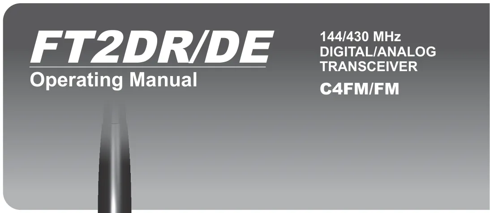</button><figcaption>Figure from page 1</figcaption><dialog id="fig-1"><p>Figure from page 1</p><form method="dialog"><button>Close</button></form></dialog></figure><figure><button aria-label="Enlarge Figure from page 1" class="zoom" data-dialog="fig-2" type="button">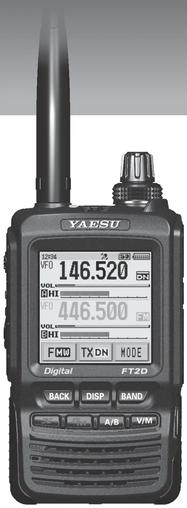</button><figcaption>Figure from page 1</figcaption><dialog id="fig-2"><p>Figure from page 1</p><form method="dialog"><button>Close</button></form></dialog></figure><ul>
<li>Before Using the Transceiver — 2</li>
<li>
<p>Introduction . — 6</p>
</li>
<li>
<p>Features of the FT2DR/DE — 6</p>
</li>
<li>Using the Touch Screen . — 7</li>
<li>How to Read This Manual . — 7</li>
<li>Checking the Supplied Items — 8</li>
<li>Safety Precautions (Be Sure to Read) — 9</li>
<li>
<p>Names and Functions of Controls — 14</p>
</li>
<li>
<p>Transceiver — 14</p>
</li>
<li>Touch Screen Display — 15</li>
<li>
<p>Entering Letters — 19</p>
</li>
<li>
<p>Preparation — 20</p>
</li>
<li>
<p>Attaching the Supplied Accessories — 20</p>
</li>
<li>
<p>Installing the Antenna — 20</p>
</li>
</ul>
<p>Attaching the Accessory Protective Cap/Belt</p>
<ul>
<li>
<p>Clip . — 20</p>
</li>
<li>
<p>Attaching the Protective Cap . — 20</p>
</li>
<li>Attaching the Belt Clip . — 20</li>
<li>Attaching a Hand Strap . — 21</li>
</ul>
<p>Preparing the Battery Pack/External Power</p>
<ul>
<li>
<p>Supply — 22</p>
</li>
<li>
<p>Installing/Removing the Battery Pack — 22</p>
</li>
<li>
<p>Installing the Battery Pack . — 22</p>
</li>
<li>Removing the Battery Pack . — 22</li>
<li>Charging the Battery Pack . — 22</li>
<li>How to Use the Battery Case (FBA-39) — 25</li>
</ul>
<p>Connecting an External Power Supply for Use in</p>
<ul>
<li>Vehicle — 26</li>
</ul>
<p>Connecting to an External Power Supply Using a</p>
<ul>
<li>Power Cable — 27</li>
<li>
<p>Using a microSD Memory Card . — 29</p>
</li>
<li>
<p>Usable microSD Memory Cards — 29</p>
</li>
</ul>
<p>Cautions when Using a microSD Memory</p>
<ul>
<li>Card — 29</li>
</ul>
<p>Mounting and Dismounting microSD Memory</p>
<ul>
<li>Card — 29</li>
<li>
<p>Formatting a microSD Memory Card — 31</p>
</li>
<li>
<p>Basic Operation — 32</p>
</li>
<li>
<p>Performing Communication — 32</p>
</li>
<li>
<p>Turning on the Transceiver — 32</p>
</li>
<li>Adjusting the Volume Level — 34</li>
<li>Toggling the Operating Band — 34</li>
<li>Selecting a Frequency Band . — 37</li>
<li>Tuning to a Frequency — 38</li>
<li>Selecting the Communication Mode — 39</li>
<li>Transmitting/Receiving Signals . — 40</li>
<li>
<p>Listening to the Radio . — 42</p>
</li>
<li>
<p>Listening to the AM/FM Radio — 42</p>
</li>
<li>
<p>Miscellaneous Settings . — 43</p>
</li>
<li>
<p>Setting Clock Time — 43</p>
</li>
<li>Muting Audio — 44</li>
<li>Changing the Transmission Power Level — 46</li>
<li>Adjusting the Squelch Level — 47</li>
<li>Setting the Frequency Step — 47</li>
<li>Changing the Mode — 48</li>
<li>Locking Keys and Switches — 49</li>
<li>Attenuator (ATT) Function . — 50</li>
<li>
<p>Restoring to Defaults (All Reset) — 51</p>
</li>
<li>
<p>Repeater Operation — 52</p>
</li>
<li>
<p>Repeater Operation — 52</p>
</li>
<li>
<p>Communicating Via the Repeater — 52</p>
</li>
<li>
<p>Repeater Shift — 53</p>
</li>
<li>
<p>Automatic Repeater Shift (ARS) — 53</p>
</li>
<li>
<p>Tone Calling (1750 Hz) — 53</p>
</li>
<li>
<p>Using the Memory — 54</p>
</li>
<li>
<p>A Wide Variety of Memory Functions . — 54</p>
</li>
<li>
<p>Registering to Memory Channel — 55</p>
</li>
<li>Split Memory — 56</li>
<li>Recalling a Memory Channel . — 57</li>
<li>
<p>Recalling the Home Channels — 57</p>
</li>
<li>
<p>Returning to the Previous Frequency . — 58</p>
</li>
<li>Changing the Home Channel Frequency . — 58</li>
<li>
<p>Clearing Memories . — 59</p>
</li>
<li>
<p>Restoring the Cleared Memories — 59</p>
</li>
<li>
<p>Using Memory Tag — 59</p>
</li>
<li>
<p>Assigning a Name to a Memory Channel . — 60</p>
</li>
<li>Displaying the Memory Tag — 61</li>
<li>
<p>Using Memory Bank — 62</p>
</li>
<li>
<p>Registering to Memory Banks . — 62</p>
</li>
<li>Recalling Memory Bank — 63</li>
</ul>
<p>Canceling Memory Channel Registration in</p>
<ul>
<li>Memory Bank . — 63</li>
<li>Assigning Name to Memory Bank — 64</li>
<li>Convenient Preset Receiver Memory Channels — 65</li>
</ul>
<p>Registering Preset Receiver Memory Channels</p>
<ul>
<li>into Memory Banks — 66</li>
</ul>
<p>Recalling Preset Receiver Memory Channel to</p>
<ul>
<li>Listen to the Weather Broadcast . — 66</li>
</ul>
<p>Recalling Preset Receiver Memory Channel to</p>
<ul>
<li>Listen to the International VHF (Marine) Radio — 67</li>
</ul>
<p>Recalling Preset Receiver Memory Channels to</p>
<ul>
<li>
<p>Listen to World Wide Broadcasts . — 68</p>
</li>
<li>
<p>Worldwide short wave broadcast — 69</p>
</li>
<li>
<p>Scanning Function — 71</p>
</li>
<li>VFO Scan — 71</li>
</ul><p>Skipping Frequencies You Do Not Want to</p>
<ul>
<li>Scan (Skip Search Memory) — 72</li>
</ul>
<p>Specifying the Frequencies You Do Not Want</p>
<ul>
<li>to Scan — 73</li>
</ul>
<p>Deleting the Frequency Registered to the Skip</p>
<ul>
<li>Search Memory Channel — 73</li>
</ul>
<p>Setting the Receive Operation When</p>
<ul>
<li>Scanning Stops — 74</li>
<li>Memory Channel Scanning — 76</li>
</ul>
<p>Specifying Skip/Selected Memory</p>
<ul>
<li>Channels — 77</li>
</ul>
<p>Scanning Only the Specified Memory</p>
<ul>
<li>Channels — 78</li>
<li>
<p>Scanning the Memory Bank . — 79</p>
</li>
<li>
<p>Memory Bank Link Scanning — 79</p>
</li>
<li>Programmable Memory Channel Scan (PMS) — 81</li>
</ul>
<p>Registering to the Programmable Memory</p>
<ul>
<li>Channels — 81</li>
</ul>
<p>Performing Programmable Memory Channel</p>
<ul>
<li>Scan — 81</li>
</ul>
<p><strong>Digital Group Monitor Function</strong></p>
<ul>
<li>Using the Digital GM Function — 83</li>
<li>What is the GM function? — 83</li>
<li>Standard Operation of the GM Function — 83</li>
</ul>
<p>Displaying All Stations (up to 24 Stations)</p>
<ul>
<li>Operating with the GM Function — 83</li>
</ul>
<p>Registering IDs of Friends in a Group and</p>
<ul>
<li>Displaying Only Registered GM Users — 84</li>
<li>
<p>Deactivating the GM Function — 84</p>
</li>
<li>
<p>Using the APRS / WIRES-X Functions — 85</p>
</li>
</ul>
<p>The APRS (Automatic Packet Reporting System)</p>
<ul>
<li>Function . — 85</li>
<li>
<p>What is the WIRES-X Function? — 85</p>
</li>
<li>
<p>Using the GPS Function — 86</p>
</li>
<li>The GPS Function — 86</li>
<li>Activating the GPS Function — 86</li>
<li>Method of Positioning by GPS — 88</li>
</ul>
<p>Displaying Position Information of Remote</p>
<ul>
<li>Stations in Digital Mode — 88</li>
<li>Saving GPS Information (GPS Log Function) — 89</li>
<li>Checking Tracks on Your PC — 90</li>
<li>
<p>GPS Screen Information and Operation . — 91</p>
</li>
<li>
<p>Displaying the GPS Information . — 91</p>
</li>
<li>
<p>Smart Navigation Function — 93</p>
</li>
<li>
<p>Real-Time Navigation Function . — 93</p>
</li>
<li>Backtrack Function — 93</li>
</ul>
<p>Registering Your Current Position
(Departure Point) (up to 3 Positions can Be</p>
<ul>
<li>Using the Back Track Function — 94</li>
</ul>
<p>Description of the BACK TRACK Function</p>
<ul>
<li>
<p>Screen — 95</p>
</li>
<li>
<p>Convenient Functions — 96</p>
</li>
<li>Dual Receive (DW) Function — 96</li>
</ul>
<p>VFO Dual Receive</p>
<ul>
<li>VFO mode → Priority memory channel — 97</li>
</ul>
<p>Memory Channel Dual Receive
Memory channel → Priority memory</p>
<ul>
<li>channel . — 98</li>
</ul>
<p>Home Channel Dual Receive</p>
<ul>
<li>Home channel → Priority memory channel . — 98</li>
</ul>
<p>AF-DUAL Receive Function (Receiving Signals
on Other Frequency Channels While Listening to</p>
<ul>
<li>Broadcast Radio) . — 100</li>
</ul>
<p>Listening to a Radio Broadcast Using the</p>
<ul>
<li>AF-DUAL Receive Function . — 100</li>
</ul>
<p>Setting the Resumption Time of Radio</p>
<ul>
<li>Reception . — 101</li>
<li>
<p>Using the DTMF Function — 103</p>
</li>
<li>
<p>Setting the DTMF Memory . — 103</p>
</li>
<li>Transmitting the Registered DTMF Code — 104</li>
<li>Manually Transmitting the DTMF Code — 105</li>
</ul>
<p>Spectrum Analyzer with Signal Strength Graph</p>
<ul>
<li>Band Scope Function — 106</li>
</ul>
<p>Taking Picture Using the Optional Camera-Mounted</p>
<ul>
<li>
<p>Speaker Microphone Snapshot Function — 107</p>
</li>
<li>
<p>Viewing the Saved Image — 108</p>
</li>
</ul>
<p>Transmitting the Saved Image to Other</p>
<ul>
<li>Transceivers — 108</li>
</ul>
<p><strong>Communicating with a Specific Remote</strong></p>
<ul>
<li>Station — 109</li>
<li>
<p>Using the Tone Squelch Function . — 109</p>
</li>
<li>
<p>Selecting the Squelch Type — 109</p>
</li>
<li>Setting the Tone Frequency — 110</li>
</ul>
<p>Searching for the CTCSS Tone transmitted</p>
<ul>
<li>by the Remote Station — 111</li>
<li>Setting the DCS Code — 112</li>
</ul>
<p>Searching for the DCS Code Used</p>
<ul>
<li>by the Remote Station — 112</li>
</ul>
<p>Notification of a Call from a Remote Station</p>
<ul>
<li>
<p>by Vibration — 113</p>
</li>
<li>
<p>Selecting the Vibrator Operation Mode — 114</p>
</li>
</ul>
<p>Notification of a Call from a Remote Station</p>
<ul>
<li>by the Bell Function — 114</li>
</ul>
<p>Changing the Number of Times the Bell</p>
<ul>
<li>Rings — 115</li>
</ul>
<p>Calling Only a Specific Station
New Pager Function 116</p><ul>
<li>Setting the Code for Your Station — 116</li>
<li>Activating the New Pager Function . — 117</li>
<li>Calling a Specific Station — 117</li>
</ul>
<p>Being Called by the Remote Station</p>
<ul>
<li>(Standby Operation) — 118</li>
</ul>
<p><strong>Customize Menu Settings for Individual Use</strong></p>
<ul>
<li>(Set Mode) — 119</li>
<li>
<p>Using Set Mode — 119</p>
</li>
<li>
<p>Set Mode Operation . — 119</p>
</li>
<li>Resetting the All Set Mode Settings — 120</li>
<li>Tables of Set Mode Operations — 121</li>
<li>Set Mode: DISPLAY Menu Operations . — 128</li>
</ul>
<p>Setting What to Display Using the Smart</p>
<ul>
<li>Navigation Function — 128</li>
<li>Setting the Compass Display . — 128</li>
</ul>
<p>Setting the Search Channels for the BAND</p>
<ul>
<li>SCOPE Function — 128</li>
<li>Changing the Lighting Condition . — 129</li>
<li>Selecting the Display Language — 129</li>
<li>Adjusting the LCD Contrast Level . — 129</li>
</ul>
<p>Adjusting the LCD Backlight and Key Button</p>
<ul>
<li>Light Brightness Level — 130</li>
</ul>
<p>Changing the Opening Message Displayed</p>
<ul>
<li>Immediately after Power-on — 130</li>
<li>Displaying the Battery Voltage . — 130</li>
<li>Changing the Display Pattern of the S-Meter — 131</li>
<li>Displaying the Software Version — 131</li>
<li>Set Mode: TX/RX Menu Operations — 132</li>
</ul>
<p>Reducing Receiver Sensitivity</p>
<ul>
<li>Attenuator (ATT) Function . — 132</li>
<li>Setting the Transmit Modulation Level . — 132</li>
<li>Switching the Receive Mode — 133</li>
</ul>
<p>Setting the Squelch Type for the Digital Mode <strong>.</strong> .. 133
Setting the Pop-up Time of the Remote Station</p>
<ul>
<li>Information — 133</li>
<li>Displaying Your Location in Digital Mode . — 134</li>
<li>Setting the Standby Beep — 134</li>
</ul>
<p>Adjusting the Microphone Sensitivity</p>
<ul>
<li>Microphone Gain — 134</li>
<li>Muting Audio — 135</li>
<li>Simultaneous Radio Broadcast Reception — 135</li>
<li>
<p>Set Mode: MEMORY Menu Operations — 136</p>
</li>
<li>
<p>Setting Memory Bank Link — 136</p>
</li>
<li>Assigning Name to Memory Bank — 136</li>
<li>Assigning Name to Memory Channel — 136</li>
</ul>
<p>Prohibiting Registration to a Memory Channel</p>
<ul>
<li>Memory Channel Protect Function — 137</li>
<li>Setting Memory Skip Function — 137</li>
</ul>
<p>Setting the Memory Channels Used for</p>
<ul>
<li>Set Mode: SIGNALING Menu Operations — 138</li>
</ul>
<p>Notification of a Call from a Remote Station</p>
<ul>
<li>by the Bell — 138</li>
<li>Selecting a DCS Code — 138</li>
</ul>
<p>Transmitting and Receiving a DCS Code with an</p>
<ul>
<li>Inverted Phase DCS INVERSION Function — 138</li>
</ul>
<p>Setting the Transmission Method of the DTMF</p>
<ul>
<li>Code — 138</li>
<li>Setting the DTMF Code — 139</li>
</ul>
<p>Calling Only a Specific Station (New Pager</p>
<ul>
<li>Function) — 139</li>
</ul>
<p>Enabling No-communication Squelch Function</p>
<ul>
<li>PR FREQUENCY Function . — 139</li>
</ul>
<p>Adjusting the Squelch Level SQL LEVEL</p>
<ul>
<li>Function — 139</li>
</ul>
<p>Setting the Squelch to Activate at a Specified</p>
<ul>
<li>Signal Strength S-Meter Squelch Function . — 140</li>
</ul>
<p>Setting the Squelch Type for Transmit and</p>
<ul>
<li>Receive SQL EXPANSION Function — 141</li>
<li>Setting the Type of Squelch — 141</li>
<li>Selecting a CTCSS Tone Frequency — 141</li>
</ul>
<p>Setting the Sound and Speed During Tone</p>
<ul>
<li>Search Tone Search Function . — 141</li>
<li>Set Mode: SCAN Menu Operations — 142</li>
</ul>
<p>Setting the Surveillance Interval Time for Priority</p>
<ul>
<li>Channels DW INTERVAL TIME Function — 142</li>
</ul>
<p>Setting the Illumination On/Off When Scanning</p>
<ul>
<li>Stops LAMP Function — 142</li>
</ul>
<p>Setting the Time to Resume Scanning SCAN</p>
<ul>
<li>RE-START Function — 142</li>
</ul>
<p>Selecting a Receive Operation When Scanning</p>
<ul>
<li>Stops . — 143</li>
<li>Setting the Scanning Range — 143</li>
<li>Set Mode: GM Menu Operations . — 144</li>
<li>Set Mode: WIRES-X Menu Operations — 144</li>
<li>Set Mode: CONFIG Menu Operations — 145</li>
</ul>
<p>Turn Power Off Automatically</p>
<ul>
<li>Auto Power-Off Function . — 145</li>
</ul>
<p>Preventing Accidental Transmission Busy</p>
<ul>
<li>Channel Lockout (BCLO) Function . — 145</li>
</ul>
<p>Setting the Key Operation Confirmation</p>
<ul>
<li>Sound — 146</li>
<li>Turning off the BUSY Indicator — 146</li>
</ul>
<p>Setting the Clock Shift for the Micro Computer</p>
<ul>
<li>Clock Type Function — 147</li>
</ul>
<p>Setting a Time Interval for Saving GPS Position</p>
<ul>
<li>Information — 147</li>
</ul>
<p>Permitting/Prohibiting Transfer of Home Channel</p>
<ul>
<li>Frequency to VFO — 147</li>
<li>Using the LED Light — 148</li>
</ul><ul>
<li>Appendix — 163</li>
<li>Optional Parts . — 163</li>
</ul>
<p>If you suspect malfunction Check the following</p>
<ul>
<li>
<p>items before requesting a repair — 164</p>
</li>
<li>
<p>The transceiver does not turn on — 164</p>
</li>
<li>There is no sound — 164</li>
<li>There is no transmission of radio waves. . — 164</li>
<li>The keys or DIAL does not respond. . — 164</li>
<li>Index . — 166</li>
<li>
<p>Specifications — 168</p>
</li>
<li>
<p>Setting the Operation of the Key — 148</p>
</li>
</ul>
<p>Turning on/off the Transceiver at the Specified Time</p>
<ul>
<li>Timer Function — 149</li>
<li>Password Function — 149</li>
</ul>
<p>Setting the PTT Delay Time PTT DELAY</p>
<ul>
<li>Function — 150</li>
<li>Setting the ARS Function RPT ARS Function — 150</li>
</ul>
<p>Setting the Repeater Shift Direction RPT SHIFT</p>
<ul>
<li>Function — 150</li>
</ul>
<p>Setting the frequency offset for Repeater Shift
RPT SHIFT FREQ Function............................... 151|Col2|
|---|---|
|Disabling Receiver While No Signal Is Received</p>
<ul>
<li>Receiver Battery Save Function — 151</li>
<li>Changing the Frequency Step Manually. — 151</li>
<li>Setting Clock Time — 151</li>
</ul>
<p>Limit the time of a continuous transmission|Disabling Receiver While No Signal Is Received</p>
<ul>
<li>Receiver Battery Save Function — 151</li>
<li>Changing the Frequency Step Manually. — 151</li>
<li>Setting Clock Time — 151</li>
</ul>
<p>Limit the time of a continuous transmission|</p>
<ul>
<li>(TOT Function). — 152</li>
</ul>
<p>Setting the Frequency Selection Range for
Operation in VFO Mode VFO MODE</p>
<ul>
<li>Function.............................................................. 152|(TOT Function). — 152</li>
</ul>
<p>Setting the Frequency Selection Range for
Operation in VFO Mode VFO MODE</p>
<ul>
<li>Function — 152</li>
</ul>
<p>|Notifying a Call From a Remote Station by
Vibration<strong>.</strong>............................................................ 152|Notifying a Call From a Remote Station by</p>
<ul>
<li>Vibration. — 152</li>
<li>Swapping the Dial Knob Functions. — 152</li>
<li>Set Mode: APRS Menu Operations — 153</li>
<li>Set Mode: SD CARD Menu Operations — 154</li>
</ul>
<p>Saving/Loading Data to/from microSD Memory</p>
<ul>
<li>Card — 154</li>
</ul>
<p>Saving/Loading Memory Channel Information to/</p>
<ul>
<li>from microSD Memory Card — 155</li>
</ul>
<p>Saving/Loading GROUP ID Information</p>
<ul>
<li>to/from a microSD Memory Card — 155</li>
<li>Formatting a microSD Memory Card — 156</li>
<li>Set Mode: OPTION Menu Operations. — 157</li>
</ul>
<p>Setting the Optional Microphone With Camera</p>
<ul>
<li>for Use................................................................ 157|Swapping the Dial Knob Functions. — 152</li>
<li>Set Mode: APRS Menu Operations — 153</li>
<li>Set Mode: SD CARD Menu Operations — 154</li>
</ul>
<p>Saving/Loading Data to/from microSD Memory</p>
<ul>
<li>Card — 154</li>
</ul>
<p>Saving/Loading Memory Channel Information to/</p>
<ul>
<li>from microSD Memory Card — 155</li>
</ul>
<p>Saving/Loading GROUP ID Information</p>
<ul>
<li>to/from a microSD Memory Card — 155</li>
<li>Formatting a microSD Memory Card — 156</li>
<li>Set Mode: OPTION Menu Operations. — 157</li>
</ul>
<p>Setting the Optional Microphone With Camera</p>
<ul>
<li>for Use — 157</li>
<li>Set Mode: CALLSIGN Menu Operations................ 158|Set Mode: CALLSIGN Menu Operations. — 158</li>
<li>Functions to Use as Necessary — 159</li>
</ul>
<p>Using the Transceiver for Packet</p>
<ul>
<li>Communication....................................................... 159|Functions to Use as Necessary — 159</li>
</ul>
<p>Using the Transceiver for Packet</p>
<ul>
<li>Communication — 159</li>
<li>Clone Operation — 160</li>
<li>Connecting an External Device — 161</li>
<li>Connecting to a PC. — 161</li>
<li>Connecting to an External Device — 162</li>
<li>Connection Cables............................................. 162|Clone Operation — 160</li>
<li>Connecting an External Device — 161</li>
<li>Connecting to a PC. — 161</li>
<li>Connecting to an External Device — 162</li>
<li>Connection Cables — 162</li>
<li>Data Cable (CT-170) — 162</li>
<li>Data Cable (CT-170) — 162
|</li>
<li>Data Output Cable (CT-176|) — 162</li>
</ul><table>
<thead>
<tr>
<th>Introduction Features of the FT2DR/DE</th>
<th>Col2</th>
</tr>
</thead>
<tbody>
<tr>
<td></td>
<td></td>
</tr>
<tr>
<td></td>
<td></td>
</tr>
<tr>
<td></td>
<td></td>
</tr>
<tr>
<td>m   Digital communication (C4FM (Quaternary FSK), FDMA system)�����������������������������39</td>
<td></td>
</tr>
<tr>
<td>m   Equipped with AMS (Automatic Mode Select) Function���������������������������������������������39</td>
<td></td>
</tr>
</tbody>
</table>
<p>Automatically selects between 4 modes of transmission according to the signal being
received.|
m   Digital communication (C4FM (Quaternary FSK), FDMA system)�����������������������������39
m   Equipped with AMS (Automatic Mode Select) Function���������������������������������������������39</p>
<p>Automatically selects between 4 modes of transmission according to the signal being
received.|
|m  External power supply connection�����������������������������������������������������������������������������15
m   Simultaneous reception on two different bands,
or within the same band (V+V/U+U)��������������������������������������������������������������������34, 36
m   Independent switching keys for A-band and B-band and TX/BUSY display��������������36
m   Wide-band reception over the range of 500 kHz to 999.900 MHz�����������������������������36
m   Waterproof design equivalent to IPX5, which protects the transceiver
from rain and splashes�����������������������������������������������������������������������������������������������13</p>
<ul>
<li>m Large 160×160 dot LCD screen and touch panel — 15</li>
</ul>
<p>m   WIRES-X connection support����������������������������������See WIRES-X instruction manual*
m   Equipped with GM function...................................See GM function instruction manual*
m   Large-capacity 1266ch with 24 memory banks (maximum of 100 channels can be
saved on each bank)��������������������������������������������������������������������������������������������������54
m   Display memory tags comprised of up to 16 one-byte characters�����������������������������59
m   Convenient reception of preset receiver memory channels���������������������������������������65</p>
<p>By selecting preset frequencies, you can receive shortwave broadcast,
and international VHF radio stations with ease.
m   A wide variety of scan functions���������������������������������������������������������������������������������71
m   Built-in GPS unit allowing display of your current location and heading
information�����������������������������������������������������������������������������������������������������������������86
m   Ready for APRS® communication using the world standard 1200 / 9600bps AX25
modem (B-band only).................................................... See APRS instruction manual*
m   High-resolution band scope function to display ± 35 channels��������������������������������106
m   Equipped with the smart navigation function�������������������������������������������������������������93
m   A variety of individual selective calling functions; such as tone squelch (CTCSS)
and DCS functions���������������������������������������������������������������������������������������������������109|m  External power supply connection�����������������������������������������������������������������������������15
m   Simultaneous reception on two different bands,
or within the same band (V+V/U+U)��������������������������������������������������������������������34, 36
m   Independent switching keys for A-band and B-band and TX/BUSY display��������������36
m   Wide-band reception over the range of 500 kHz to 999.900 MHz�����������������������������36
m   Waterproof design equivalent to IPX5, which protects the transceiver
from rain and splashes�����������������������������������������������������������������������������������������������13</p>
<ul>
<li>m Large 160×160 dot LCD screen and touch panel — 15</li>
</ul>
<p>m   WIRES-X connection support����������������������������������See WIRES-X instruction manual*
m   Equipped with GM function...................................See GM function instruction manual*
m   Large-capacity 1266ch with 24 memory banks (maximum of 100 channels can be
saved on each bank)��������������������������������������������������������������������������������������������������54
m   Display memory tags comprised of up to 16 one-byte characters�����������������������������59
m   Convenient reception of preset receiver memory channels���������������������������������������65</p>
<p>By selecting preset frequencies, you can receive shortwave broadcast,
and international VHF radio stations with ease.
m   A wide variety of scan functions���������������������������������������������������������������������������������71
m   Built-in GPS unit allowing display of your current location and heading
information�����������������������������������������������������������������������������������������������������������������86
m   Ready for APRS® communication using the world standard 1200 / 9600bps AX25
modem (B-band only).................................................... See APRS instruction manual*
m   High-resolution band scope function to display ± 35 channels��������������������������������106
m   Equipped with the smart navigation function�������������������������������������������������������������93
m   A variety of individual selective calling functions; such as tone squelch (CTCSS)
and DCS functions���������������������������������������������������������������������������������������������������109|
|m  Vibrator to alert you of signal reception, in addition to the audible bell��������������������113
m   New pager function for calling only specific stations������������������������������������������������116
m   LED Backlight for easy viewing of the LCD outdoors����������������������������������������������147
m   Battery save function to extend battery operating time����������������������������������������������46
m   Data terminal for communication with external equipment and firmware updates���162
m   Compatible with microSD memory cards�������������������������������������������������������������������29</p>
<ul>
<li>
<p>m Snapshot function (an optional camera microphone MH-85A11U is required) — 107</p>
</li>
<li>
<p>WIRES-X, GM function and APRS instruction manuals are not included in the product
package.
|m  Vibrator to alert you of signal reception, in addition to the audible bell��������������������113
m   New pager function for calling only specific stations������������������������������������������������116
m   LED Backlight for easy viewing of the LCD outdoors����������������������������������������������147
m   Battery save function to extend battery operating time����������������������������������������������46
m   Data terminal for communication with external equipment and firmware updates���162
m   Compatible with microSD memory cards�������������������������������������������������������������������29</p>
</li>
<li>
<p>m Snapshot function (an optional camera microphone MH-85A11U is required) — 107</p>
</li>
<li>
<p>WIRES-X, GM function and APRS instruction manuals are not included in the product
package.
|
|They are available and may be d|ownloaded from the Yaesu.com website.|</p>
</li>
</ul><p>~~<strong>Using the Touch Screen</strong>~~</p>
<p>y <strong>y</strong> <strong>Caution when Using the Touch Screen</strong></p>
<p>Observe the following precautions when using the touch screen. Failing to do so may
result in malfunction or damage.</p>
<p>❍ ❍ Operate the touch screen with your fingers. Do not operate with any pointed objects</p>
<p>including your fingernail or pen.
❍ ❍ Do not apply any excessive force to the touch screen.</p>
<p>❍ ❍ Do not scrub or scratch on the touch screen when cleaning it.</p>
<p>y <strong>y</strong> <strong>Restrictions on touch operations</strong></p>
<p>❍ ❍ The touch screen does not respond to any of the flicking and pinching-in/out operations.</p>
<p>❍ ❍ Due to the characteristics of the LCD, when the ambient temperature is low, the touch</p>
<p>screen may respond slowly.</p>
<p>y <strong>y</strong> <strong>Touch Screen Upkeep</strong></p>
<p>❍ ❍ After turning off the transceiver, wipe the touch screen with a soft dry cloth.</p>
<p>❍ ❍ Do not use water, chemical agents or mild detergents.</p>
<p>~~<strong>How to Read This Manual</strong>~~</p>
<p>Common explanatory expressions used in this manual are as follows:</p>
<p>|Press ...............
Press and hold|........................................ Indicates to simply press a key or switch.
for over one second....... Indicates to press a key or switch for over
one second.|Col3|
|---|---|---|
|Touch<strong>[F MW]</strong>................................................... Indicates briefly touching the screen.|Touch<strong>[F MW]</strong>................................................... Indicates briefly touching the screen.|Touch<strong>[F MW]</strong>................................................... Indicates briefly touching the screen.|
|Touch<strong>[F MW]</strong> for over one second ................. Indicates touching the screen for over
one second.|Touch<strong>[F MW]</strong> for over one second ................. Indicates touching the screen for over
one second.|Touch<strong>[F MW]</strong> for over one second ................. Indicates touching the screen for over
one second.|
|The following notations are also used
~~<strong>Caution</strong>~~
~~<strong>Tip</strong>~~|The following notations are also used
~~<strong>Caution</strong>~~
~~<strong>Tip</strong>~~|in this manual.
 ...Explains caution to observe during operation.
 ...Explains operating suggestions or useful tips.|</p><p>~~<strong>Checking the Supplied Items</strong>~~</p>
<p>Transceiver</p>
<p>Battery charger
PA-48B/C/F/U* or SAD-14B</p>
<ul>
<li>“B” suffix is for use with 120 VAC</li>
</ul>
<p>(Type-A plug), “C” suffix is for use
with 230-240 VAC (Type-C plug), “F”</p>
<p>Antenna</p>
<p>Belt clip</p>
<p>Battery pack
protective cap</p>
<p>Long life
lithium-ion battery pack</p>
<p>(SBR-14LI: 7.2V,</p>
<p>2,200 mAh)</p>
<p>USB cable</p>
<ul>
<li>
<p>Quick Manual</p>
</li>
<li>
<p>Operating Manual
(this manual)</p>
</li>
<li>
<p>Warranty Card</p>
</li>
</ul>
<p>~~<strong>Cautions</strong>~~</p>
<p>yy Ensure that the name of the dealer from which you purchased the transceiver and the date of</p>
<p>purchase are indicated on the warranty card.
yy If any item is missing, contact the dealer from which you purchased the transceiver.</p><figure><button aria-label="Enlarge Figure from page 8" class="zoom" data-dialog="fig-3" type="button">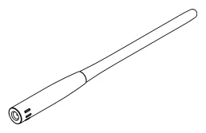</button><figcaption>Figure from page 8</figcaption><dialog id="fig-3"><p>Figure from page 8</p><form method="dialog"><button>Close</button></form></dialog></figure><p><strong>Be sure to read the safety precautions to use this product safely.</strong></p>
<p>Yaesu is not liable for failures and other problems caused due to misuse or use of this
product by you or a third party. Also, Yaesu is not liable for damages caused through
use of this product by you or a third party except in the case where ordered to pay for
damages under the laws.</p>
<p><strong>Types and Meanings of Symbols</strong></p>
<h2 id="danger-warning-caution"><strong>DANGER</strong> <strong>WARNING</strong> <strong>CAUTION</strong></h2>
<p>Indicates an imminently hazardous situation which, if not
avoided, could result in death or serious injury.</p>
<p>Indicates a potentially hazardous situation which, if not
avoided, could result in death or serious injury.</p>
<p>Indicates a potentially hazardous situation which, if not
avoided, may result in minor or moderate injury or only
property damage.</p>
<p><strong>Types and Meanings of Legends</strong></p>
<p>Indicates a prohibited action, not to be done in order to use this product safely.
For example, indicates that the product should not be disassembled.</p>
<p>Indicates a required action, to be done in order to use this product safely.
For example, indicates that the power plug should be removed.</p>
<h2 id="danger">~~<strong>DANGER</strong>~~</h2>
<p><strong>Do not use this product in “an area</strong>
<strong>where use of it is prohibited”, e.g., in-</strong>
<strong>side the hospital, airplane, or train.”</strong>
This product can affect electronic or
medical devices.</p>
<p><strong>Do not use this product while riding</strong>
<strong>a bicycle or driving a car. Accidents</strong>
<strong>can result.</strong>
Be sure to stop the bicycle or car at a safe
place before using this product.</p>
<p><strong>Those who are carrying a medical</strong>
<strong>device such as a cardiac pacemaker</strong>
<strong>should not perform transmission</strong>
<strong>near the device. When transmitting,</strong>
<strong>use an external antenna and keep as</strong>
<strong>far as possible away from the exter-</strong>
<strong>nal antenna.</strong>
The radio wave emitted by the transmitter can cause the medical device to malfunction and result in an accident.</p>
<p><strong>Do not use this product or the battery</strong>
<strong>charger in a place where inflammable</strong>
<strong>gas is generated.</strong>
A fire or explosion can occur.</p><p><strong>Do not perform transmission in a</strong>
<strong>crowded place for the safety of per-</strong>
<strong>sons using a medical device such as</strong>
<strong>a cardiac pacemaker.</strong>
The radio wave emitted from this product can cause the medical device to malfunction and result in an accident.</p>
<p><strong>Do not touch any material leak-</strong>
<strong>ing from the battery pack with bare</strong>
<strong>hands.</strong>
The chemical that has stuck to your skin
or entered your eye can cause chemical
burns. In such a case, consult the doctor
immediately.</p>
<p><strong>Do not solder or short-circuit the ter-</strong>
<strong>minal of the battery pack.</strong>
A fire, leak, overheating, explosion, or ignition can result.
Do not carry the battery pack together
with a necklace, hair pin, or small metal
objects. A short circuit can result.</p>
<p><strong>If it starts thundering when the exter-</strong>
<strong>nal antenna is used, immediately turn</strong>
<strong>off this product and disconnect the</strong>
<strong>external antenna from it.</strong>
A fire, electrical shock, or damage may
result.</p>
<h2 id="warning">~~<strong>WARNING</strong>~~</h2>
<p><strong>Do not power this transceiver with a</strong>
<strong>voltage other than the specified pow-</strong>
<strong>er supply voltage.</strong>
A fire, electric shock, or damage may
result.</p>
<p><strong>Do not use the battery pack for any</strong>
<strong>model other than the specified trans-</strong>
<strong>ceiver.</strong>
A fire, leak, overheating, explosion, or
ignition can result.</p>
<p><strong>This product has a waterproof struc-</strong>
<strong>ture and conforms to “IPX5” when</strong>
<strong>the included antenna and battery</strong>
<strong>pack are installed and rubber caps</strong>
<strong>are securely attached to the MIC/SP</strong>
<strong>jack, EXTDC IN jack, DATA terminal,</strong>
<strong>and micro SD slot. If this transceiver</strong>
<strong>gets wet, wipe it with a dry cloth, etc.</strong>
<strong>do not leave it exposed to the mois-</strong>
<strong>ture.</strong>
Leaving this product in a wet condition
can degrade its performance, shorten its
life, or cause a failure or electrical shock.</p>
<p><strong>Do not make very long transmissions.</strong>
The main body of the transceiver may
overheat, resulting in a failure or burns.</p>
<p><strong>Do not disassemble or make any al-</strong>
<strong>teration to this product.</strong>
An injury, electric shock, or failure can
result</p>
<p><strong>Do not handle the battery pack or</strong>
<strong>charger with wet hands. Do not insert</strong>
<strong>or remove the power plug with wet</strong>
<strong>hands.</strong>
An injury, leak, fire, or failure can result.</p>
<p><strong>If smoke or strange odor is emitted</strong>
<strong>from the main body, battery pack,</strong>
<strong>or battery charger, immediately turn</strong>
<strong>the transceiver off; remove the bat-</strong>
<strong>tery pack, and remove the power plug</strong>
<strong>from the outlet.</strong>
A fire, leak, overheating, damage, ignition, or failure can result. Contact the
dealer from which you purchased this
product or Yaesu Amateur Customer
Support.</p>
<p><strong>Do not use the battery pack which is</strong>
<strong>externally damaged or deformed.</strong>
A fire, leak, heating, explosion, or ignition can result.</p>
<p><strong>Do not use any battery charger which</strong>
<strong>is not specified by Yaesu.</strong>
A fire or failure can result.</p>
<p><strong>When transmitting, keep the trans-</strong>
<strong>ceiver at least 5.0 mm (3/16 inch)</strong>
<strong>away from your body.</strong>
<strong>Use only the supplied antenna. Do</strong>
<strong>not use modified or damaged anten-</strong>
<strong>nas.</strong></p><p><strong>Keep the terminals of the battery</strong>
<strong>pack clean.</strong>
If terminal contacts are dirty or corroded,
a fire, leak, overheating, explosion, or
ignition can result.</p>
<p><strong>If charging of the battery pack can-</strong>
<strong>not be completed within the specified</strong>
<strong>charging time, immediately remove</strong>
<strong>the power plug of the battery charger</strong>
<strong>from the outlet.</strong>
A fire, leak, overheating, explosion, or
ignition can result.</p>
<h2 id="caution">~~<strong>CAUTION</strong>~~</h2>
<p><strong>Do not dangle or throw this product</strong>
<strong>by holding its antenna.</strong>
This product can hit and injure someone. In addition, doing so can result in a
transceiver failure or damage.</p>
<p><strong>Do not use transceiver in a crowded</strong>
<strong>place.</strong>
The antenna can hit someone, resulting
in a injury.</p>
<p><strong>Do not place this transceiver in a</strong>
<strong>place subject to direct sunlight or</strong>
<strong>near a heater.</strong>
The transceiver can deform or discolor.</p>
<p><strong>Do not place this transceiver in a hu-</strong>
<strong>mid or dusty place.</strong>
A fire or failure can result.</p>
<p><strong>During transmission, keep the anten-</strong>
<strong>na as far from you as possible.</strong>
Long-time exposure to electromagnetic
waves can have a negative impact on
your health.</p>
<p><strong>Do not clean the case with thinner or</strong>
<strong>benzene.</strong>
Use a soft, dry cloth to clean the case.</p>
<p><strong>If the transceiver is not being used</strong>
<strong>for an extended period, turn it off and</strong>
<strong>remove the battery pack for safety.</strong></p>
<p><strong>Do not drop, strike, or throw the</strong>
<strong>transceiver.</strong>
A failure or damage may result.</p>
<p><strong>Keep magnetic cards and video tape</strong>
<strong>away from the transceiver.</strong>
The data recorded on cash cards or
video tape can be erased.</p>
<p><strong>Do not use the earpiece microphone,</strong>
<strong>earphones, or headphones at an ex-</strong>
<strong>tremely high volume level.</strong>
Hearing impairment can result.</p>
<p><strong>Keep this product out of reach of chil-</strong>
<strong>dren.</strong>
An injury, etc. can result.</p>
<p><strong>Install the hand strap and belt clip</strong>
<strong>securely.</strong>
If they are installed improperly, the FT2DR/DE may fall or drop, resulting in an
injury or damage.</p>
<p><strong>Do not place a heavy object on the</strong>
<strong>power cord of the battery charger.</strong>
The battery cord can be damaged, resulting in a fire or electric shock.</p>
<p><strong>Do not use the included battery char-</strong>
<strong>ger to charge any battery pack which</strong>
<strong>is not specified for use with the char-</strong>
<strong>ger.</strong>
A fire can result.</p>
<p><strong>Do not operate the transmitter near</strong>
<strong>the TV or radio.</strong>
Radio disturbance can occur in the
transceiver, the TV, or the radio.</p>
<p><strong>Do not use any products other than</strong>
<strong>the specified options and accesso-</strong>
<strong>ries.</strong>
A failure can result.</p>
<p><strong>When the battery charger is not in</strong>
<strong>use, remove its power plug from the</strong>
<strong>outlet</strong></p><p><strong>Charge the battery pack within the</strong>
<strong>temperature range from +5 °C to</strong>
<strong>+35 °C (+41 °F to +95 °F).</strong>
Charging the battery pack outside this
temperature range can cause leak,
overheating, decrease in performance,
or reduction in service life can result.</p>
<p><strong>When unplugging the power cord of</strong>
<strong>the battery charger, be sure to hold</strong>
<strong>the power plug.</strong>
Pulling the power cord can damage it
and cause a fire or electronic shock.</p>
<p><strong>Before discarding the worn battery</strong>
<strong>pack, affix tape or the like to its ter-</strong>
<strong>minals.</strong></p>
<p><strong>Before using this transceiver in a</strong>
<strong>hybrid or fuel-saving car, be sure to</strong>
<strong>check with the automobile manufac-</strong>
<strong>turer regarding use of the transceiver</strong>
<strong>in that car.</strong>
Noise generated by an onboard electrical device (inverter, etc.) can disrupt the
normal operation of the transceiver.</p><p><strong>About Waterproofng Feature Conforming to IPX5</strong></p>
<p>When the included antenna and battery pack are installed and the MIC/SP jack, EXT
DC IN jack, DATA terminal, and micro SD slot are securely covered with rubber caps,
this product is moisture and splash resistant. To ensure continued waterproofing
protection, be sure to check the following points before use.</p>
<p>m <strong>Check for damages, deterioration, and dirt.</strong></p>
<p>Antenna rubber, key switch rubber, MIC/SP jack, EXT DC IN jack, DATA terminal, micro SD
slot rubber cap, and battery pack joint.</p>
<p>m <strong>Cleaning</strong></p>
<p>When this product is contaminated with seawater, sand, or dirt, rinse with fresh water, and then
wipe with a dry cloth immediately.</p>
<p>m <strong>Recommended maintenance interval</strong></p>
<p>To insure continued water resistance and optimal performance, it is recommended that
maintenance be performed annually, or when any damage or deterioration is found. Note that
the maintenance service is subject to fees.</p>
<p>m <strong>Do not immerse this product in the following liquids:</strong></p>
<p>Sea, pool, hot spring, water containing soap, detergent, or bath additive, alcohol, or chemicals</p>
<p>m <strong>Do not leave this product for an extended time in the following places:</strong></p>
<p>Bathroom, kitchen, or humid place</p>
<p>m <strong>Other precautions</strong></p>
<p>Since this product is not totally waterproof, it cannot be immersed in water.</p><p>~~<strong>Transceiver</strong>~~</p>
<p>①</p>
<p>②</p>
<p>③
④
⑤</p>
<p>⑥</p>
<p>⑦</p>
<p>⑧</p>
<p>⑨</p>
<p>⑩</p>
<p>⑩ <strong>B</strong> <strong>tt</strong> <strong>k</strong>*</p>
<p>⑪</p>
<p>⑫</p>
<p>⑬</p>
<p>⑭</p>
<p>⑮</p>
<p>⑯</p>
<p>⑰</p>
<p>⑱</p>
<p>⑲</p>
<p>⑳</p>
<p>㉑</p>
<p>㉒</p>
<p>㉓</p><p>~~<strong>Touch Screen Display</strong>~~</p>
<p>*: When the included antenna and battery pack are
installed and the MIC/SP jack, EXT DC IN jack, DATA
terminal, and micro SD slot are securely covered with
rubber caps, the FT2DR/DE meets the waterproofing
performance conforming to IPX5 (See page 13).</p>
<p>⑦ Displays the time.</p>
<dl>
<dt>⑧ Displays the frequency shift direction during</dt>
<dd>
<p>Lights when Auto Power Off is active</p>
</dd>
</dl>
<p>repeater operation ( see page 52).
-: Minus shift
+: Plus shift
@ : Split operation</p>
<p>⑩ Displays the frequency.
⑪ Displays icon types.</p>
<p>①</p>
<p>②</p>
<p>③</p>
<p>⑬</p>
<p>⑭</p>
<p>⑮</p>
<p>⑬</p>
<p>⑭</p>
<dl>
<dt>( see page 145).</dt>
<dd>Lights when DTMF function is</dd>
</dl>
<p>① This is the A-band display area.
② This is the B-band display area.
③ Displays touch keys.
④ Displays mode.</p>
<dl>
<dt>enabled ( see page 103).</dt>
<dd>
<dl>
<dt>Lights when GPS is acquired ( see</dt>
<dt>page 86).</dt>
<dd>Lights when GPS Log Function is</dd>
</dl>
</dd>
</dl>
<p>In VFO mode, “VFO” is displayed.
In Memory mode, “MR” and the channel
number are displayed.
⑤ Display Bar indicates the volume level.
⑥ Displays the transmit output icon, the S</p>
<dl>
<dt>enabled ( see page 89).</dt>
<dd>Lights when a microSD memory card</dd>
</dl>
<p>is inserted ( see page 29).
⑫ The battery condition is displayed in 8</p>
<dl>
<dt>steps.</dt>
<dd>
<p>Full battery power</p>
</dd>
<dd>
<p>Battery is depleted. Charge battery.</p>
</dd>
<dd>
<p>(When blinking) Charge battery</p>
</dd>
</dl>
<p>immediately.</p>
<p>meter and the PO meter levels.
S meter: Displays the received signal
strength in 9 steps.
PO meter: Displays the transmit power level
in 4 steps.</p>
<p>H I : High power (5W)
L 3 : LOW 3 power (2.5W)
L 2 : LOW 2 power (1W)</p><p>⑬ Displays squelch type ( see page 109)
<strong>TN</strong> : Lights when the tone encoder
function is enabled.
<strong>TSQ</strong> : Lights when the tone squelch</p>
<p>⑭ Displays operation mode.</p>
<p>function is enabled.
<strong>DCS</strong> : Lights up when the DCS function is</p>
<p>enabled.
<strong>RTN</strong> : Lights when the reverse tone</p>
<dl>
<dt>function is enabled.</dt>
<dt><strong>PR</strong> : Lights when the idle signal squelch</dt>
<dt>function is enabled.</dt>
<dt><strong>PAG</strong> : Lights when the pager is enabled.</dt>
<dt><strong>DC</strong> : Lights when the transceiver is set</dt>
<dt>to send the DCS code only during</dt>
<dt>transmission.</dt>
<dt><strong>T-D</strong> : Lights when the transceiver is set</dt>
<dd>
<p>Auto mode (automatic switching</p>
</dd>
</dl>
<p>among Analog AM, Analog FM,
and Digital) *The display of the
“FM” portion differs according to
the selected mode.
<strong>DN</strong> : Wide digital mode (digital mode
using C4FM modulation)
<strong>VW</strong> : Wide digital mode (high-quality</p>
<p>digital communication)
⑮
appears when the bell function is active
( see page 114).</p>
<p>to send the CTCSS tone signal
during transmit, and wait for the
DCS code in receive mode.
<strong>D-T</strong> : Lights when the transceiver is</p>
<p>set to send the DCS code during
transmit, and wait for the CTCSS
tone signal in receive mode.
Displays the APRS baud rate (B-band only)
( APRS function Instruction manual).</p><p>y <strong>y</strong> <strong>Dual Band Screen</strong>
A-band and B-band are displayed in a top-down fashion.</p>
<pre><code>         - Touching **[F MW]** displays the function menu screen.

         - Touching **[TX M]** enables the communication mode to be
</code></pre>
<p>fixed on the transmission side.</p>
<pre><code>         - Touching **[MODE]** each time switches the operation
</code></pre>
<p>mode.</p>
<p>y <strong>y</strong> <strong>Function Menu Screen</strong>
Touching <strong>[F MW]</strong> displays the function menu screen.</p>
<p>y <strong>y</strong> <strong>Band Scope Screen</strong>
The band scope screen can be displayed by touching [SCOPE] from the function menu
screen.</p>
<p>~~<strong>Reference</strong>~~ You can change the number of band scope channels</p>
<p>second to enter Set mode, then select <strong>[DISPLAY]</strong> → <strong>[3</strong>
<strong>BAND SCOPE]</strong> to select the desired number of channels
(17ch/35ch/71ch).</p><p>y <strong>y</strong> <strong>BACKTRACK Screen</strong></p>
<pre><code>           - The compass setting is displayed to the upper left of the
</code></pre>
<p>compass icon. “H-UP” indicates the vehicle direction
of travel is shown at the top of the compass. “N-UP” is
shown when the compass is set to always indicate North
at the top. To change the compass setting, enter Set
mode, then select <strong>[DISPLAY]</strong> → <strong>[2 HEADING UP]</strong> .</p>
<pre><code>           - Upon retrieval of the registered position information, the
</code></pre>
<p>distance from the current position is displayed the upper
right of the compass icon.</p>
<pre><code>         - Touching **[YR]** displays the position of the received
</code></pre>
<p>station on the compass icon (only when the received
signal carries the position information).</p>
<pre><code>         - Touching **[MY]** displays your station’s heading direction
</code></pre>
<p>on the compass icon.</p>
<pre><code>         - Touching **[MEM]** switches to the registration mode to
</code></pre>
<p>record.</p>
<pre><code>         - Touching **[** ★ **]** displays the position information registered
</code></pre>
<p>with the “ ★ ” tag. Touching “ ★ ” while flashing, stores the
position information displayed on the compass icon in the
memory with a “ ★ ” tag.</p>
<pre><code>         - Touching **[L1]** displays the position information registered
</code></pre>
<p>with the “L1” tag. Touching [L1] while flashing, the
position information displayed on the compass icon is
stored in the memory with an “L1” tag.</p>
<pre><code>         - Touching **[L2]** displays the position information registered
</code></pre>
<p>with the “L2” tag. When touching <strong>[L2]</strong> while flashing,
stores the position information displayed on the compass
icon in the stored in the memory with an “L2” tag.</p><p>~~<strong>Entering Letters</strong>~~</p>
<p>The keyboard screen appears for inputting letters, numbers and symbols for your call
sign or a memory channel tag.</p>
<p>y <strong>y</strong> <strong>Number Input Screen</strong></p>
<p>y <strong>y</strong> <strong>Alphabet Input Screen</strong></p>
<ul>
<li>
<p>Touch <strong>[ABC]</strong> to display the alphabet input screen.</p>
</li>
<li>
<p>Touch <strong>[A]</strong> to display the alphabet (2 byte character)
input screen.</p>
</li>
<li>
<p>Touch the <strong>[1]</strong> key to display the numeric (2 byte
character) keypad input screen.</p>
</li>
<li>
<p>Touch the <strong>[123]</strong> key to display the numeric keypad input
screen.</p>
</li>
<li>
<p>Touch <strong>[#$%]</strong> to display the symbol input screen.</p>
</li>
<li>
<p>Touch <strong>[#]</strong> to display the symbol (2 byte character) input
screen.</p>
</li>
<li>
<p>Repeatedly touch the same key to advance in order through
the characters assigned to the key. Lowercase letters are
displayed, and then uppercase. For example, every time
you touch <strong>[abc]</strong> key, it changes the characters as follows:
a → b → c → A → B → C</p>
</li>
</ul>
<p>text input area.</p><p>~~<strong>Installing the Antenna</strong>~~</p>
<p><strong>1</strong> Align the bottom side of the antenna with the antenna connector
on the transceiver.</p>
<p>~~<strong>Caution</strong>~~ Be sure to hold the thick base of the antenna when installing it
<strong>2</strong> Turn the antenna clockwise until it is secured.</p>
<p>~~<strong>Cautions</strong>~~</p>
<p>yy Do not hold or twist the upper part of the antenna when</p>
<p>installing or removing it. To do so may break the conductors
inside the antenna.
yy Do not key the transmit without installing the antenna. The</p>
<p>transmitter components may be damaged.
yy When using an antenna other than the one supplied, or</p>
<p>connecting to an external antenna, ensure that the SWR is
adjusted to 1.5 or lower.</p>
<p>~~<strong>Attaching the Accessory Protective Cap/Belt Clip</strong>~~</p>
<p><strong>Attaching the Protective Cap</strong></p>
<p>If you do not use the belt clip, install the protective cap to
cover the belt clip attaching screw holes on the battery
pack.</p>
<p><strong>Attaching the Belt Clip</strong>
<strong>1</strong> Turn the battery pack over.
<strong>2</strong> Attach the belt clip to the battery pack using the
supplied screws (two).</p>
<p>~~<strong>Cautions</strong>~~</p>
<p>yy Be sure to use the supplied screws when attaching the belt</p>
<p>clip. If any other screws are used, the belt clip cannot be
secured firmly to the battery pack and the transceiver may
drop off together with the battery pack; the transceiver and
battery pack may fall off, causing injury, breakage and other
damage.
yy Be sure to attach the protective cap when the belt clip is not</p><figure><button aria-label="Enlarge Figure from page 20" class="zoom" data-dialog="fig-4" type="button">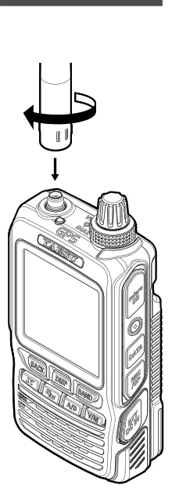</button><figcaption>Figure from page 20</figcaption><dialog id="fig-4"><p>Figure from page 20</p><form method="dialog"><button>Close</button></form></dialog></figure><figure><button aria-label="Enlarge Figure from page 20" class="zoom" data-dialog="fig-5" type="button">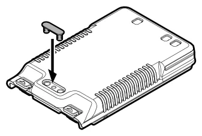</button><figcaption>Figure from page 20</figcaption><dialog id="fig-5"><p>Figure from page 20</p><form method="dialog"><button>Close</button></form></dialog></figure><figure><button aria-label="Enlarge Figure from page 20" class="zoom" data-dialog="fig-6" type="button">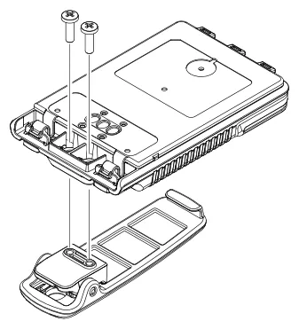</button><figcaption>Figure from page 20</figcaption><dialog id="fig-6"><p>Figure from page 20</p><form method="dialog"><button>Close</button></form></dialog></figure><p>~~<strong>Attaching a Hand Strap</strong>~~</p>
<p>If you attach a hand strap to the transceiver, insert its 1 mm diameter string through the
strap hole of the transceiver and thread the strap through the loop to secure it to the
transceiver.</p>
<ul>
<li>The hand strap is not supplied.
<strong>1</strong> Remove the battery pack.
<strong>2</strong> Attach the hand strap.</li>
</ul>
<p>~~<strong>Caution</strong>~~</p>
<p>Use a hand strap which can withstand the weight of the
transceiver. If you use a hand strap which is not strong enough,
the hand strap can break and the transceiver may fall down,
causing injury, breakage and other troubles.</p><p>~~<strong>Installing/Removing the Battery Pack</strong>~~</p>
<p><strong>Installing the Battery Pack</strong>
<strong>1</strong> Insert the bottom tabs of the battery pack in the slots
on the back side lower part of the transceiver.
<strong>2</strong> Push the battery in until the battery latches click
securely.</p>
<p>~~<strong>Caution</strong>~~</p>
<p>Charge the battery pack before using the transceiver for the first
time after purchase, or when it has not been used for a long
period time.</p>
<p>~~<strong>Caution</strong>~~</p>
<p>Risk of explosion if battery is replaced by an incorrect typ.
Dispose of used batteries according to the instructions.</p>
<p><strong>Removing the Battery Pack</strong>
<strong>1</strong> While pressing down the latches, remove the battery
pack.
Press the latches down in the direction of the arrows
as shown in the illustration.</p>
<p>~~<strong>Caution</strong>~~</p>
<p>When releasing the battery latches, be careful not to hurt your
fingers and nails.</p>
<p>~~<strong>Charging the Battery Pack</strong>~~</p>
<p>Battery latches</p>
<p>Press down on the latches
in the direction of the arrow.</p>
<p>~~<strong>Cautions</strong>~~</p>
<p>yy The battery pack is rechargeable about 300 times. However, improper use such as overcharge or</p>
<p>over-discharge can shorten its service life.
yy The battery pack is a consumable item. Recharging the battery pack repeatedly will gradually reduce</p>
<p>the charge capacity and duration of its use.
yy If the transceiver is not used for a long period of time with the battery pack installed, deterioration of</p>
<p>the battery pack can accelerate.
yy If the transceiver is unused for a long period of time, be sure to store it with the battery pack removed.</p>
<p>When the transceiver and battery are stored for an extended period, install the battery pack biannually
and recharge the battery pack about 50% to prevent it from over-discharging.
yy Storing the battery pack in a high-temperature environment can accelerate deterioration. Store the</p>
<p>battery pack in a place where the ambient temperature is −20 °C to +50 °C (−4 °F to +122 °F).
yy Be careful not to drop or strongly impact the battery pack. It can break.</p><figure><button aria-label="Enlarge Figure from page 22" class="zoom" data-dialog="fig-7" type="button">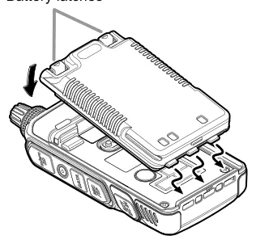</button><figcaption>Figure from page 22</figcaption><dialog id="fig-7"><p>Figure from page 22</p><form method="dialog"><button>Close</button></form></dialog></figure><p>~~<strong>Tips</strong>~~</p>
<ul>
<li>
<p>The battery pack contains lithium-ion batteries that can be recharged for repeated use.</p>
</li>
<li>
<p>The transceiver can be used with either of the following battery packs:
(1) Supplied battery pack: SBR-14LI (7.2 V, 2,200 mAh)
(2) Optional battery pack: FNB-101LI (7.4 V, 1,100 mAh)</p>
</li>
<li>
<p>When the battery pack is recharged, its output voltage becomes higher (about 8 V) than the
specified value (7.2 V). This is not a malfunction.</p>
</li>
</ul>
<p>Rapid Charger Cradle CD-41</p>
<p>(optional)</p>
<p><strong>1</strong> Install the battery pack.
<strong>2</strong> Turn the transceiver off.
<strong>3</strong> Insert the plug of the battery charger (PA-48 or SAD14B) into the EXT DC IN jack of the transceiver.
Charging starts.
On the top part of the transceiver, the TX/BUSY LED
lights red, and the display indicates “NOW CHARGING”.
The charge level is indicated by a bar graph.
It takes about 9 hours to charge the SBR-14LI battery
pack fully.
When charging is completed, the display will change to
indicate “COMPLETE” and the lamp will light green.</p><p>~~<strong>Supplements</strong>~~   - It takes about 5 hours to charge the FNB-101LI (optional).</p>
<pre><code>      - The optional Rapid Charger Cradle (CD-41) requires about 5 hours to charge the
</code></pre>
<p>supplied battery pack (about 2.5 hours to charge the optional battery pack FNB101LI).</p>
<p>Place the battery pack on the CD-41 so that the rails of the CD-41 fit into the</p>
<p>grooves on the battery pack.</p>
<p>When charging the battery pack using the CD-41, the LED on the CD-41 indicates</p>
<p>the state of charging.
During charging: Glows red → Blinks fast → Blinks slowly
Completion of charging: Lights green
<strong>4</strong> Remove the plug of the battery charger from the jack of the transceiver.</p>
<p>~~<strong>Cautions</strong>~~</p>
<p>yy The supplied PA-48 or SAD-14B battery charger is not adequate to operate the transmit and receive</p>
<p>while charging the battery pack.
yy Charging may cause noise in a nearby TV or radio.
Charge the battery pack with the battery charger as far away as possible from a TV or radio.</p>
<p>yy If “BATTERY NOT INSTALLED” appears on the LCD and the battery pack is not charged after a lapse</p>
<p>of 11 or more hours, stop charging the battery pack immediately.
If the same message appears again, the battery pack is presumed to be at the end of its service life,
or defective. In this case, replace the battery pack with a new one.
yy While charging the battery pack, protect the transceiver from water.</p>
<p>yy Charge the battery pack in a place where the ambient temperature is +5 °C to +35 °C (+41 °F to +95</p>
<p>°F).
yy If the terminal or electrode of the battery case is dirty, this transceiver can malfunction due to poor</p>
<p>contact, resulting in overheating or rupture. If the terminal or electrode gets dirty, clean it using a dry
cloth or cotton swab.</p>
<p><strong>Approximate Operating Time and Remaining Charge Level Indication</strong></p>
<p>Approximate operating time for the transceiver with the fully charged battery pack or
new AA alkaline batteries is as follows:</p>
<p>|Band in
Digital:|Use
OFF|Battery pack
SBR-14LI|Battery pack
FNB-101LI|Battery
FBA-39|
|---|---|---|---|---|
|Amateur Band|144 MHz band
430 MHz band|Approx. 12.0 hours
Approx. 11.0 hours|Approx. 6.0 hours
Approx. 5.5 hours|Approx. 14 hours
Approx. 13 hours|
|AM Broadcast Band||Approx. 25.0 hours|Approx. 13.0 hours|Approx. 16 hours|
|FM Broadcast Band||Approx. 25.0 hours|Approx. 13.0 hours|Approx. 16 hours|
||||||
|<strong>Band in</strong>
<strong>Digital:</strong>|**  Use**
** ON<strong>|</strong>Battery pack**
<strong>SBR-14LI</strong>|<strong>Battery pack</strong>
<strong>FNB-101LI</strong>|<strong>Battery</strong>
<strong>FBA-39</strong>|
|Amateur Band|144 MHz band
430 MHz band|Approx. 10 hours
Approx 9 hours|Approx. 5.0 hours
Approx 4 5 hours|Approx. 12.0 hours
Approx 11 0 hours|</p><p>~~<strong>Remark</strong>~~ Approximate hours are estimated assuming that the transceiver is operated under the</p>
<p>following conditions. The operation time that this transceiver can be actually used varies
depending on use conditions, ambient temperature, etc.</p>
<pre><code>    - When the GPS function is deactivated.

   - LAMP MODE SAVE ON (always LAMP OFF)

    - When the transceiver is repeatedly operated by high-power transmission for 6 seconds
</code></pre>
<p>and reception for 6 seconds, and standby for 48 seconds with an amateur ham radio
band selected.</p>
<p>~~<strong>How to Use the Battery Case (FBA-39)</strong>~~</p>
<p>The optional battery case (FBA-39) allows 3 AA Alkaline batteries to be used to power
the FT2DR/DE transceiver.</p>
<p>~~<strong>Tip</strong>~~</p>
<p>When the battery case (FBA-39) is used, the power output level may be selected from:
Low Power (L1): 0.1 W
Low Power (L2): Approximately 0.8 W
Note that Low Power (L3) and High Power are not available.</p>
<p><strong>1</strong> Open the cover.
Lift up the lower right corner of the cover as indicated by the
hand pointer in the illustration.
<strong>2</strong> Place the alkaline batteries in the battery case.</p>
<p>~~<strong>Caution</strong>~~ Use 3 alkaline batteries. Pay attention to polarities (+ and −)</p>
<p>of the alkaline batteries.
<strong>3</strong> Close the cover.
Push the four corners of the cover firmly to close it tightly.</p>
<p>~~<strong>Cautions</strong>~~</p>
<p>yy Lithium/Manganese batteries cannot be used with the FBA-39 battery</p>
<p>case. Rechargeable AA batteries cannot be used, either.
yy Do not mix new and old batteries. The service life of new batteries may</p>
<p>decrease.
yy If you do not use the transceiver for a long period, remove the batteries</p>
<p>from the battery case.
yy If the terminal or electrode of the battery case is dirty, the transceiver can</p>
<p>malfunction due to poor contact, resulting in overheating or explosion.
If the terminal or electrode gets dirty, clean it using a dry cloth or cotton
swab.</p><p>~~<strong>Connecting an External Power Supply for Use in Vehicle</strong>~~
~~<strong>(USA/EXP version only)</strong>~~</p>
<p>The optional external power supply adapter
with a cigarette lighter plug (SDD-13) allows
the transceiver to be used in a vehicle.
<strong>1</strong> Turn off the transceiver.
<strong>2</strong> Insert the plug of the external power
supply adapter with a cigarette lighter plug
(SDD-13) in the EXT DC IN jack of the
transceiver.
<strong>3</strong> Insert the cigarette lighter plug of the
external power supply adapter in the
cigarette lighter socket of the vehicle.</p>
<p>SDD-13 （ optional ）</p>
<p>~~<strong>Cautions</strong>~~</p>
<p>yy The SDD-13 is compatible with a 12 V DC cigarette lighter socket. Do not connect the SDD-13 to a</p>
<p>24 V DC cigarette lighter socket.
yy Use the transceiver at the minimum required transmit power level to prevent overheating.</p>
<p>yy Do not continue transmitting for a prolonged period of time. The transceiver may overheat, resulting</p>
<p>in malfunction or burns.
yy To operate the transceiver for 7 hours or longer, it is recommended that the battery pack be replaced</p>
<p>with the optional battery case (FBA-39).
yy Recharging the fully-charged battery pack repeatedly can shorten its service life. Be extremely careful</p>
<p>not to continually recharge the battery when operating the transceiver using an external power supply.
yy While charging the battery pack, protect the transceiver from water.</p>
<p>yy Charge the battery pack in a place where the ambient temperature is +5 °C to +35 °C (+41 °F to +95</p>
<p>°F).
yy If the terminal or electrode of the battery pack is dirty, the transceiver can malfunction due to poor</p>
<p>contact, resulting in overheating or rupture. If the terminal or electrode gets dirty, clean it using a dry
cloth or cotton swab.</p>
<p>~~<strong>Tips</strong>~~</p>
<ul>
<li>
<p>The SBR-14LI battery pack can be charged in approximately 9.0 hours using the external power
supply (approximately 5 hours to charge the optional battery pack FNB-101LI). If the transceiver is
turned on while the battery pack is charging, the charging time will increase slightly.</p>
</li>
<li>
<p>Charging stops automatically when the battery pack has been fully charged.</p>
</li>
<li>
<p>The external power supply can be used with the battery case installed.</p>
</li>
<li>
<p>If the transceiver is connected to the external power supply with the transceiver turned off,
“CONNECTED TO EXTERNAL POWER” appears on the LCD for about 20 seconds later “BATTERY
NOT INSTALLED” appears.</p>
</li>
</ul><p>~~<strong>Connecting to an External Power Supply Using a Power Cable</strong>~~
~~<strong>(USA/EXP version only)</strong>~~</p>
<p>The optional power cable (E-DC-6) allows the transceiver to be connected to an external
power supply.
<strong>1</strong> Turn off the transceiver.</p>
<p>~~<strong>Remarks</strong>~~   - Connect the red/black wire or white/red</p>
<p>wire to the positive (+) terminal of the
external power supply and the black wire
to the negative (−) terminal.</p>
<pre><code>     - Set the voltage of the external power
</code></pre>
<p>supply at 12 to 14 V.
<strong>3</strong> Insert the plug of the external power supply
into the EXT DC IN jack of the transceiver.</p>
<p>(optional)</p>
<p>~~<strong>Cautions</strong>~~</p>
<p>yy When using the transceiver with the external power supply cable (E-DC-6) connected to an external</p>
<p>power supply, pay attention to the following:</p>
<ul>
<li>
<p>The power supply voltage must be between 12 V and 14 V.
If the voltage exceeds 16 V, malfunctions and damage to the electric circuits of the transceiver may
result. Take extra care.</p>
</li>
<li>
<p>Connect the red/black wire or white/black wire of the external power supply cable (E-DC-6) to the
positive (+) terminal of the external power supply and the black wire to the negative (−) terminal.</p>
</li>
<li>
<p>Use an external power supply having sufficient current capacity (3 A or more).</p>
</li>
<li>
<p>If the transceiver is used with the supplied antenna connected, the transmit RF may interfere with
the external power supply, resulting in malfunction or failure. When using an external power supply,
remove the supplied antenna and connect an external antenna. Place the external power supply
sufficiently away from the transceiver to avoid RF interference.
yy Use the transceiver at the minimum required transmission power level to prevent overheating.</p>
</li>
</ul>
<p>yy Do not continue transmitting for a prolonged period. The transceiver may overheat, resulting in</p>
<p>malfunction or a burn injury.
yy To operate the transceiver for 7 hours or longer, it is recommended that the battery pack be replaced</p>
<p>with the optional battery case (FBA-39).
yy Recharging the fully-charged battery pack repeatedly can shorten its service life. Be extremely careful</p>
<p>not to continually recharge the battery when operating the transceiver using an external power supply.
yy While charging the battery pack, protect the transceiver from water.</p>
<p>yy Charge the battery pack in a place where the ambient temperature is +5 °C to +35 °C (+41 °F to +95</p>
<p>°F).
yy If the terminals or electrodes of the battery pack are dirty, the transceiver may malfunction due to poor</p>
<p>contact, resulting in overheating or rupture. If the terminals or electrodes get dirty, clean them using
a dry cloth or cotton swab.</p><p>~~<strong>Tips</strong>~~</p>
<ul>
<li>
<p>The SBR-14LI battery pack can be charged in approximately 9.0 hours using the external power
supply (approximately 5 hours to charge the optional battery pack FNB-101LI). If the transceiver is
turned on while the battery pack is charging, the charging time will increase slightly.</p>
</li>
<li>
<p>If the transceiver is connected to the external power supply with the transceiver turned off,
“CONNECTED TO EXTERNAL POWER” appears on the LCD for about 20 seconds, and then
“BATTERY NOT INSTALLED” appears.</p>
</li>
</ul><p>Using a microSD memory card with the transceiver allows the following functions.</p>
<ul>
<li>
<p>Backing up the transceiver data and information</p>
</li>
<li>
<p>Saving memory information</p>
</li>
<li>
<p>Saving data other than images</p>
</li>
<li>
<p>Saving GPS log data</p>
</li>
<li>
<p>Saving image data captured with the optional camera-equipped microphone (MH85A11U)</p>
</li>
<li>
<p>Saving messages downloaded with the GM function or WIRES-X function</p>
</li>
</ul>
<p>~~<strong>Usable microSD Memory Cards</strong>~~</p>
<p>This transceiver only supports the following capacity of microSD and microSDHD
memory cards.</p>
<ul>
<li>2GB • 4GB • 8GB • 16GB • 32GB</li>
</ul>
<p>~~<strong>Cautions when Using a microSD Memory Card</strong>~~</p>
<ul>
<li>
<p>Do not bend or place heavy objects on the microSD memory card.</p>
</li>
<li>
<p>microSD memory cards formatted on other devices may not properly save information
when used with this transceiver. Format microSD memory cards again with this</p>
</li>
</ul><p><strong>2</strong> Open the microSD cover on the side of the
transceiver.</p>
<p><strong>3</strong> Insert the microSD memory card into the card slot
until you hear a clicking sound (as shown in the
figure at the right).</p>
<p>~~<strong>Cautions</strong>~~  Ensure that the microSD memory card is facing</p>
<p>the proper direction when inserting it.</p>
<p> Do not touch the terminal of the microSD memory</p>
<p>card.</p>
<p><strong>4</strong> Close the microSD cover.
<strong>5</strong> Press and hold for over one second.
The transceiver will turn on. When the microSD</p>
<p>display.</p>
<p>~~<strong>Tip</strong>~~</p>
<p><strong>Removing the microSD memory card</strong>
To remove the microSD memory card, as done in step 3 above,
push the memory card in until you hear a clicking sound, then
remove the memory card.</p>
<p>~~<strong>Caution</strong>~~</p>
<p>Do not turn off the transceiver while the data is being written to
the microSD memory card. Doing so may corrupt the data.</p><figure><button aria-label="Enlarge Figure from page 30. Using a microSD Memory Card the proper direction when inserting it." class="zoom" data-dialog="fig-8" type="button">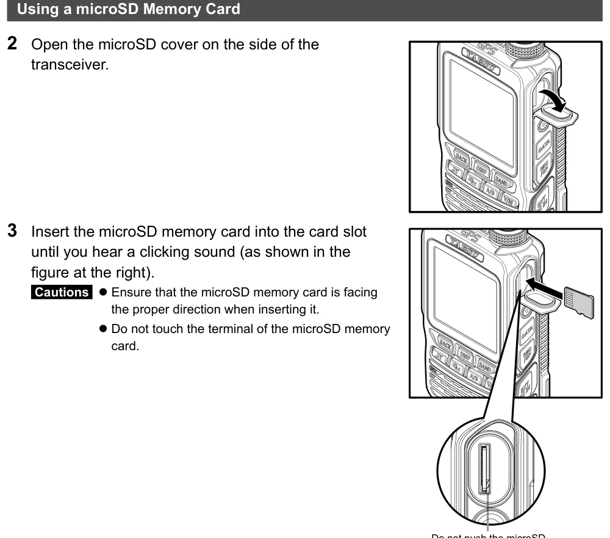</button><figcaption>Figure from page 30. Using a microSD Memory Card the proper direction when inserting it.</figcaption><dialog id="fig-8"><p>Figure from page 30. Using a microSD Memory Card the proper direction when inserting it.</p><form method="dialog"><button>Close</button></form></dialog></figure><p>~~<strong>Formatting a microSD Memory Card</strong>~~</p>
<p>Format a new microSD memory card following the steps below before use.</p>
<p><strong>2</strong> Touch <strong>[SD CARD]</strong> .</p>
<p><strong>3</strong> Touch <strong>[4 FORMAT]</strong> .</p>
<p>[FORMAT?] appears on the LCD.</p>
<p><strong>4</strong> Touch <strong>[OK]</strong> .</p>
<p>~~<strong>Tip</strong>~~ To cancel formatting, select [Cancel].
Initialization starts and “Waiting” appears.
When formatting is completed, a beep sounds and [COMPLETED] appears on the
LCD.</p><figure><button aria-label="Enlarge Figure from page 31" class="zoom" data-dialog="fig-9" type="button">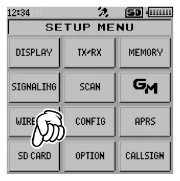</button><figcaption>Figure from page 31</figcaption><dialog id="fig-9"><p>Figure from page 31</p><form method="dialog"><button>Close</button></form></dialog></figure><p>To communicate using the transceiver in the analog communication mode, follow the
procedure below:</p>
<p>When the transceiver is turned on for the first time
after purchase, the call sign input message appears</p>
<p>call sign input screen. When the transceiver is turned
on the second time, and subsequently, the opening
screen appears followed by the frequency screen.</p><figure><button aria-label="Enlarge Figure from page 32. Turn on the transceiver Adjust the Volume Level" class="zoom" data-dialog="fig-10" type="button">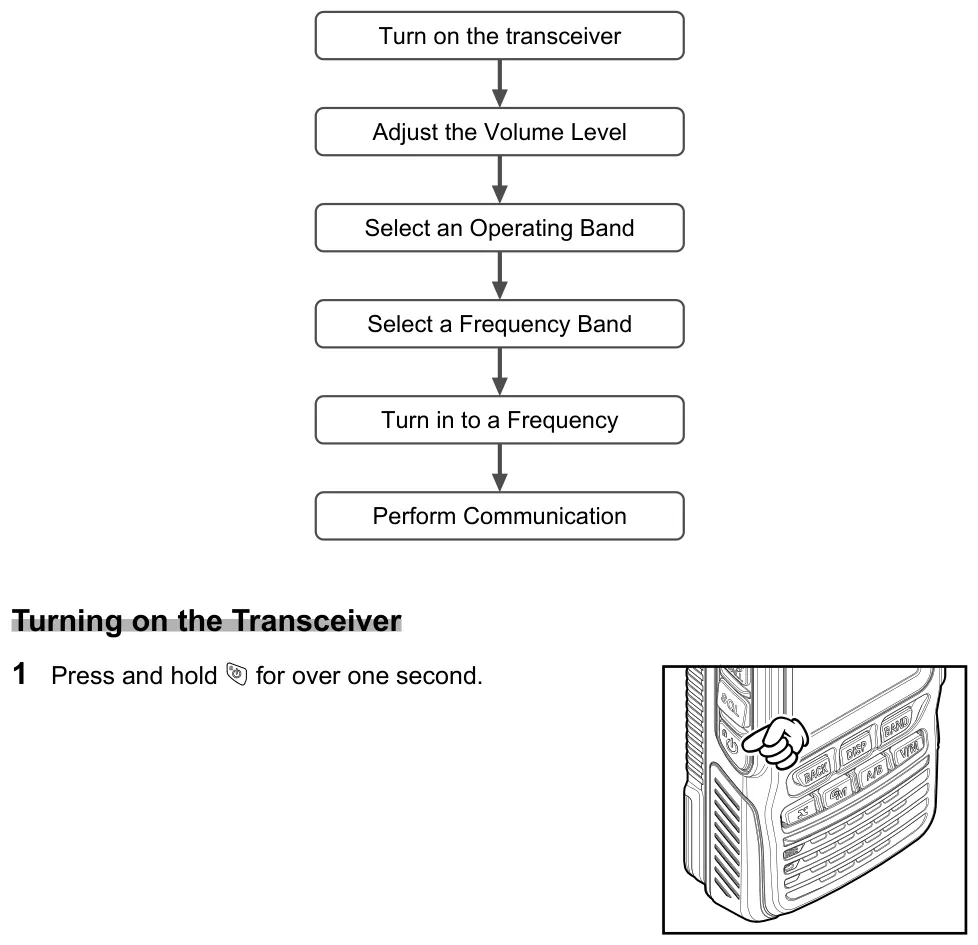</button><figcaption>Figure from page 32. Turn on the transceiver Adjust the Volume Level</figcaption><dialog id="fig-10"><p>Figure from page 32. Turn on the transceiver Adjust the Volume Level</p><form method="dialog"><button>Close</button></form></dialog></figure><figure><button aria-label="Enlarge Figure from page 32" class="zoom" data-dialog="fig-11" type="button">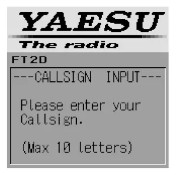</button><figcaption>Figure from page 32</figcaption><dialog id="fig-11"><p>Figure from page 32</p><form method="dialog"><button>Close</button></form></dialog></figure><p><strong>2</strong> Input the call sign (toggle the alphabet input screen,
and the number input screen when necessary).</p>
<p>~~<strong>Supplement</strong>~~ The alphabet input screen can be switched to the</p>
<p>number input screen by touching <strong>[123]</strong> .</p>
<p>The number input screen can be switched to the
alphabet input screen by touching <strong>[ABC]</strong> .</p>
<p><strong>3</strong> Press .
The call sign is set and the frequencies of both A-band
and B-band are displayed simultaneously.</p>
<p>~~<strong>Supplement</strong>~~ Factory settings are:
A-band (upper): 144.000 MHz
B-band (lower): 430.000 MHz</p>
<p>~~<strong>Tip</strong>~~ You can change the information such as the power supply</p>
<p>voltage and the opening message displayed at power
second to enter Set mode and then select <strong>[DISPLAY]</strong> →</p>
<p><strong>[8 OPENING MESSAGE]</strong> to change the setting.</p>
<p>In addition, you can also set the transceiver to display</p>
<p>the receive frequency immediately without displaying the
opening message ( see page 130).</p>
<p>y <strong>y</strong> <strong>Turning off the Transceiver</strong>
To turn the transceiver OFF, press and hold for over
one second.</p><figure><button aria-label="Enlarge Figure from page 33" class="zoom" data-dialog="fig-12" type="button">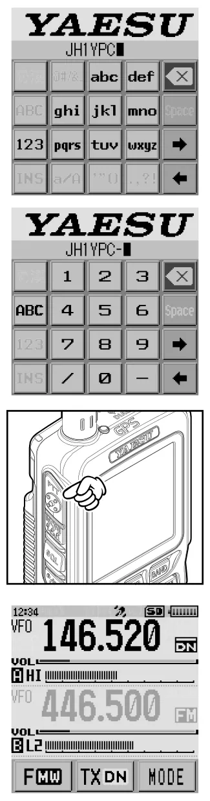</button><figcaption>Figure from page 33</figcaption><dialog id="fig-12"><p>Figure from page 33</p><form method="dialog"><button>Close</button></form></dialog></figure><p>~~<strong>Adjusting the Volume Level</strong>~~</p>
<p>The transceiver volume levels for the A-band and B-band are adjusted separately.</p>
<p>level is to be adjusted.</p>
<p>A-band and B-band.</p>
<p><strong>2</strong> Rotate the VOL knob clockwise/counterclockwise to
adjust the volume level.
The [VOL] gauge moves right/left.</p>
<p>~~<strong>Supplement</strong>~~ If no sound is heard from the speaker, press
and then adjust the volume level while listening to
white noise.</p>
<p>~~<strong>Toggling the Operating Band</strong>~~</p>
<p>Normally, both operating bands are displayed on the top
half and bottom half of the transceiver touch screen. This
is Dual band.
With one of the bands selected, change the frequency
and radio operating mode. The selected band (displayed
in black letters) is called Operating band. The other band
(displayed in gray letters) is called Sub-band.</p>
<p>The desired operating band may also be selected by
touching the frequency display.</p>
<p>Mono-band.
F d t il h t t l th di l b t hi th LCD th f ll i ill t ti</p><p>B-band</p>
<p>A-band</p>
<p>A-band</p>
<p>band)</p>
<p>Touching the Name, Date
and Voltage display
switches the screen to the
tag display “ YAESU
MUSEN CLUB ”.</p>
<p>A-band</p>
<p>B-band</p>
<p>band)</p>
<p>B-band</p><figure><button aria-label="Enlarge Figure from page 35. A-band (operating Press" class="zoom" data-dialog="fig-13" type="button">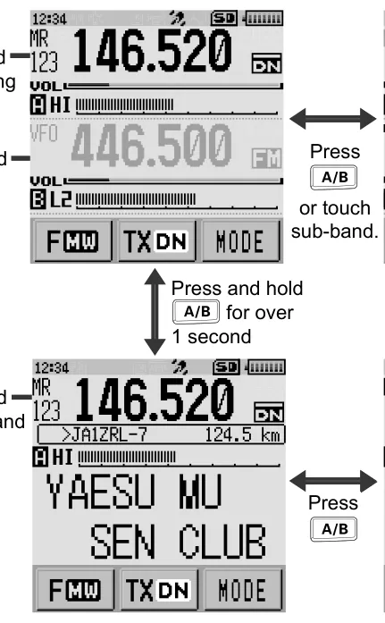</button><figcaption>Figure from page 35. A-band (operating Press</figcaption><dialog id="fig-13"><p>Figure from page 35. A-band (operating Press</p><form method="dialog"><button>Close</button></form></dialog></figure><figure><button aria-label="Enlarge Figure from page 35. B-band (operating Press and hold for over 1 second" class="zoom" data-dialog="fig-14" type="button">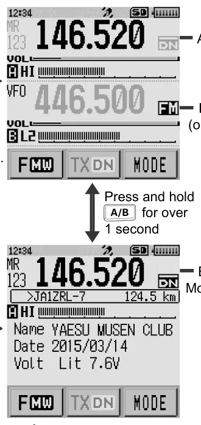</button><figcaption>Figure from page 35. B-band (operating Press and hold for over 1 second</figcaption><dialog id="fig-14"><p>Figure from page 35. B-band (operating Press and hold for over 1 second</p><form method="dialog"><button>Close</button></form></dialog></figure><figure><button aria-label="Enlarge Figure from page 36. Tips Chart of A-band and B-band" class="zoom" data-dialog="fig-15" type="button">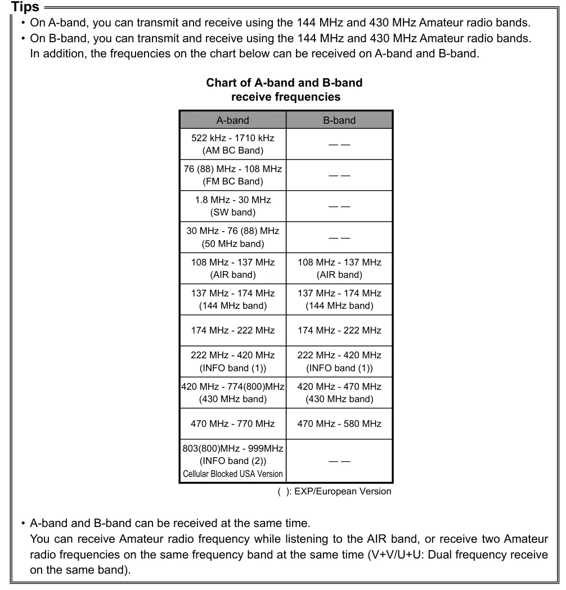</button><figcaption>Figure from page 36. Tips Chart of A-band and B-band</figcaption><dialog id="fig-15"><p>Figure from page 36. Tips Chart of A-band and B-band</p><form method="dialog"><button>Close</button></form></dialog></figure><p>~~<strong>Selecting a Frequency Band</strong>~~</p>
<p>band can be selected by following the steps below.</p>
<p>frequency bands in reverse order.</p>
<p>Available frequency bands differ depending on the band. The following frequency bands
can be used for A-band and B-band.</p>
<p>y <strong>y</strong> <strong>Frequency bands on A-band</strong></p>
<p>y <strong>y</strong> <strong>Frequency bands on B-band</strong></p>
<p>( ): EXP/European Version</p><p><strong>3</strong> Enter the frequency using the numeric keys.
Example: To input 145.520 MHz</p>
<p><strong>[1]</strong> → <strong>[4]</strong> → <strong>[5]</strong> → <strong>[5]</strong> → <strong>[2]</strong>
Example: To input 430.000 MHz</p>
<p><strong>[4]</strong> → <strong>[3]</strong> → <strong>[ENT]</strong></p>
<p>~~<strong>Selecting the Communication Mode</strong>~~</p>
<p>y <strong>y</strong> <strong>Using AMS</strong>
This transceiver is equipped with AMS (Automatic Mode Select) which automatically
selects between 4 modes of transmission to correspond to the signal being received.
Because the transmitter is automatically adjusted to that of the other station, C4FM digital
signals and analog signals are both recognized automatically.</p>
<p>*The display differs depending on the received signal.</p>
<p>Example of when
AMS is displayed</p><p>y <strong>y</strong> <strong>Fixing the Communication Mode</strong>
To fix the transmission mode for operation, touch <strong>[MODE]</strong> to switch the communication
mode.
Touching <strong>[MODE]</strong> each time toggles the communication mode as follows.</p>
<table>
<thead>
<tr>
<th>Operation mode</th>
<th>Icon</th>
<th>Description of Modes</th>
</tr>
</thead>
<tbody>
<tr>
<td>AMS</td>
<td></td>
<td></td>
</tr>
<tr>
<td>(Automatic Mode Select)</td>
<td></td>
<td>The transmit mode is automatically selected from the 4 types,</td>
</tr>
<tr>
<td>corresponding to the received signal.</td>
<td></td>
<td></td>
</tr>
<tr>
<td>(The “DN” part of the icon differs depending on the type of the</td>
<td></td>
<td></td>
</tr>
<tr>
<td>received signal.)</td>
<td></td>
<td></td>
</tr>
<tr>
<td>By touching [TX DN], you can change the AMS function operation.</td>
<td></td>
<td></td>
</tr>
<tr>
<td>TX M: Automatically selects one of the 4 communication modes</td>
<td></td>
<td></td>
</tr>
<tr>
<td>according to the received signal. Briefly pressing PTT on</td>
<td></td>
<td></td>
</tr>
<tr>
<td>the microphone switches between digital mode and analog</td>
<td></td>
<td></td>
</tr>
<tr>
<td>mode.</td>
<td></td>
<td></td>
</tr>
<tr>
<td>TX FM:  Automatically selects one of the 4 communication modes</td>
<td></td>
<td></td>
</tr>
<tr>
<td>according to the received signal. Always switches to FM</td>
<td></td>
<td></td>
</tr>
<tr>
<td>mode for transmission.</td>
<td></td>
<td></td>
</tr>
<tr>
<td>TX DN:  Automatically selects one of the 4 communication modes</td>
<td></td>
<td></td>
</tr>
<tr>
<td>according to the received signal. Always switches to DN</td>
<td></td>
<td></td>
</tr>
<tr>
<td>mode for transmission.</td>
<td></td>
<td></td>
</tr>
<tr>
<td>TX VW:  Automatically selects one of the 4 communication modes</td>
<td></td>
<td></td>
</tr>
<tr>
<td>according to the received signal. Always switches to VW</td>
<td></td>
<td></td>
</tr>
<tr>
<td>mode for transmission.</td>
<td></td>
<td></td>
</tr>
<tr>
<td>AUTO: Automatically selects one of the 4 communication modes</td>
<td></td>
<td></td>
</tr>
<tr>
<td>according to the received signal.</td>
<td></td>
<td></td>
</tr>
<tr>
<td>V/D Mode</td>
<td></td>
<td></td>
</tr>
<tr>
<td>(Voice/Data simultaneous</td>
<td></td>
<td></td>
</tr>
<tr>
<td>transmission mode)</td>
<td>DN</td>
<td>Calls are less prone to interruptions due to detection and correction</td>
</tr>
<tr>
<td>of voice signals during digital voice signal transmission. This is the</td>
<td></td>
<td></td>
</tr>
<tr>
<td>standard mode for C4FM FDMA Digital.</td>
<td></td>
<td></td>
</tr>
<tr>
<td>Voice FR Mode</td>
<td></td>
<td></td>
</tr>
<tr>
<td>(Voice Full Rate Mode)</td>
<td>VW</td>
<td>High speed data communication using entire 12.5 kHz band.</td>
</tr>
<tr>
<td>Enables high-quality voice communication.</td>
<td></td>
<td></td>
</tr>
<tr>
<td>Data FR Mode (High Speed</td>
<td></td>
<td></td>
</tr>
<tr>
<td>Data Communication Mode)</td>
<td>DW</td>
<td>Digital voice data transmission using the entire 12.5 kHz band.</td>
</tr>
<tr>
<td>The transceiver automatically switches to this mode during image</td>
<td></td>
<td></td>
</tr>
<tr>
<td>transmission.</td>
<td></td>
<td></td>
</tr>
<tr>
<td>Analog FM Mode</td>
<td>FM</td>
<td>Analog communication using FM mode.</td>
</tr>
<tr>
<td>Effective when the signal is weak and audio is susceptible to</td>
<td></td>
<td></td>
</tr>
<tr>
<td>interruption in digital mode.</td>
<td></td>
<td></td>
</tr>
</tbody>
</table>
<p>~~<strong>Caution</strong>~~</p>
<p>In V/D mode (“DN” on the LCD), position information is included in the radio wave during voice
communication, however, position information is not included in the Voice FR mode (“VW” on the LCD).</p>
<p>~~<strong>Transmitting/Receiving Signals</strong>~~</p>
<p><strong>1</strong> While pressing and holding, speak into the microphone.
Keep your mouth about 5 cm away from the microphone when you speak.
<strong>2</strong> Release</p><p>~~<strong>Cautions</strong>~~</p>
<p>yy Use the transceiver at the minimum required transmit power level. Doing so prevents the transceiver</p>
<p>from overheating and saves battery power, increasing the operating time.
yy Do not continue transmitting for a prolonged period. The transceiver can overheat, resulting in</p>
<p>malfunction or a burn injury.
yy If transmission is continued for a long period, the transceiver overheats and the high temperature</p>
<p>protection function is activated. As a result, the transmitting power level is automatically set to Low
Power. If you continue transmitting while the high temperature protection function is active, the
transceiver will be forcibly returned to the receive mode.
yy If you touch the transceiver immediately after the high temperature protection function has become</p>
<p>active, you may be burned. Wait for the temperature inside the transceiver to cool sufficiently before
resuming transmission.
yy Do not start transmitting without attaching the antenna. The transmitter circuit can be damaged.</p><p>~~<strong>Listening to the AM/FM Radio</strong>~~</p>
<p>AM broadcasts (middle wave band) and FM broadcasts can be easily received using
“Preset Memory Receiver” ( see page 65), where many major broadcast stations are
already saved to the transceiver memory. You can also tune in to the desired frequency by
rotating the DIAL or directly inputting the frequency from the numeric keypad input screen.</p>
<p><strong>3</strong> Rotate the DIAL or display the numeric keypad input screen to tune in to the desired
frequency ( see page 38).</p><p>~~<strong>Setting Clock Time</strong>~~</p>
<p>This transceiver is equipped with an internal clock. The clock is used to display the time,
and also to turn the transceiver on or off at a specified time (timer function). Set the clock
before using the transceiver for the first time.</p>
<p>The transceiver enters Set mode.
<strong>2</strong> Touch <strong>[CONFIG]</strong> .</p>
<p><strong>3</strong> Rotate the DIAL, then touch <strong>[19 DATE &amp; TIME ADJ]</strong> .
Cursors appear and blink at the last 2 digits of the year.</p>
<p><strong>4</strong> Rotate the DIAL to select the year, then press the
key.
The cursor jumps to the month.
<strong>5</strong> Rotate the DIAL to select the month, then press the
key.
The cursor jumps to the day.
<strong>6</strong> Rotate the DIAL to select the day, then press the
key.
The cursor jumps to the hour.
<strong>7</strong> Rotate the DIAL to select the hour, then press the
key.</p>
<p>~~<strong>Remark</strong>~~ The hour appears in the 24-hour clock format.</p>
<p>The cursor jumps to the minute.</p><figure><button aria-label="Enlarge Figure from page 43" class="zoom" data-dialog="fig-16" type="button">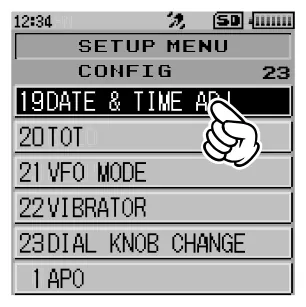</button><figcaption>Figure from page 43</figcaption><dialog id="fig-16"><p>Figure from page 43</p><form method="dialog"><button>Close</button></form></dialog></figure><p><strong>8</strong> Rotate the DIAL to select the minute, then press the
key.</p>
<p>~~<strong>Tip</strong>~~ If GPS information is received, the time will be set</p>
<p>automatically.
<strong>9</strong> To activate the time signal (alarm goes off every hour on
the hour), touch <strong>[SIGNAL ON]</strong> .
The checkbox will be checked.</p>
<p><strong>10</strong> Touch <strong>[OK]</strong> .
The transceiver exits from Set mode.</p>
<p>~~<strong>Remark</strong>~~ The current time appears on the LCD.</p>
<p>~~<strong>Muting Audio</strong>~~</p>
<p>If the A-band and B-band are heard simultaneously during dual receive, and it is difficult
to hear the voices, the audio of the non-operating band may be muted.</p>
<p>The transceiver enters Set mode.
<strong>2</strong> Touch <strong>[TX/RX]</strong> .</p><p><strong>3</strong> Touch <strong>[3 AUDIO]</strong> .</p>
<p><strong>4</strong> Touch <strong>[2 MUTE]</strong> .
<strong>5</strong> Rotate the DIAL to select the desired mute setting.
Select one of the following 4 options.</p>
<ul>
<li>
<p>OFF</p>
</li>
<li>
<p>MUTE 30%</p>
</li>
<li>
<p>MUTE 50%</p>
</li>
<li>
<p>MUTE 100%
The higher the value for MUTE, the more the non-operating band audio is reduced.
To deactivate the muting function, select OFF.
<strong>6</strong> Press .
The transceiver exits from Set mode.</p>
</li>
</ul>
<p>the LCD.</p>
<p>~~<strong>Tips</strong>~~</p>
<p>Even if the muting function is activated, the voice is not muted when no signal is received on the
operating band.</p><p>~~<strong>Changing the Transmission Power Level</strong>~~</p>
<p>The maximum transmit power level of this transceiver is 5 W. When communicating with
another station in the immediate area, or to reduce the battery power consumption, the
transmit power level may be lowered. For power supply types and transmit power levels,
see the table shown below.</p>
<p>|Battery type|HIGH
(High Power)|LOW3|LOW2|LOW1|Col6|
|---|---|---|---|---|---|
|<strong>Battery type</strong>|<strong>HIGH</strong>
<strong>(High Power)</strong>|<strong>LOW3</strong>|<strong>LOW2</strong>|<strong>USA/EXP</strong>|<strong>European</strong>|
|Battery pack|5W|2.5W|1W|0.1W|0.05W (VHF)
0.1W (UHF)|
|External power supply (DC13.8V)|External power supply (DC13.8V)|External power supply (DC13.8V)|External power supply (DC13.8V)|External power supply (DC13.8V)||
|Battery Case (alkaline battery)|||Approx. 0.8W|Approx. 0.8W|0.05W (VHF)
0.1W (UHF)|</p>
<p><strong>1</strong> Touch <strong>[F MW]</strong> .
<strong>2</strong> Touch <strong>[TXPWR]</strong> .</p>
<p><strong>3</strong> Rotate the DIAL to select one of the following transmission power levels.
“HIGH”, “LOW3”, “LOW2”, “LOW1”
<strong>4</strong> Press .
The transmit power level will be set.</p>
<p>~~<strong>Tips</strong>~~</p>
<ul>
<li>
<p>The transmitter power level may be set separately for the A-band and B-band.</p>
</li>
<li>
<p>Use the transceiver at the minimum required transmit power level to reduce battery power
consumption.</p>
</li>
<li>
<p>By default, “HIGH (High power)” is selected.</p>
</li>
</ul><figure><button aria-label="Enlarge Figure from page 46" class="zoom" data-dialog="fig-17" type="button">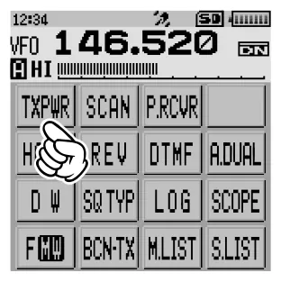</button><figcaption>Figure from page 46</figcaption><dialog id="fig-17"><p>Figure from page 46</p><form method="dialog"><button>Close</button></form></dialog></figure><p>~~<strong>Adjusting the Squelch Level</strong>~~</p>
<p>The raspy noise heard when no signal is being received may be muted (squelched). The
squelch level can be adjusted separately for two broadcasts (FM and AM) received on
the A-band and B-band.
When the squelch level is increased, the noise is more likely to be silenced, but it may
become more difficult to receive weak signals. Adjust the squelch level as required.</p>
<p><strong>3</strong> Rotate the DIAL to adjust the squelch level.</p>
<p>~~<strong>Remarks</strong>~~ - The squelch level can be adjusted within the range</p>
<p>from 0 to 15.</p>
<pre><code>    - Default: LEVEL 1.(FM radio broadcast band is LEVEL
</code></pre>
<p>2)
<strong>4</strong> Press PTT.
The squelch level will be set.</p>
<p>~~<strong>Setting the Frequency Step</strong>~~</p>
<p>You can set the frequency step to a fixed value. By default, “AUTO (Step)” is selected
so that the optimum frequency step is automatically selected according to the receiver
frequency.</p>
<p>The transceiver enters Set mode.
<strong>2</strong> Touch <strong>[CONFIG]</strong> .
<strong>3</strong> Rotate the DIAL, then touch <strong>[18 STEP]</strong> .</p><p><strong>4</strong> Rotate the DIAL to select the desired frequency step.</p>
<p>~~<strong>Remark</strong>~~ Selectable frequency steps are as follows:</p>
<ul>
<li>
<p>AUTO - 5.0KHz - 6.25KHz</p>
</li>
<li>
<p>(8.33KHz) - 10.0KHz - 12.5KHz</p>
</li>
<li>
<p>15.0KHz - 20.0KHz - 25.0KHz</p>
</li>
<li>
<p>50.0KHz - 100.0KHz</p>
</li>
</ul>
<p>It is recommended that AUTO be selected for normal operations.
Default: AUTO
<strong>5</strong> Press .
The transceiver exits from Set mode.</p>
<p>~~<strong>Tips</strong>~~</p>
<ul>
<li>
<p>For the AIR band (108 MHz to 136.991 MHz), the frequency step “8.33 kHz” can also be selected.</p>
</li>
<li>
<p>For bands covering 250 MHz to 300 MHz, and bands covering 580 MHz or higher, the frequency
steps “5 kHz”, “6.25 kHz”, and “15 kHz” cannot be selected.</p>
</li>
</ul>
<p>~~<strong>Changing the Mode</strong>~~</p>
<p>The operating mode of the selected band may be changed.
By default, “AUTO (Auto Mode)” is set so that the typical operating mode (radio wave
type) is automatically selected according to the frequency band in use.</p>
<p>The transceiver enters Set mode.
<strong>2</strong> Touch <strong>[TX/RX]</strong> .
<strong>3</strong> Touch <strong>[1 MODE]</strong> .
<strong>4</strong> Touch <strong>[3 RX MODE]</strong> .
The current setting will be displayed.</p><p><strong>5</strong> Rotate the DIAL to select the desired mode.
It is recommended that AUTO be selected for normal
operation.</p>
<table>
<thead>
<tr>
<th>Display</th>
<th>Operation</th>
</tr>
</thead>
<tbody>
<tr>
<td>AUTO</td>
<td>The optimal mode is automatically selected according</td>
</tr>
<tr>
<td>to the frequency band.</td>
<td></td>
</tr>
<tr>
<td>NFM</td>
<td>Only the selected band is switched to the NFM (FM</td>
</tr>
<tr>
<td>mode).</td>
<td></td>
</tr>
<tr>
<td>AM</td>
<td>Only the selected band is switched to the AM mode.</td>
</tr>
</tbody>
</table>
<p><strong>6</strong> Press .
Set mode will be canceled.</p>
<p>~~<strong>Tip</strong>~~</p>
<p>Even if AM mode is selected on a ham radio band, 144 MHz band or 430 MHz band, transmission will
continue to be in the FM mode.</p>
<p>~~<strong>Caution</strong>~~</p>
<p>The mode of the A-band AM/FM broadcast radio bands cannot be changed.</p>
<p>~~<strong>Locking Keys and Switches</strong>~~</p>
<p>To prevent accidental frequency change during operation, the keys, switches and DIAL</p>
<p><strong>1</strong> Press .</p>
<p><strong>[LOCK]</strong> is displayed for 1 second on the LCD.</p>
<p>the LCD.</p>
<p>~~<strong>Remark</strong>~~ To unlock a key or switch, press again.</p>
<p><strong>[UNLOCK]</strong> is displayed on the LCD for 1 second.</p><p>~~<strong>Attenuator (ATT) Function (except AM broadcasts and AM broadcasts)</strong>~~</p>
<p>If the remote station signal is too strong or there is a strong signal nearby disturbing you
from hearing the remote station signal, switch the attenuator to ON. When there is no
reception problem, there is no need to switch the attenuator ON.</p>
<p>The transceiver enters Set mode.
<strong>2</strong> Touch <strong>[TX/RX]</strong> .</p>
<p><strong>3</strong> Touch <strong>[1 MODE]</strong> .</p>
<p><strong>4</strong> Touch <strong>[1 ANTENNA ATT]</strong> .
The current setting is displayed.</p>
<p><strong>5</strong> Rotate the DIAL to select <strong>[ON]</strong> .
<strong>6</strong> Press .
The transceiver exits from Set mode.</p><figure><button aria-label="Enlarge Figure from page 50" class="zoom" data-dialog="fig-18" type="button">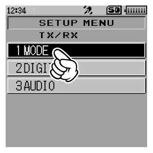</button><figcaption>Figure from page 50</figcaption><dialog id="fig-18"><p>Figure from page 50</p><form method="dialog"><button>Close</button></form></dialog></figure><figure><button aria-label="Enlarge Figure from page 50" class="zoom" data-dialog="fig-19" type="button">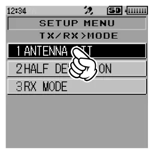</button><figcaption>Figure from page 50</figcaption><dialog id="fig-19"><p>Figure from page 50</p><form method="dialog"><button>Close</button></form></dialog></figure><figure><button aria-label="Enlarge Figure from page 50" class="zoom" data-dialog="fig-20" type="button">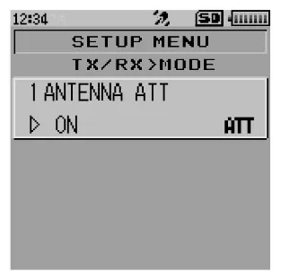</button><figcaption>Figure from page 50</figcaption><dialog id="fig-20"><p>Figure from page 50</p><form method="dialog"><button>Close</button></form></dialog></figure><p>~~<strong>Restoring to Defaults (All Reset)</strong>~~</p>
<p>The transceiver turns on and you hear the beep.
<strong>3</strong> When the beep sounds, release the key.
“ALL RESET?” appears on the LCD.</p>
<p><strong>4</strong> Touch <strong>[OK]</strong> .</p>
<p>A beep sounds and the call sign input message appears
on the LCD.</p>
<p>~~<strong>Remark</strong>~~ To cancel resetting, touch <strong>[CANCEL]</strong> .</p>
<p>The call sign input screen appears.
<strong>6</strong> Input your call sign.
Switch the display between the alphabet keys and number
keys to input the call sign.
<strong>7</strong> Press .
The call sign is set and the frequency screen appears.</p>
<p>~~<strong>Caution</strong>~~</p>
<p>When the All Reset function is performed, all data registered in the memory will be deleted. Be sure to
note the settings on paper or back up the data on a microSD memory card. For details on how to save
backup onto a microSD memory card, see “Set Mode: SD CARD Menu Operations” on page 154.</p><figure><button aria-label="Enlarge Figure from page 51" class="zoom" data-dialog="fig-21" type="button"></button><figcaption>Figure from page 51</figcaption><dialog id="fig-21"><p>Figure from page 51</p><form method="dialog"><button>Close</button></form></dialog></figure><p>~~<strong>Communicating Via the Repeater</strong>~~</p>
<p>Shift) function which enables repeater operation
automatically when setting the receiver to the
repeater frequency.</p>
<p><strong>1</strong> Set the receiver frequency to the repeater
frequency.</p>
<p>whereas “TN” and the tone frequency appear on the
right side of the frequency.
<strong>2</strong> Begin transmitting by pressing and holding . The
transmitter will automatically be set to the programmed
offset frequency and CTCSS tone.</p><figure><button aria-label="Enlarge Figure from page 52" class="zoom" data-dialog="fig-22" type="button"></button><figcaption>Figure from page 52</figcaption><dialog id="fig-22"><p>Figure from page 52</p><form method="dialog"><button>Close</button></form></dialog></figure><p>The FT2DR/DE has been configured, at the factory, for the repeater shifts customary in
the country where it is sold. For the 144 MHz band, this usually will be 600 kHz, while the
430 MHz shift will be 1.6 MHz, 7.6 MHz, or 5 MHz (USA version).
Depending on the part of the band in which you are operating, the repeater shift may be
either downward (−) or upward (+), and one of these icons will appear to the right of the
display frequency on the LCD when repeater shifts have been enabled.</p>
<p>~~<strong>Automatic Repeater Shift (ARS)</strong>~~</p>
<p>The FT2DR/DE Automatic Repeater Shift feature causes the appropriate repeater shift
to be automatically applied whenever it is tuned into the designated repeater sub-bands.
If the ARS feature does not appear to be working, you may have accidentally disabled it.</p>
<p><strong>To re-enable ARS:</strong></p>
<p>The transceiver enters Set mode.
<strong>2</strong> Touch <strong>[CONFIG]</strong> .
<strong>3</strong> Rotate the DIAL, then touch <strong>[14 RPT ARS]</strong> .
<strong>4</strong> Rotate the DIAL to select [ON] (to enable Automatic Repeater Shift).
<strong>5</strong> Press .
The transceiver exits from Set mode.</p>
<p>~~<strong>Tone Calling (1750 Hz)</strong>~~</p>
<p>the European repeater. The transmitter will automatically be activated, and a 1750 Hz</p>
<p>Call” switch instead. To change the configuration of this switch, use Set Mode [CONFIG]
→ [10 MONI/T-CALL].</p><p>The FT2DR/DE transceiver incorporates the following types of memory channels in
addition to the regular memory channels (numbers 001 to 900).</p>
<p>•• [Home channels] which can be recalled on each frequency band just by touching a key
( see page 57)
•• Preset Receiver Memory Channels include the International VHF marine radio (57
channels) and Worldwide Wide Broadcasts (89 channels) ( see page 65)
•• 99 (901 to 999) skip search memory channels that allow skipping unwanted frequencies
during VFO scanning ( see page 72)
•• 50 sets of memory channels (L1/U1 to L50/U50) for programmable memory channel
scanning (PMS) ( see page 81)
The operating frequency and other operational information can be registered to each
regular memory channel, home channel, or PMS memory channel:</p>
<ul>
<li>
<p>Operating frequency - Memory tag - Repeater information</p>
</li>
<li>
<p>Tone information - DCS information - Memory channel skip information</p>
</li>
<li>
<p>Transmitter output
(The analog/digital operating mode is not registered to the memory channel)</p>
</li>
</ul>
<p>Memory channels can be sorted and registered into memory banks according to the
intended use. The transceiver allows you to use 24 types of memory banks. A maximum of
100 memory channels can be registered in each memory bank. A name can be assigned
to each memory bank with up to 16 characters. ( see page 64)</p><p>~~<strong>Registering to Memory Channel</strong>~~</p>
<p>If the specified memory channel is previously
registered, the ) lights up.</p><p><strong>4</strong> Touch <strong>[M.WRITE]</strong> .
The frequency registration will initiate.
If you attempt to register a frequency to a memory
channel on which another frequency has already
been registered, “OVERWRITE?” will appear on
the LCD.
When <strong>[OK]</strong> is selected, touch <strong>[OK]</strong> to register the
frequency to the memory channel.
Once the registration is completed, the VFO
frequency will again appear on the display.</p>
<p>~~<strong>Split Memory</strong>~~</p>
<p>Two different frequencies, one for receive and another for transmit, can be registered to
a memory channel.
<strong>1</strong> Register a receive frequency to a memory channel.</p>
<p>~~<strong>Remark</strong>~~ See “Registering to Memory Channel” above.
<strong>2</strong> Set a transmit frequency in VFO mode.
<strong>3</strong> Touch <strong>[F MW]</strong> for over one second.
<strong>4</strong> Rotate the DIAL to select the channel that the receive frequency was registered to.
<strong>5</strong> While pressing, touch <strong>[M.WRITE]</strong> .
When the memory channel to which two different
frequencies (one for receive and the other for transmit) is
recalled, @ appears on the LCD.</p><figure><button aria-label="Enlarge Figure from page 56" class="zoom" data-dialog="fig-23" type="button"></button><figcaption>Figure from page 56</figcaption><dialog id="fig-23"><p>Figure from page 56</p><form method="dialog"><button>Close</button></form></dialog></figure><p>~~<strong>Recalling a Memory Channel</strong>~~</p>
<p>Recall a registered memory channel by following the steps below.</p>
<p>The memory channel most recently used appears on the LCD.
<strong>2</strong> Rotate the DIAL to select the desired memory channel.</p>
<p>~~<strong>Remark</strong>~~ Touching <strong>[F MW]</strong> and rotating the DIAL allows skipping memory channels quickly in steps</p>
<p>of 10 memory channels.</p>
<p>Memory mode will be exited, and the frequency selected in VFO mode will be
displayed.</p>
<p>~~<strong>Recalling the Home Channels</strong>~~</p>
<p><strong>1</strong> Touch <strong>[F MW]</strong> .
The function menu appears on the LCD.</p><figure><button aria-label="Enlarge Figure from page 57" class="zoom" data-dialog="fig-24" type="button">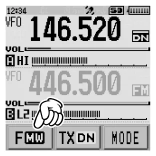</button><figcaption>Figure from page 57</figcaption><dialog id="fig-24"><p>Figure from page 57</p><form method="dialog"><button>Close</button></form></dialog></figure><p><strong>2</strong> Touch <strong>[HOME]</strong> .</p>
<p>The home channel of the currently selected frequency band appears on the LCD.</p>
<p>~~<strong>Tips</strong>~~   - For details on the home channels displayed on the LCD, see the following table.</p>
<pre><code>  - After selecting the desired frequency, rotating the DIAL returns the transceiver to VFO
</code></pre>
<p>mode.</p>
<table>
<thead>
<tr>
<th>Frequency band</th>
<th>Frequency</th>
<th>Frequency band</th>
<th>Frequency</th>
</tr>
</thead>
<tbody>
<tr>
<td></td>
<td></td>
<td></td>
<td></td>
</tr>
<tr>
<td>AM Band</td>
<td>540 kHz</td>
<td></td>
<td></td>
</tr>
<tr>
<td>174 to 222 MHz band</td>
<td>174.000 MHz</td>
<td></td>
<td></td>
</tr>
<tr>
<td></td>
<td></td>
<td></td>
<td></td>
</tr>
<tr>
<td>FM Band</td>
<td></td>
<td></td>
<td></td>
</tr>
<tr>
<td>76.000 (88.000) MHz</td>
<td></td>
<td></td>
<td></td>
</tr>
<tr>
<td>Information radio band (1)</td>
<td></td>
<td></td>
<td></td>
</tr>
<tr>
<td>222.000 MHz</td>
<td></td>
<td></td>
<td></td>
</tr>
<tr>
<td></td>
<td></td>
<td></td>
<td></td>
</tr>
<tr>
<td>SW band</td>
<td></td>
<td></td>
<td></td>
</tr>
<tr>
<td>1.800 MHz</td>
<td></td>
<td></td>
<td></td>
</tr>
<tr>
<td>430 MHz band</td>
<td></td>
<td></td>
<td></td>
</tr>
<tr>
<td>446.000 (430.000) MHz</td>
<td></td>
<td></td>
<td></td>
</tr>
<tr>
<td></td>
<td></td>
<td></td>
<td></td>
</tr>
<tr>
<td>50 MHz</td>
<td></td>
<td></td>
<td></td>
</tr>
<tr>
<td>50.000 MHz</td>
<td></td>
<td></td>
<td></td>
</tr>
<tr>
<td>470 to 770 MHz band</td>
<td></td>
<td></td>
<td></td>
</tr>
<tr>
<td>47.000 MHz</td>
<td></td>
<td></td>
<td></td>
</tr>
<tr>
<td></td>
<td></td>
<td></td>
<td></td>
</tr>
<tr>
<td>AIR band</td>
<td></td>
<td></td>
<td></td>
</tr>
<tr>
<td>108.000 MHz</td>
<td></td>
<td></td>
<td></td>
</tr>
<tr>
<td>Information radio band (2)</td>
<td></td>
<td></td>
<td></td>
</tr>
<tr>
<td>860.000 MHz</td>
<td></td>
<td></td>
<td></td>
</tr>
<tr>
<td></td>
<td></td>
<td></td>
<td></td>
</tr>
<tr>
<td>144 MHz band</td>
<td></td>
<td></td>
<td></td>
</tr>
<tr>
<td>146.520 (144.000) MHz</td>
<td></td>
<td></td>
<td></td>
</tr>
</tbody>
</table>
<p><strong>Returning to the Previous Frequency</strong>
<strong>1</strong> Touch <strong>[F MW]</strong> .
The function menu appears on the LCD.
<strong>2</strong> Touch <strong>[HOME]</strong> .
The frequency band selected before recalling the home channel appears on the LCD.</p>
<p><strong>Changing the Home Channel Frequency</strong></p>
<p>Change the home channel frequencies from the default setting.</p>
<p><strong>2</strong> Rotate the DIAL to tune in to the frequency you want to set as a home channel.
<strong>3</strong> Touch <strong>[F MW]</strong> for over one second.</p>
<p><strong>5</strong> Touch <strong>[H.WRITE]</strong> .
<strong>6</strong> “OVERWRITE?” appears.
<strong>7</strong> Select <strong>[OK]</strong>, then touch <strong>[OK]</strong> to confirm.
Overwriting completes and the home channel frequency is changed.</p><p>~~<strong>Clearing Memories</strong>~~</p>
<p><strong>2</strong> Touch <strong>[F MW]</strong> for over one second.
<strong>3</strong> Rotate the DIAL to select the memory channel from which the data is to be cleared.</p>
<p><strong>5</strong> Touch <strong>[M.DEL]</strong> .
<strong>6</strong> “DELETE?” appears.
<strong>7</strong> Select <strong>[OK]</strong>, then touch <strong>[OK]</strong> to confirm.</p>
<p>~~<strong>Remark</strong>~~ To cancel the memory clear operation, touch</p>
<p>[CANCEL].</p>
<p>steps 2 to 7.</p>
<p>Data on memory channel 1 cannot be deleted.</p>
<p>~~<strong>Tip</strong>~~</p>
<p>Memories cannot be cleared from the specified priority memory channel. To clear a priority memory
channel, cancel the priority setting of the memory channel.</p>
<p><strong>Restoring the Cleared Memories</strong></p>
<p>The cleared memory channels may be restored:</p>
<p>The most recently used memory channel is displayed.
<strong>2</strong> Touch <strong>[F MW]</strong> for over one second.
<strong>3</strong> Rotate the DIAL to select the memory channel, to restore the memory data.</p>
<p><strong>5</strong> Touch <strong>[M.REV]</strong> .
The cleared data is restored to the memory channel.</p>
<p>~~<strong>Using Memory Tag</strong>~~</p>
<p>Memory name tags, such as a call sign or broadcast station name may be assigned
to the memory channels and home channels. Input a memory tag using up to 16
characters. Alphabetic characters (upper and lowercase), Numbers and Symbols may
be entered to the memory name tag.</p><p><strong>Assigning a Name to a Memory Channel</strong></p>
<p><strong>2</strong> Recall the memory channel to assign the name.</p>
<p>~~<strong>Tip</strong>~~</p>
<p>To assign a name to a home channel, recall the desired home channel.</p>
<p>The transceiver enters Set mode.
<strong>4</strong> Touch <strong>[MEMORY]</strong> .</p>
<p><strong>5</strong> Touch <strong>[3 MEMORY NAME]</strong> .</p>
<p><strong>6</strong> See “Entering Letters” on page 19 to input a memory
tag.</p>
<p><strong>7</strong> Press .
The memory tag is saved to the memory channel, and the transceiver exits from Set
mode.</p><figure><button aria-label="Enlarge Figure from page 60" class="zoom" data-dialog="fig-25" type="button">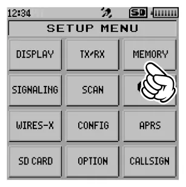</button><figcaption>Figure from page 60</figcaption><dialog id="fig-25"><p>Figure from page 60</p><form method="dialog"><button>Close</button></form></dialog></figure><figure><button aria-label="Enlarge Figure from page 60" class="zoom" data-dialog="fig-26" type="button">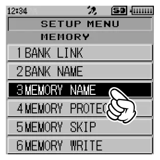</button><figcaption>Figure from page 60</figcaption><dialog id="fig-26"><p>Figure from page 60</p><form method="dialog"><button>Close</button></form></dialog></figure><p><strong>Displaying the Memory Tag</strong></p>
<p>During mono band operation, the tag (name) of the memory channel or home channel
can be displayed by following the procedure below.</p>
<p>The mono-band-operation display appears, and the
name tag appears under the frequency.
The name tag also appears under the frequency when
the frequency is displayed in double-sized characters.</p>
<p>~~<strong>Tips</strong>~~   - Touch the Name, Date, or Volt display to display the</p>
<p>memory tag name in double-sized characters.</p>
<pre><code>  - Touch the display again to restore the font size to the
</code></pre>
<p>original.</p><p>The registered memory channels can be sorted according to the intended use.
The transceiver allows using up to 24 memory banks. A maximum of 100 memory
channels can be registered in each memory bank. One memory channel may also be
registered in two or more memory banks. If the data on a memory channel is edited
or updated, the data on the corresponding memory channel in the memory banks is
automatically edited or updated.</p>
<p>~~<strong>Registering to Memory Banks</strong>~~</p>
<p><strong>2</strong> Rotate the DIAL to select the memory channel to
register in the memory bank.</p>
<p><strong>3</strong> Touch <strong>[F MW]</strong> for over one second.
Memory Write mode is activated.
<strong>4</strong> Rotate the DIAL to select the memory bank (B1 to B24)
to register the memory channel.
<strong>5</strong> Touch <strong>[M.WRITE]</strong> .
The memory channel is registered in the selected
memory bank.</p><figure><button aria-label="Enlarge Figure from page 62" class="zoom" data-dialog="fig-27" type="button">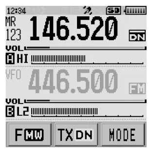</button><figcaption>Figure from page 62</figcaption><dialog id="fig-27"><p>Figure from page 62</p><form method="dialog"><button>Close</button></form></dialog></figure><figure><button aria-label="Enlarge Figure from page 62" class="zoom" data-dialog="fig-28" type="button">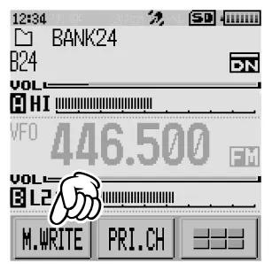</button><figcaption>Figure from page 62</figcaption><dialog id="fig-28"><p>Figure from page 62</p><form method="dialog"><button>Close</button></form></dialog></figure><p>~~<strong>Tips</strong>~~</p>
<ul>
<li>
<p>To register the preset receiver memory channels in the memory bank, see “Registering Preset
Receiver Memory Channels into Memory Banks” on page 66.</p>
</li>
<li>
<p>Rotating the DIAL selects the memory channels, skip search memory channels, and programmable
memory channels on the LCD in the following sequence:
1 ↔ 2 ↔ 3 ↔ ...L50 ↔ U50 ↔ BANK 1 ↔ BANK 2 ↔ ...BANK 24 ↔ 1 ↔ 2...
Memory bank channels are displayed when the DIAL is turned counterclockwise from channel [1],
or when the DIAL is rotated clockwise from channel [U50].</p>
</li>
<li>
<p>If the memory bank name was changed, the changed bank name appears.</p>
</li>
<li>
<p>appears for a memory bank in which no memory channel is registered, and appears for a
memory bank in which at least one memory channel is registered.</p>
</li>
</ul>
<p>~~<strong>Recalling Memory Bank</strong>~~</p>
<p><strong>2</strong> Touch <strong>[F MW]</strong> .
<strong>3</strong> Touch <strong>[BANK]</strong> .</p>
<p><strong>5</strong> Rotate the DIAL to select the desired memory bank.</p>
<p>The memory bank to be used is determined.
<strong>7</strong> Rotate the DIAL to select the desired memory channel in the memory bank.</p>
<p>~~<strong>Remarks</strong>~~   - To select other memory banks, repeat steps 4 to 6.</p>
<pre><code>    - To return to the regular memory channel mode, touch **[F MW]** followed by **[MR]** .
</code></pre>
<p>~~<strong>Canceling Memory Channel Registration in Memory Bank</strong>~~</p>
<p><strong>1</strong> To cancel the registration, recall the memory bank where the desired memory
channel is registered.</p>
<p>~~<strong>Remark</strong>~~ For details on operations, see “Recalling Memory Bank”.
<strong>2</strong> Rotate the DIAL to select the memory channel you want to cancel the registration.
<strong>3</strong> Touch <strong>[F MW]</strong> for over one second.</p>
<p><strong>5</strong> Touch <strong>[M.DEL]</strong> .
The registration is canceled, and the display returns to the memory bank display. If
no other memory channels are registered in the memory bank, the memory bank
having the lowest number is displayed.</p><p>~~<strong>Assigning Name to Memory Bank</strong>~~</p>
<p>A name can be assigned to a memory bank using up to 16 characters.
The following types of characters can be entered:</p>
<ul>
<li>
<p>Alphabetic characters (uppercase and lowercase characters)</p>
</li>
<li>
<p>Numbers</p>
</li>
<li>
<p>Symbols</p>
</li>
</ul>
<p>The transceiver enters Set mode.
<strong>2</strong> Touch <strong>[MEMORY]</strong> .</p>
<p><strong>3</strong> Rotate the DIAL, then touch <strong>[2 BANK NAME]</strong> .</p>
<p><strong>4</strong> Rotate the DIAL to select a memory bank.
Select the number of the memory bank to which you want to assign a name.</p>
<p><strong>6</strong> Input a bank memory name (See “Entering Letters” on page 19).
<strong>7</strong> Press .
The memory bank name is saved, and the transceiver exits from Set mode.</p><p>Weather Broadcast (10 channels), International VHF Marine Radio (57 channels) and
Shortwave Broadcasts Stations (89 channels) are recorded in the preset receiver memory
channels.</p>
<p><strong>• Weather Broadcast preset receiver memory channels [WX CH]</strong>
<strong>are listed on:����������������������������������������������������������������������������������������������������� Page 66</strong>
The frequencies (10 channel) used for the VHF Weather Broadcast Station are registered to the dedicated preset receiver memory channels.</p>
<p><strong>• International VHF Marine Radio preset receiver memory channels [INTVHF]</strong>
<strong>are listed on:����������������������������������������������������������������������������������������������������� Page 67</strong>
The frequencies (57 channel) used for the international VHF (marine) radio are registered to the dedicated preset receiver memory channels.</p>
<p><strong>• International World Wide Broadcast preset receiver memory channels [SW] are</strong>
<strong>listed on: ���������������������������������������������������������������������������������������������������������� Page 68</strong>
Listen in to major broadcasts from around the world (89 channels in total).</p><p>~~<strong>Registering Preset Receiver Memory Channels into Memory Banks</strong>~~</p>
<p>Your favorite preset receiver memory channels may be registered into a memory bank.
<strong>1</strong> Rotate the DIAL to select the preset receiver memory channel to register into the
memory bank.
<strong>2</strong> Touch <strong>[F MW]</strong> for over one second.</p>
<p>~~<strong>Remark</strong>~~ To immediately cancel the registration, press .
<strong>3</strong> Rotate the DIAL to select a memory bank to register your favorite preset receiver
memory channel.
<strong>4</strong> Touch <strong>[M.WRITE]</strong> .
The preset receiver memory channel is registered to the memory bank, and the
frequency appears on the LCD.</p>
<p>~~<strong>Recalling Preset Receiver Memory Channel to Listen to the</strong>~~
~~<strong>Weather Broadcast</strong>~~</p>
<p>The frequencies (10 channels) used for the VHF Weather Broadcast Station are registered
in the dedicated preset receiver memory channels.</p>
<p><strong>2</strong> Touch <strong>[F MW]</strong> .
<strong>3</strong> Touch <strong>[P.RCVR]</strong> .
Preset Receiver mode is activated.</p>
<p><strong>5</strong> Rotate the DIAL to select the desired channel.</p>
<p>~~<strong>Remarks</strong>~~   - For the available Weather Broadcast channels, see the following table.</p>
<pre><code>     - To stop reception of the international VHF radio, touch **[F MW]** followed by **[P.RCVR]** ].
</code></pre>
<p><strong>WX Channel Frequency List</strong></p>
<table>
<thead>
<tr>
<th>Memory channel No.</th>
<th>Frequency (MHz)</th>
<th>Memory channel No.</th>
<th>Frequency (MHz)</th>
</tr>
</thead>
<tbody>
<tr>
<td>1</td>
<td>162.550</td>
<td>6</td>
<td>162.500</td>
</tr>
<tr>
<td>2</td>
<td>162.400</td>
<td>7</td>
<td>162.525</td>
</tr>
<tr>
<td>3</td>
<td>162.475</td>
<td>8</td>
<td>161.650</td>
</tr>
<tr>
<td>4</td>
<td>162.425</td>
<td>9</td>
<td>161.775</td>
</tr>
<tr>
<td>5</td>
<td>162.450</td>
<td>10</td>
<td>163.275</td>
</tr>
</tbody>
</table><p>~~<strong>Recalling Preset Receiver Memory Channel to Listen to the</strong>~~
~~<strong>International VHF (Marine) Radio</strong>~~</p>
<p>The frequencies (57 channels) used for the international VHF marine radio are registered
in the dedicated preset receiver memory channels.</p>
<p><strong>2</strong> Touch <strong>[F MW]</strong> .
<strong>3</strong> Touch <strong>[P.RCVR]</strong> .
Preset Receiver mode is activated.</p>
<p><strong>5</strong> Rotate the DIAL to select the desired channel.</p>
<p>~~<strong>Remarks</strong>~~   - For the available international VHF channels, see the following table.</p>
<pre><code>     - To stop reception of the international VHF radio, touch **[F MW]** followed by **[P.RCVR]** ].
</code></pre>
<p>In the event of extreme weather disturbances, such as storms and hurricanes, the NOAA (National Oceanic
and Atmospheric Administration) sends a weather alert accompanied by a 1050 Hz tone and subsequent
weather report on one of the NOAA weather channels. You may enable the Weather Alert tone via Set Mode
option [SIGNALING] → [14 WX ALERT], if desired (See page 124).</p>
<p>~~<strong>Tips</strong>~~</p>
<ul>
<li>
<p>The preset receiver memory channel cannot be rewritten with another frequency or data.</p>
</li>
<li>
<p>To scan the preset receiver memory channels toward higher channel numbers, touch <strong>[F MW]</strong>
followed by <strong>[SCAN]</strong> . To scan the preset receiver memory channels toward lower channel numbers,
rotate the DIAL counterclockwise until it clicks once during scanning. When a signal is received
during scanning, the scanning stops to receive the frequency for 5 seconds.</p>
</li>
<li>
<p>To set the transceiver operation when scanning stops, see “Setting the Receiver Operation“Setting
the Receive Operation When Scanning Stops” on page 74.</p>
</li>
<li>
<p>To register the International VHF Marine channels into a memory bank, follow the procedure in
“Registering Preset Receiver Memory Channels into Memory Banks” on page 66.</p>
</li>
</ul>
<p><strong>Frequencies of International VHF Marine radio frequencies</strong></p>
<p><strong>registered in the preset receiver memory channels</strong></p>
<table>
<thead>
<tr>
<th>Memory channel No.</th>
<th>Frequency (MHz)</th>
<th>Col3</th>
<th>Memory channel No.</th>
<th>Frequency (MHz)</th>
<th>Col6</th>
</tr>
</thead>
<tbody>
<tr>
<td>1</td>
<td>156.050</td>
<td>160.650*</td>
<td>60</td>
<td>156.025</td>
<td>160.625*</td>
</tr>
<tr>
<td>2</td>
<td>156.100</td>
<td>160.700*</td>
<td>61</td>
<td>156.075</td>
<td>160.675*</td>
</tr>
<tr>
<td>3</td>
<td>156.150</td>
<td>160.750*</td>
<td>62</td>
<td>156.125</td>
<td>160.725*</td>
</tr>
<tr>
<td>4</td>
<td>156.200</td>
<td>160.800*</td>
<td>63</td>
<td>156.175</td>
<td>160.775*</td>
</tr>
<tr>
<td>5</td>
<td>156.250</td>
<td>160.850*</td>
<td>64</td>
<td>156.225</td>
<td>160.825*</td>
</tr>
<tr>
<td>6</td>
<td>156.300</td>
<td>156.300</td>
<td>65</td>
<td>156.275</td>
<td>160.875*</td>
</tr>
<tr>
<td>7</td>
<td>156.350</td>
<td>160.950*</td>
<td>66</td>
<td>156.325</td>
<td>160.925*</td>
</tr>
<tr>
<td>8</td>
<td>156.400</td>
<td>156.400</td>
<td>67</td>
<td>156.375</td>
<td>156.375</td>
</tr>
<tr>
<td>9</td>
<td>156.450</td>
<td>156.450</td>
<td>68</td>
<td>156.425</td>
<td>156.425</td>
</tr>
<tr>
<td>10</td>
<td>156.500</td>
<td>156.500</td>
<td>69</td>
<td>156.475</td>
<td>156.475</td>
</tr>
<tr>
<td>11</td>
<td>156.550</td>
<td>156.550</td>
<td>70</td>
<td>156.525</td>
<td>156.525</td>
</tr>
</tbody>
</table>
<p>12 156 600 71 156 575</p><table>
<thead>
<tr>
<th>Memory channel No.</th>
<th>Frequency (MHz)</th>
<th>Col3</th>
<th>Memory channel No.</th>
<th>Frequency (MHz)</th>
<th>Col6</th>
</tr>
</thead>
<tbody>
<tr>
<td>13</td>
<td>156.650</td>
<td>156.650</td>
<td>72</td>
<td>156.625</td>
<td>156.625</td>
</tr>
<tr>
<td>14</td>
<td>156.700</td>
<td>156.700</td>
<td>73</td>
<td>156.675</td>
<td>156.675</td>
</tr>
<tr>
<td>15</td>
<td>156.750</td>
<td>156.750</td>
<td>74</td>
<td>156.725</td>
<td>156.725</td>
</tr>
<tr>
<td>16</td>
<td>156.800</td>
<td>156.800</td>
<td>75</td>
<td>156.775</td>
<td>156.775</td>
</tr>
<tr>
<td>17</td>
<td>156.850</td>
<td>156.850</td>
<td>76</td>
<td>156.825</td>
<td>156.825</td>
</tr>
<tr>
<td>18</td>
<td>156.900</td>
<td>161.500*</td>
<td>77</td>
<td>156.875</td>
<td>156.875</td>
</tr>
<tr>
<td>19</td>
<td>156.950</td>
<td>161.550*</td>
<td>78</td>
<td>156.955</td>
<td>161.550*</td>
</tr>
<tr>
<td>20</td>
<td>157.000</td>
<td>161.600*</td>
<td>79</td>
<td>156.975</td>
<td>161.575*</td>
</tr>
<tr>
<td>21</td>
<td>157.050</td>
<td>161.650*</td>
<td>80</td>
<td>157.025</td>
<td>161.625*</td>
</tr>
<tr>
<td>22</td>
<td>157.100</td>
<td>161.700*</td>
<td>81</td>
<td>157.075</td>
<td>161.675*</td>
</tr>
<tr>
<td>23</td>
<td>157.150</td>
<td>161.750*</td>
<td>82</td>
<td>157.125</td>
<td>161.725*</td>
</tr>
<tr>
<td>24</td>
<td>157.200</td>
<td>161.800*</td>
<td>83</td>
<td>157.175</td>
<td>161.775*</td>
</tr>
<tr>
<td>25</td>
<td>157.250</td>
<td>161.850*</td>
<td>84</td>
<td>157.225</td>
<td>161.825*</td>
</tr>
<tr>
<td>26</td>
<td>157.300</td>
<td>161.900*</td>
<td>85</td>
<td>157.275</td>
<td>161.875*</td>
</tr>
<tr>
<td>27</td>
<td>157.350</td>
<td>161.950*</td>
<td>86</td>
<td>157.325</td>
<td>161.925*</td>
</tr>
<tr>
<td>28</td>
<td>157.400</td>
<td>162.000*</td>
<td>87</td>
<td>157.375</td>
<td>161.975*</td>
</tr>
<tr>
<td></td>
<td></td>
<td></td>
<td>88</td>
<td>157.425</td>
<td>162.025*</td>
</tr>
</tbody>
</table>
<p>~~<strong>Remark</strong>~~</p>
<ul>
<li>indicates the frequency of the VHF marine base station. For example: if the preset receiver memory
channel 1 is selected, the base station frequency 160.650 MHz appears and @ lights up. Touching</li>
</ul>
<p><strong>[F MW]</strong> followed by <strong>[REV]</strong> displays the Ship Station frequency 160.650 MHz and @ lights up. The
frequency lower than the base station frequency by 4.6 MHz is the Ship Station frequency and duplex
operation may commence. To return to the base station frequency, press <strong>[F MW]</strong> followed by <strong>[REV]</strong> .</p>
<p>~~<strong>Recalling Preset Receiver Memory Channels to Listen to World</strong>~~
~~<strong>Wide Broadcasts</strong>~~</p>
<p>The frequencies (89 channels) used for international worldwide broadcasting are
registered to the dedicated preset receiver memory channels.</p>
<p><strong>2</strong> Touch <strong>[F MW]</strong> .
<strong>3</strong> Touch <strong>[P.RCVR]</strong> .
Preset Receiver mode is activated.</p>
<p><strong>5</strong> Rotate the DIAL to select the desired channel.</p>
<p>~~<strong>Remarks</strong>~~   - For the available world broadcast station frequencies, see the following table.</p>
<pre><code>     - To stop reception of the world broadcast, touch **[F MW]** followed by **[P.RCVR]** .
</code></pre>
<p>yy Depending on time zone or signal strength, broadcasts may not be received.</p>
<p>yy There are broadcast stations other than those listed below that can also be received. In addition,</p>
<p>the broadcast station frequency may be changed, it may be off-air or have become abolished. For
current details please refer to a commercially available frequency list</p><p><strong>Worldwide short wave broadcast</strong></p>
<p>|CH
Number|Frequency
(MHz)|Name|Broadcast Station
Name|Col5|CH
Number|Frequency
(MHz)|Name|Broadcast Station
Name|
|---|---|---|---|---|---|---|---|---|
|1|6.030|VOA|USA||43|15.550|PORTUGAL|Portugal|
|2|6.160|VOA|USA||44|21.655|PORTUGAL|Portugal|
|3|9.760|VOA|USA||45|9.650|SPAIN|Spain|
|4|11.965|VOA|USA||46|11.880|SPAIN|Spain|
|5|9.555|CANADA|Canada||47|11.910|SPAIN|Spain|
|6|9.660|CANADA|Canada||48|15.290|SPAIN|Spain|
|7|11.715|CANADA|Canada||49|6.055|NIKKEI|Japan (Nikkei)|
|8|11.955|CANADA|Canada||50|7.315|NORWAY|Norway|
|9|6.195|BBC|UK||51|9.590|NORWAY|Norway|
|10|9.410|BBC|UK||52|9.925|NORWAY|Norway|
|11|12.095|BBC|UK||53|9.985|NORWAY|Norway|
|12|15.310|BBC|UK||54|6.065|SWEDEN|Sweden|
|13|6.090|FRANCE|France||55|9.490|SWEDEN|Sweden|
|14|9.790|FRANCE|France||56|15.240|SWEDEN|Sweden|
|15|11.670|FRANCE|France||57|17.505|SWEDEN|Sweden|
|16|15.195|FRANCE|France||58|6.120|FINLAND|Finland|
|17|6.000|DW|Germany||59|9.560|FINLAND|Finland|
|18|6.075|DW|Germany||60|11.755|FINLAND|Finland|
|19|9.650|DW|Germany||61|15.400|FINLAND|Finland|
|20|9.735|DW|Germany||62|5.920|RUSSIA|Russia|
|21|5.990|ITALY|Italy||63|5.940|RUSSIA|Russia|
|22|9.575|ITALY|Italy||64|7.200|RUSSIA|Russia|
|23|9.675|ITALY|Italy||65|12.030|RUSSIA|Russia|
|24|17.780|ITALY|Italy||66|7.465|ISRAEL|Israel|
|25|7.170|TURKEY|Turkey||67|11.585|ISRAEL|Israel|
|26|7.270|TURKEY|Turkey||68|15.615|ISRAEL|Israel|
|27|9.560|TURKEY|Turkey||69|17.535|ISRAEL|Israel|
|28|11.690|TURKEY|Turkey||70|6.045|INDIA|India|
|29|9.660|VATICAN|Vatican||71|9.595|INDIA|India|
|30|11.625|VATICAN|Vatican||72|11.620|INDIA|India|
|31|11.830|VATICAN|Vatican||73|15.020|INDIA|India|
|32|15.235|VATICAN|Vatican||74|7.190|CHINA|China|
|33|5.955|NEDRLAND|Netherlands||75|7.405|CHINA|China|
|34|6.020|NEDRLAND|Netherlands||76|9.785|CHINA|China|
|35|9.895|NEDRLAND|Netherlands||77|11.685|CHINA|China|
|36|11.655|NEDRLAND|Netherlands||78|6.135|KOREA|South Korea|
|37|5.985|CZECH|Czech Republic||79|7.275|KOREA|South Korea|
|38|6.105|CZECH|Czech Republic||80|9.570|KOREA|South Korea|
|39|9.455|CZECH|Czech Republic||81|13.670|KOREA|South Korea|
|40|11.860|CZECH|Czech Republic||82|6.165|JAPAN|Japan|</p>
<p>41 9.780 PORTUGAL Portugal</p>
<p>83 7.200 JAPAN Japan</p><p>CH
Number</p>
<p>Frequency</p>
<p>Frequency Broadcast Station</p>
<p>Name
(MHz) Name</p>
<p>Name</p>
<p>CH
Number</p>
<p>Frequency</p>
<p>Frequency Broadcast Station</p>
<p>Name
(MHz) Name</p>
<p>Name</p>
<table>
<thead>
<tr>
<th>85</th>
<th>11.860</th>
<th>JAPAN</th>
<th>Japan</th>
<th>Col5</th>
<th>88</th>
<th>9.660</th>
<th>AUSTRALIA</th>
<th>Australia</th>
</tr>
</thead>
<tbody>
<tr>
<td>86</td>
<td>5.995</td>
<td>AUSTRALIA</td>
<td>Australia</td>
<td></td>
<td>89</td>
<td>12.080</td>
<td>AUSTRALIA</td>
<td>Australia</td>
</tr>
<tr>
<td>87</td>
<td>9.580</td>
<td>AUSTRALIA</td>
<td>Australia</td>
<td>Australia</td>
<td>Australia</td>
<td>Australia</td>
<td>Australia</td>
<td>Australia</td>
</tr>
</tbody>
</table><ul>
<li>
<p>VFO Scan</p>
</li>
<li>
<p>Memory Channel Scan</p>
</li>
</ul>
<p><strong>3</strong> Touch <strong>[F MW]</strong> .
The function menu appears on the LCD.</p>
<p><strong>4</strong> Touch <strong>[SCAN]</strong> .
Scanning (SCAN) starts toward higher frequencies.</p><figure><button aria-label="Enlarge Figure from page 71" class="zoom" data-dialog="fig-29" type="button">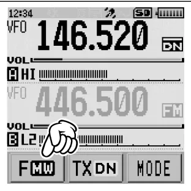</button><figcaption>Figure from page 71</figcaption><dialog id="fig-29"><p>Figure from page 71</p><form method="dialog"><button>Close</button></form></dialog></figure><figure><button aria-label="Enlarge Figure from page 71" class="zoom" data-dialog="fig-30" type="button">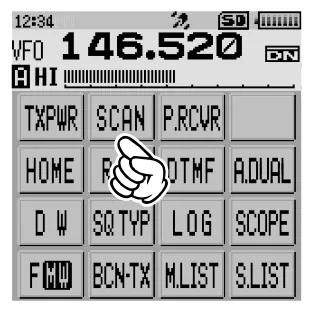</button><figcaption>Figure from page 71</figcaption><dialog id="fig-30"><p>Figure from page 71</p><form method="dialog"><button>Close</button></form></dialog></figure><p>~~<strong>Tips</strong>~~   - When a signal is received during scanning, the</p>
<p>decimal point blinks.</p>
<pre><code> - Rotate the DIAL clockwise to start scanning toward
</code></pre>
<p>higher frequencies.</p>
<pre><code> - Rotate the DIAL counterclockwise to start scanning
</code></pre>
<p>toward lower frequencies.</p>
<pre><code> - When a signal is received during scanning, a beep
</code></pre>
<p>sound is emitted. Then, scanning stops for 5 seconds
to monitor the frequency. When scanning stops, the
decimal point blinks and the LCD remains illuminated.
After receiving the signal for 5 seconds, scanning
resumes.</p>
<pre><code> - To select the range for scanning, enter Set mode
</code></pre>
<p>second, then select <strong>[SCAN]</strong> followed by <strong>[5 SCAN</strong>
<strong>WIDTH]</strong> .</p>
<p><strong>Canceling Scanning</strong></p>
<p>To exit scanning, touch <strong>[STOP]</strong> or press .</p>
<p>When a signal is received</p>
<p><strong>Skipping Frequencies You Do Not Want to Scan (Skip Search Memory)</strong></p>
<p>During VFO scan, scanning may stop at a frequency that you do not want to receive.
The unwanted frequency can be skipped by registering it to the “skip search memory
channels” in advance. Up to 99 frequencies can be saved onto the skip search memory
channels (memory channels 901 to 999).</p><p><strong>Specifying the Frequencies You Do Not Want to Scan</strong>
<strong>1</strong> Start VFO scanning.
Start VFO scanning referring to “VFO Scan” on page 71.
<strong>2</strong> When scanning stops at a frequency you do not want to
receive, touch <strong>[F MW]</strong> for over one second.
The number of the next unused skip search memory
channel will blink.</p>
<p>~~<strong>Tip</strong>~~ A different skip search memory channel may be specified by</p>
<p>rotating the DIAL.</p>
<p><strong>3</strong> Touch <strong>[M.WRITE]</strong> .
After completing registration to the skip memory channel,
scanning resumes.</p>
<p>~~<strong>Tips</strong>~~   - Follow the procedure below to register the frequencies you do not want to scan to the “skip</p>
<p>search memory channels” in advance.</p>
<p><strong>1</strong> In VFO mode, tune in to the frequency you do not want to scan.</p>
<p><strong>2</strong> Touch <strong>[F MW]</strong> for over one second.</p>
<p><strong>3</strong> Rotate the DIAL to select the desired skip search memory channel (901 to 999).</p>
<p><strong>4</strong> Touch <strong>[M WRITE]</strong> .</p>
<p><strong>Deleting the Frequency Registered to the Skip Search Memory Channel</strong></p>
<p>Frequencies can be removed from the skip search memory channels by following the
procedure below. Once the frequencies are removed from the skip search memory
channels, they can then be scanned.</p>
<p><strong>2</strong> Touch <strong>[F MW]</strong> for over one second.
<strong>3</strong> Rotate the DIAL to select the skip search memory channel (901 to 999) that is to be
cleared.</p><p><strong>5</strong> Touch <strong>[M.DEL]</strong> .</p>
<p>[DELETE OK?] appears on the LCD.
<strong>6</strong> Select <strong>[OK]</strong>, then touch <strong>[OK]</strong> to confirm.</p>
<p>~~<strong>Tip</strong>~~</p>
<ul>
<li>Restoring the deleted Frequency to the Skip Search Memory Channel
If you have not registered a new frequency to the same memory channel, you can restore the deleted
frequency by repeating steps 1 through 4, then touching <strong>[M.REX]</strong> .</li>
</ul>
<p><strong>Setting the Receive Operation When Scanning Stops</strong></p>
<p>When scanning stops, one of the following three receiving options may be chosen:</p>
<p>(1) The signal is received for a specified period of time, and then scanning resumes. The</p>
<p>seconds after the signal fades out, scanning resumes.</p>
<p>The transceiver enters Set mode.</p><p><strong>2</strong> Touch <strong>[SCAN]</strong> .</p>
<p><strong>3</strong> Touch <strong>[4 SCAN RESUME]</strong> .</p>
<p><strong>5</strong> Rotate the DIAL to select the desired reception method from [2 SEC TO 10 SEC
(0.5SEC STEP)], [BUSY] and [HOLD].
<strong>6</strong> Press .
The reception method is set and the transceiver exits from Set mode.</p>
<p>~~<strong>Tips</strong>~~</p>
<ul>
<li>
<p>The reception method selected here is applied to [VFO Scanning], [Programmable Memory Channel
Scanning] and [Memory Channel Scanning].</p>
</li>
<li>
<p>The scanning restart time after BUSY (duration of signal reception) can be changed by selecting the
Set mode option <strong>[SCAN]</strong> → <strong>[3 SCAN RE-START]</strong> .</p>
</li>
</ul><figure><button aria-label="Enlarge Figure from page 75" class="zoom" data-dialog="fig-31" type="button">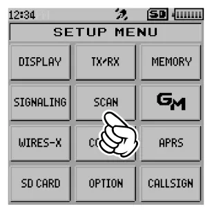</button><figcaption>Figure from page 75</figcaption><dialog id="fig-31"><p>Figure from page 75</p><form method="dialog"><button>Close</button></form></dialog></figure><p>The memory channel frequencies may be scanned in the order of the memory channel
numbers.</p>
<p><strong>2</strong> Rotate the DIAL to select the memory channel to begin memory scanning from.
<strong>3</strong> Touch <strong>[F MW]</strong> .
The function menu appears on the LCD.
<strong>4</strong> Touch <strong>[SCAN]</strong> .
Scanning (SCAN) begins and progresses toward higher memory channel numbers.
When a signal is received, the decimal point blinks.</p>
<p>~~<strong>Tips</strong>~~ - Rotate the DIAL clockwise to start scanning toward higher</p>
<p>frequencies.</p>
<ul>
<li>Rotate the DIAL counterclockwise to start scanning toward</li>
</ul>
<p>lower frequencies.</p>
<ul>
<li>When a signal is received during scanning, scanning stops</li>
</ul>
<p>for 5 seconds to monitor the signal on the frequency of the
signal.</p>
<ul>
<li>When scanning stops, the decimal point blinks and the LCD</li>
</ul>
<p>remains illuminated.</p>
<ul>
<li>
<p>After receiving the signal for 5 seconds, scanning resumes.</p>
<ul>
<li>Press to cancel scanning.</li>
</ul>
</li>
</ul><p><strong>Specifying Skip/Selected Memory Channels</strong></p>
<p>Two types of memory channels may be designated, “skip memory channels” and “specified
memory channels” for effective memory channel scanning.
Skip memory channels: You can specify a memory channel you do not want to scan
during memory channel scanning. Alternatively, you can specify that only designated
memory channels are scanned during memory scanning.</p>
<p><strong>2</strong> Rotate the DIAL to show the memory channel to register as a skip memory channel or
specified memory channel.</p>
<p>The transceiver enters Set mode.
<strong>4</strong> Touch <strong>[MEMORY]</strong> .</p>
<p><strong>5</strong> Touch <strong>[5 MEMORY SKIP]</strong> .</p>
<p><strong>6</strong> Rotate the DIAL to select [SKIP] or [SELECT].
To register as a skip memory, select [SKIP].
To register as a specified memory, select [SELECT].</p><figure><button aria-label="Enlarge Figure from page 77" class="zoom" data-dialog="fig-32" type="button">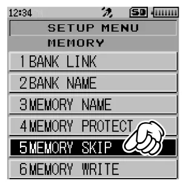</button><figcaption>Figure from page 77</figcaption><dialog id="fig-32"><p>Figure from page 77</p><form method="dialog"><button>Close</button></form></dialog></figure><p><strong>7</strong> Press .
The transceiver exits from Set mode.</p>
<p>LCD turns off and the setting is canceled.</p>
<p><strong>Scanning Only the Specified Memory Channels</strong></p>
<p><strong>2</strong> Select the memory channel registered as a specified memory channel.
<strong>3</strong> Touch <strong>[F MW]</strong> .
The function menu appears on the LCD.
<strong>4</strong> Touch <strong>[SCAN]</strong> .</p>
<p>~~<strong>Tips</strong>~~   - Rotate the DIAL clockwise to start scanning toward higher frequencies</p>
<pre><code> - Only the memory channels registered as the specified memory channels are scanned.

 - When a signal is received during scanning, a beep sound is emitted. Scanning stops for 5
</code></pre>
<p>seconds to monitor the cannel frequency.</p>
<pre><code> - When scanning stops, the decimal point blinks and the LCD remains illuminated.

  - After receiving the signal for 5 seconds, scanning resumes.

  - Press to cancel scanning.
</code></pre>
<p>over one second, then select <strong>[SCAN]</strong> followed by <strong>[5 SCAN WIDTH]</strong> .</p><p>~~<strong>Scanning the Memory Bank</strong>~~</p>
<p>Only the memory channels in the recalled memory bank can be scanned.</p>
<p><strong>2</strong> Touch <strong>[F MW]</strong> .
<strong>3</strong> Touch <strong>[BANK]</strong> .</p>
<p><strong>5</strong> Rotate the DIAL to select the desired memory bank from
BANK 1 to BANK 24.</p>
<p><strong>7</strong> Touch <strong>[F MW]</strong> .
<strong>8</strong> Touch <strong>[SCAN]</strong> .</p>
<p>~~<strong>Tips</strong>~~   - Scanning is performed toward the higher memory channel numbers.</p>
<pre><code> - Rotate the DIAL clockwise: Scanning is performed toward the higher memory channel numbers.
</code></pre>
<p>Rotate the DIAL counterclockwise: Scanning is performed toward the lower memory channel
numbers.</p>
<pre><code> - When a signal is received during scanning, scanning stops for 5 seconds and this frequency is
</code></pre>
<p>received.</p>
<pre><code> - When scanning is suspended, the decimal point blinks and the LCD stays lit.

 - After receiving the frequency for 5 seconds, scanning resumes.

  - To stop scanning, press .
</code></pre>
<p>second to enter Set mode, then selecting <strong>[SCAN]</strong> → <strong>[5 SCAN WIDTH]</strong> .</p>
<p><strong>Memory Bank Link Scanning</strong></p>
<p>memory channels assigned to the recalled memory
bank are scanned. During memory bank link scanning,
you can scan memory channels registered in two or
more banks you specified in advance.</p>
<p>The transceiver enters Set mode.
<strong>2</strong> Touch <strong>[MEMORY]</strong> .
<strong>3</strong> Touch <strong>[1 BANK LINK]</strong> .
<strong>4</strong> Rotate the DIAL to select the memory bank for which you want to perform bank link
scanning.</p>
<p>☒ is displayed for the selected memory bank and  - is displayed for unselected
memory bank.
<strong>6</strong> Repeat steps 4 and 5 to select other memory banks.
<strong>7</strong> Press .</p><p><strong>9</strong> Touch <strong>[F MW]</strong> .
<strong>10</strong> Touch <strong>[BANK]</strong> .</p>
<p><strong>12</strong> Rotate the DIAL to select the memory bank to begin memory scanning from.
The memory bank number is changed from [B] to [b] and The memory bank number is
the bank link scanning is activated.</p>
<p>The memory banks for which you perform memory bank
link scanning are determined.
<strong>14</strong> Touch <strong>[F MW]</strong> .
The function menu screen appears.
<strong>15</strong> Touch <strong>[SCAN]</strong> .</p>
<p>~~<strong>Tips</strong>~~   - Scanning is performed toward the higher memory</p>
<p>channel numbers.</p>
<pre><code> - Rotate the DIAL clockwise: Scanning is performed
</code></pre>
<p>toward the higher memory channel numbers.</p>
<pre><code>- Rotate the DIAL counterclockwise: Scanning is performed toward the lower
</code></pre>
<p>memory channel numbers.</p>
<pre><code> - When a signal is received during scanning, scanning stops for 5 seconds and
</code></pre>
<p>this frequency is received.</p>
<pre><code> - When scanning is suspended, the decimal point blinks and the LCD stays lit.

 - After receiving the frequency for 5 seconds, scanning resumes.

 - To stop scanning, touch **[STOP]** or press .
</code></pre>
<p>over one second to enter Set mode, then selecting <strong>[SCAN]</strong> → <strong>[5 SCAN WIDTH]</strong> .
y <strong>y</strong> <strong>Canceling Bank Link Scanning</strong></p>
<p>The transceiver enters Set mode.
<strong>2</strong> Touch <strong>[MEMORY]</strong> .
<strong>3</strong> Touch <strong>[1 BANK LINK]</strong> .
<strong>4</strong> Rotate the DIAL to select the memory bank.</p>
<p>The memory bank display is changed from ☒ to  - and the bank link scanning is
deactivated.
<strong>6</strong> Repeat steps 4 and 5 to select other memory banks.
<strong>7</strong> Press .
The transceiver exits from Set mode.</p><p><strong>Registering to the Programmable Memory Channels</strong></p>
<p>50 sets of PMS memory channels (L1/U1 to L50/U50) are available.
To specify a range of frequencies to scan, register the lower limit frequency to a memory
channel L1 to L50 and the upper limit frequency to a memory channel U1 to U50. Make
sure to use the corresponding numbers for the lower and upper limit memory channels.
PMS memory channels (L1/U1 to L50/U50) are listed after memory channel 999. Pressing</p>
<p>For details on registering frequencies to the memory channels, see “Registering to
Memory Channel” on page 55.</p>
<p>~~<strong>Cautions</strong>~~</p>
<p>yy If the upper and lower limit frequencies are set in different steps, the scan width must be 100 kHz or</p>
<p>more.
yy The lower and upper limit memory channels must be within the same frequency band. Programmable</p>
<p>memory channel scanning does not function if the frequency bands are different.</p>
<p><strong>Performing Programmable Memory Channel Scan</strong></p>
<p>The programmable memory channel scan allows setting a specified frequency range
within the same frequency band.</p>
<p><strong>2</strong> Recall the PMS memory channel to which the lower limit or upper limit of the frequency
is registered.
<strong>3</strong> Touch <strong>[F MW]</strong> .
The function menu appears on the LCD.
<strong>4</strong> Touch <strong>[SCAN]</strong> .
Programmable memory channel scanning starts.
During scanning, “PMS” and “P*” appear.
~~<strong>Tips</strong>~~   - Rotate the DIAL clockwise to start scanning toward higher</p>
<p>frequencies.</p>
<pre><code> - Rotate the DIAL counterclockwise to start scanning toward
</code></pre>
<p>lower frequencies.</p>
<ul>
<li>When a signal is received during scanning, scanning stops</li>
</ul>
<p>for 5 seconds to receive the signal on frequency.</p>
<ul>
<li>When scanning stops, the decimal point blinks and the LCD</li>
</ul>
<p>remains illuminated.</p>
<ul>
<li>
<p>After receiving the signal for 5 seconds, scanning resumes.</p>
</li>
<li>
<p>Touch [STOP] or press to cancel scanning.</p>
</li>
</ul>
<p>return to VFO mode.</p><p>~~<strong>What is the GM function?</strong>~~</p>
<p>The Digital GM (Group Monitor) function automatically checks on the air to find if there
are other transceivers operating with the GM function on the same frequency within
communication range. When other GM stations are detected, the direction, distance,
and other information for each detected call sign is displayed on the LCD. This allows
immediately checking the distances from the group members within the communication
range and other group members.
Additionally, the GM function facilitates sending messages and images to the group
members.</p>
<p>~~<strong>Caution</strong>~~</p>
<p>The GM function does not function in analog mode or on band B. Before activating GM function,
Touch [MODE] to switch to the AMS (Auto Mode Select Function) or digital mode.</p>
<p>~~<strong>Tip</strong>~~</p>
<p>The GM function does not operate in analog mode. Before activating GM function, Touch [MODE] to
switch to the AMS (Auto Mode Select Function) or digital mode.</p>
<p>~~<strong>Standard Operation of the GM Function</strong>~~</p>
<p>There are two methods of using the Digital GM function.</p>
<ul>
<li>
<p>Display all stations (up to 24 stations) operating with the GM function.</p>
</li>
<li>
<p>Register IDs of friends in a group and display only registered members using the GM
function.</p>
</li>
</ul>
<p>~~<strong>Displaying All Stations (up to 24 Stations) Operating with the GM</strong>~~
~~<strong>Function</strong>~~</p>
<p><strong>1</strong> Set the group operating frequency on band A.</p>
<p>The group list appears.
<strong>3</strong> Touch <strong>[ALL]</strong> .
The ID, distance, and direction of all stations (up to 24)
within the communication range operating with the GM
function on the set frequency are displayed.
If there are 6 stations or more, rotate the DIAL to scroll
through the displayed list.
When the GM function is active, you can confirm
whether or not other stations are within communication
range, and their position information with the direction
and distance from your transceiver (see the following
illustration)</p><p>In</p>
<p>Out</p>
<p>Distance</p>
<p>Direction</p>
<p>Example of display when ALL is selected</p>
<p>~~<strong>Registering IDs of Friends in a Group and Displaying Only</strong>~~
~~<strong>Registered GM Users</strong>~~</p>
<p>Create a group with a name such as [Touring] or [Camp] and display only members
registered to that group.</p>
<p>Group name</p>
<p>Example of display when GROUP is set</p>
<p>For details on how to setup a group and register members to it, refer to the GM Function
Instruction Manual which is available on the Yaesu website.</p>
<p>~~<strong>Deactivating the GM Function</strong>~~</p>
<p>The GM function is exited and the transceiver returns to the previous operating status.</p>
<p>~~<strong>Tip</strong>~~</p>
<p>With the GM function, messages and images can be transmitted between members.
For details, refer to the GM Function Instruction Manual which is available on the Yaesu website.</p><p>The FT2DR/DE uses a GPS receiver to acquire and display its position location
information. APRS is a communication system that transmits the position information,
data and messages, using the format developed by Bob Bruninga WB4APR.
Upon receiving an APRS report from a remote station, the direction and distance to the
remote station from your station, the speed of the remote station, and other data sent by
the remote station may be displayed on the LCD of your transceiver.</p>
<p>Example of display when
an APRS signal is received</p>
<p>Setting several station parameters, such as the call sign and symbol are required before
using the APRS function (initial settings).
For details, refer to the APRS Function Instruction Manual which is available on the Yaesu
website.</p>
<p>~~<strong>What is the WIRES-X Function?</strong>~~</p>
<p>The WIRES-X is a system that connects to other users via the Internet. This function
enables users to communicate with other users regardless of the distance.
For details, refer to the separate WIRES-X Instruction Manual which is available on the
Yaesu website.</p><p>GPS (Global Positioning System) is a space-based satellite navigation system that
provides location and time information anywhere on the earth. It was developed by the
U.S. Department of Defense as a military system. When the GPS receiver acquires
signals from 3 or more (of about 30) GPS satellites orbiting at an altitude of about
20,000 km, it can calculate and display its current position (latitude, longitude, and
altitude) within a tolerance of several meters. In addition, GPS can receive the exact
time from the satellite onboard atomic clock.</p>
<p>~~<strong>Activating the GPS Function</strong>~~</p>
<p>Activating the GPS function enables the transceiver to automatically obtain the internal
clock setting, and your location information setting from the GPS data.
To activate the GPS function, follow the procedure below.</p>
<p><strong>2</strong> Touch <strong>[APRS]</strong> .</p>
<p><strong>3</strong> Rotate the DIAL, then touch <strong>[20 GPS POWER]</strong> .
<strong>4</strong> Rotate the DIAL to select [GPS ON]
<strong>5</strong> Press .
Th GPS f ti i ti t d d th t i it f S t d</p><figure><button aria-label="Enlarge Figure from page 86" class="zoom" data-dialog="fig-33" type="button">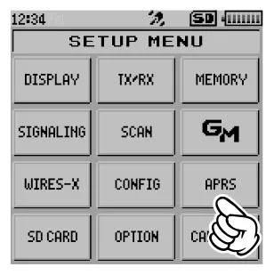</button><figcaption>Figure from page 86</figcaption><dialog id="fig-33"><p>Figure from page 86</p><form method="dialog"><button>Close</button></form></dialog></figure><p>~~<strong>Displaying Position Information of Remote Stations in Digital Mode</strong>~~</p>
<p>With V/D mode of the C4FM digital, the GPS position information is transmitted
simultaneously with voice signals; therefore the direction and position of the remote
station can be displayed in real-time even while communicating.
For details, see “Real-Time Navigation Function” on page 93.</p>
<p>~~<strong>Tip</strong>~~</p>
<p>Even if the GPS function of your station is set to OFF, the position information of the remote station
can be displayed in V/D mode.</p>
<p>~~<strong>Caution</strong>~~</p>
<p>When the GPS function is not active, the remote station cannot display the position information for
your station.</p>
<p><strong>About Positioning by GPS</strong></p>
<p>“Positioning” refers to calculation of your current position from the satellite orbit
information and radio propagation time. At least 3 satellites need to be acquired
for successful positioning. If positioning fails, move away from buildings as far as
possible and stand in an area with open sky.</p>
<p><strong>● About errors</strong>
The measurement environment may result in positioning errors of several hundred
meters. Under favorable conditions, positioning can be performed successfully using
only three satellites. However, under the following poor conditions, the positioning
accuracy can decrease or positioning can fail.</p>
<ul>
<li>
<p>Between tall buildings</p>
</li>
<li>
<p>Narrow paths between buildings</p>
</li>
<li>
<p>Indoors or in close proximity to large buildings</p>
</li>
<li>
<p>Under elevated roads or high voltage power lines</p>
</li>
<li>
<p>Between trees such as in forests or woods</p>
</li>
<li>
<p>Inside a tunnel or underground</p>
</li>
<li>
<p>Through heat reflective glass</p>
</li>
<li>
<p>Areas with strong magnetic fields</p>
</li>
</ul>
<p><strong>● When not in use for a long time</strong>
When using the GPS functions for the first time after purchase, or when it has been
unused in a while, a few minutes may be required to acquire the satellites. Also,
if the GPS function has been turned off for several hours, a few minutes may be
required to search for satellites.</p><p>~~<strong>Saving GPS Information (GPS Log Function)</strong>~~</p>
<p>The GPS position information can automatically be saved periodically onto a microSD
memory card. Using the saved data, tracks can be displayed on commercially available
map software*.</p>
<ul>
<li>Technical support for the map software is not provided by YAESU.
<strong>1</strong> See “Activating the GPS Function” on page 86, and activate the GPS function.</li>
</ul>
<p>The transceiver enters Set mode.
<strong>3</strong> Touch <strong>[CONFIG]</strong> .</p>
<p><strong>4</strong> Touch <strong>[6 GPS LOG]</strong> .</p>
<p><strong>5</strong> Rotate the DIAL to select the GPS data logging interval.
The selectable setting values are as follows. When OFF is set, the position
information is not saved.
OFF / 1 sec / 2 sec / 5 sec / 10 sec / 30 sec / 60 sec
<strong>6</strong> Press .
The GPS log function is activated, and the transceiver exits from Set mode.</p>
<p>~~<strong>Tip</strong>~~</p>
<p>The position information is saved periodically unless “OFF” is selected in step 5 (shown above) or the
power of the transceiver is turned off.
Reselecting the GPS data logging interval in step 5 or turning on the transceiver again, begins saving
the GPS data under a different file name.</p><p>~~<strong>Checking Tracks on Your PC</strong>~~</p>
<p><strong>1</strong> Turn off the transceiver.
<strong>2</strong> Remove the microSD memory card from the transceiver.
<strong>3</strong> Connect the microSD memory card to your PC using a commercially available
memory card reader.
<strong>4</strong> Open the “FT2D” folder in the microSD memory card.
<strong>5</strong> Open the “GPSLOG” folder.
The data is saved as “GPSyymmddhhmmss.log”.
The [yymmddhhmmss] part of the name consists of year (yy), month (mm), day (dd),
hour (hh), minute (mm), and second (ss).</p>
<p>~~<strong>Tips</strong>~~</p>
<ul>
<li>
<p>Tracks can be displayed on the map by importing the data to commercially sold map software.</p>
</li>
<li>
<p>For information on importing, please refer to the operation manual for the map software you use.</p>
</li>
</ul><p>Activating the GPS function displays the following information on the LCD.</p>
<p>①</p>
<p>②</p>
<p>④</p>
<p>⑤</p>
<p>➀ Displays the satellite azimuth and elevation angles. Displays in North-up mode.
➁ Displays the date and time.
➂ Displays the current speed.
➃ Displays the satellite number and reception level.
➄ Displays the latitude on the upper side of the screen whereas displays the longitude</p>
<p>on the lower side of the screen.
The current position appears using north (N) or south (S) latitude.
Display format: X DD° MM. MMM
X: X=N: North latitude, X=S: South latitude, DD: Degree, MM:MMM Minute
Example: N 35° 38.250 (35 degrees, 38 minutes, 15 seconds north latitude)
The current position appears using east (E) or west (S) longitude.
Display format: X DDD° MM. DMMM
X: X=E: East longitude, X=W: West longitude, DDD: Degree, MM:MMM Minute
Example: E 139° 42.500 (139 degrees, 42 minutes, 30 seconds east latitude)
➅ Displays the altitude of the current position “ALTI xxxxm”.
Example: ALTI 20m</p>
<p>~~<strong>Displaying the GPS Information</strong>~~</p>
<p>Follow the steps below to display the GPS information.</p>
<p>Displays the navigation screen.
<strong>2</strong> Touch the compass on the screen.
The GPS data is displayed.</p><p>There are 2 methods of navigation with the Smart Navigation function.</p>
<ul>
<li>
<p>Real-time navigation function</p>
</li>
<li>
<p>Backtrack function</p>
</li>
</ul>
<p>~~<strong>Real-Time Navigation Function</strong>~~</p>
<p>GPS position information and voice signals are simultaneously transmitted in the V/D
mode of C4FM digital. For this reason, the position and direction of the remote station
can be displayed in real time even during communication.</p>
<p>The navigation screen appears.
<strong>2</strong> Touch <strong>[YR]</strong> .
The distance and direction to the remote station operating on the same frequency in
the V/D mode are displayed.</p>
<p>Distance to
remote station</p>
<p>Direction display</p>
<p>The screen returns to the normal frequency display.</p>
<p>~~<strong>Backtrack Function</strong>~~</p>
<p>By registering the point such as the departure point in advance, the distance and
direction to the registered point from your current position can be displayed in real time.</p>
<p><strong>Registering Your Current Position (Departure Point) (up to 3 Positions can Be Registered)</strong></p>
<p>The back track screen appears.</p><p><strong>2</strong> Touch <strong>[MY]</strong> .
Your location information is displayed.</p>
<p><strong>3</strong> Touch <strong>[MEM]</strong> .</p>
<p><strong>[</strong> ★ <strong>]</strong>, <strong>[L1]</strong> and <strong>[L2]</strong> blink.</p>
<p><strong>4</strong> Touch one of the blinking indicators to which you want to
register the position information.
The location information is registered with the selected
indicator, and the screen returns to the back track
screen.</p>
<p>The screen returns to the normal frequency display.</p>
<p><strong>Using the Back Track Function</strong></p>
<p>The back track screen appears.
<strong>2</strong> Touch the indicator (“ ★ ”, “L1” or “L2”) to which you want to register the location
information for back tracking.</p><figure><button aria-label="Enlarge Figure from page 94" class="zoom" data-dialog="fig-34" type="button">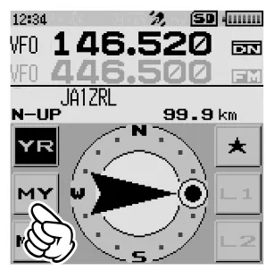</button><figcaption>Figure from page 94</figcaption><dialog id="fig-34"><p>Figure from page 94</p><form method="dialog"><button>Close</button></form></dialog></figure><figure><button aria-label="Enlarge Figure from page 94" class="zoom" data-dialog="fig-35" type="button">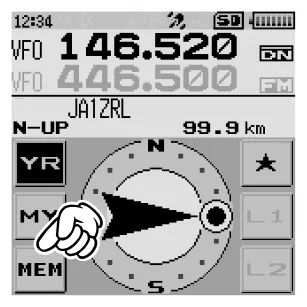</button><figcaption>Figure from page 94</figcaption><dialog id="fig-35"><p>Figure from page 94</p><form method="dialog"><button>Close</button></form></dialog></figure><figure><button aria-label="Enlarge Figure from page 94" class="zoom" data-dialog="fig-36" type="button">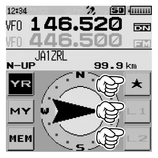</button><figcaption>Figure from page 94</figcaption><dialog id="fig-36"><p>Figure from page 94</p><form method="dialog"><button>Close</button></form></dialog></figure><p>The registered position (departure point) is in the
direction of the arrow within the circle. Follow the arrow
so that the arrow stays pointing up on the screen.</p>
<p>The screen returns to the normal frequency display. To confirm the position again,</p>
<p>~~<strong>Description of the BACK TRACK Function Screen</strong>~~</p>
<p>Direction to the registered position</p><p>The transceiver is equipped with the following 3 types of Dual Receive Functions:</p>
<ul>
<li>
<p>VFO Dual Receive</p>
</li>
<li>
<p>Memory Channel Dual Receive</p>
</li>
<li>
<p>Home Channel Dual Receive</p>
</li>
</ul>
<p>The transceiver checks signals over the frequency registered to the selected memory
channel (Priority Memory Channel) once approximately every 5 seconds. When the
transceiver detects signals, it starts signal reception on the selected memory channel.</p>
<p>While receiving a signal on the frequency registered to a priority memory channel,
pressing disables the Dual Receive function and allows transmission over the same
frequency.</p>
<p>Example: Checking the priority memory channel “90” (446.500 MHz), while receiving
“146.520 MHz”</p>
<p>Frequency being received</p>
<p>The transceiver monitors signals on
the frequency registered to the Priority
Memory Channel “90” (446.500 MHz),
once approximately every 5 seconds.</p>
<p>When the transceiver receives a signal
on the frequency registered to the
priority memory channel “90”, dual
reception stops and signal receiver
switches to “90” (446.500 MHz).</p><p>~~<strong>VFO Dual Receive</strong>~~</p>
<p>~~<strong>VFO mode → Priority memory channel</strong>~~</p>
<p><strong>2</strong> Touch <strong>[F MW]</strong> for over one second.
The memory registration mode is enabled, and the channel number blinks.
<strong>3</strong> Rotate the DIAL to select the desired memory channel.
<strong>4</strong> Touch <strong>[PRI.CH]</strong> .
The memory channel to preferentially receive
(Priority Memory Channel) is selected. The “P”
appears on the LCD.</p>
<p><strong>6</strong> Select the frequency you want to constantly monitor.
<strong>7</strong> Touch <strong>[F MW]</strong> .
<strong>8</strong> Touch <strong>[DW]</strong> .
The Dual Reception starts and “VDW” appears on
the LCD.</p>
<p><strong>9</strong> Touch <strong>[STOP]</strong> .
The Dual Reception is canceled.</p><figure><button aria-label="Enlarge Figure from page 97" class="zoom" data-dialog="fig-37" type="button">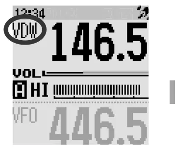</button><figcaption>Figure from page 97</figcaption><dialog id="fig-37"><p>Figure from page 97</p><form method="dialog"><button>Close</button></form></dialog></figure><p>~~<strong>Memory Channel Dual Receive</strong>~~</p>
<p>~~<strong>Memory channel → Priority memory channel</strong>~~</p>
<p><strong>2</strong> Touch <strong>[F MW]</strong> for over one second.
The memory registration mode is enabled, and the channel number blinks.
<strong>3</strong> Rotate the DIAL to select the desired memory channel.
<strong>4</strong> Touch <strong>[PRI.CH]</strong> .
The memory channel to preferentially receive (Priority Memory Channel) is selected.
The “P” appears on the LCD.
<strong>5</strong> Select the memory channel you want to constantly receive.
<strong>6</strong> Touch <strong>[F MW]</strong> .
<strong>7</strong> Touch <strong>[DW]</strong> .
The HOME Channel Dual Reception starts and “MDW”
appears on the LCD.</p>
<p><strong>8</strong> Touch <strong>[STOP]</strong> .
The Memory Channel Dual Receive is canceled.</p>
<p>~~<strong>Home Channel Dual Receive</strong>~~</p>
<p>~~<strong>Home channel → Priority memory channel</strong>~~</p>
<p><strong>2</strong> Touch <strong>[F MW]</strong> for over one second.
The memory registration mode is enabled, and the channel number blinks.
<strong>3</strong> Rotate the DIAL to select the desired memory channel.
<strong>4</strong> Touch <strong>[PRI.CH]</strong> .
The memory channel to preferentially receive (Priority Memory Channel) is selected.
The “P” appears on the LCD.
<strong>5</strong> Touch <strong>[F MW]</strong> .
The function screen appears.</p><p><strong>6</strong> Touch <strong>[HOME]</strong> .
The HOME channel is recalled.</p>
<p><strong>7</strong> Touch <strong>[F MW]</strong> .
<strong>8</strong> Touch <strong>[DW]</strong> .
The HOME Channel Dual Receive starts and “HDW”
appears on the LCD.</p>
<p><strong>9</strong> Touch <strong>[STOP]</strong> .</p>
<p>The HOME Channel Dual Receive is canceled.</p><figure><button aria-label="Enlarge Figure from page 99" class="zoom" data-dialog="fig-38" type="button">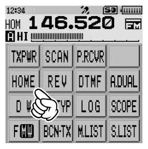</button><figcaption>Figure from page 99</figcaption><dialog id="fig-38"><p>Figure from page 99</p><form method="dialog"><button>Close</button></form></dialog></figure><figure><button aria-label="Enlarge Figure from page 99" class="zoom" data-dialog="fig-39" type="button">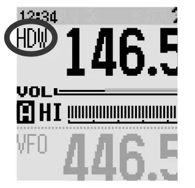</button><figcaption>Figure from page 99</figcaption><dialog id="fig-39"><p>Figure from page 99</p><form method="dialog"><button>Close</button></form></dialog></figure><p><strong>Frequency Channels While Listening to Broadcast Radio)</strong></p>
<p>The AF-DUAL Receive Function allows reception of a radio broadcast during standby
reception of A-band or B-band frequency (or frequency registered to a memory
channel). When standby reception is active, no audio is heard on the standby frequency,
however if a voice signal is detected, the reception of the broadcast radio will be
paused, and the receiver frequency will be heard.
Dual Receive ( see page 96) is a similar function. When using the Dual Receive
function, every time the transceiver checks for a signal on the specified memory
channel during radio reception, the radio reception is interrupted (approximately every 5
seconds). When using the AF-DUAL Receive Function, the radio reception is interrupted
only when there is a calling signal from another transceiver.</p>
<p>~~<strong>Listening to a Radio Broadcast Using the AF-DUAL Receive</strong>~~
~~<strong>Function</strong>~~</p>
<p><strong>1</strong> Set the A-band or B-band frequency (or Memory Channel/Home Channel) for
standby receive during broadcast radio reception.</p>
<p>receive mode.</p>
<p>operating band.</p>
<p><strong>3</strong> Touch <strong>[F MW]</strong> .
The function screen appears.
<strong>4</strong> Touch <strong>[A.DUAL]</strong> .
The AF-DUAL function is activated.</p><figure><button aria-label="Enlarge Figure from page 100" class="zoom" data-dialog="fig-40" type="button">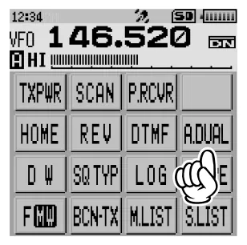</button><figcaption>Figure from page 100</figcaption><dialog id="fig-40"><p>Figure from page 100</p><form method="dialog"><button>Close</button></form></dialog></figure><p>wave band) and FM broadcast.</p><p><strong>2</strong> Touch <strong>[TX/RX]</strong> .</p>
<p><strong>3</strong> Touch <strong>[3 AUDIO]</strong> .</p>
<p><strong>4</strong> Touch <strong>[3 RX AF DUAL]</strong> .
<strong>5</strong> Rotate the DIAL to select the time from one of the following options for receiving
radio broadcast simultaneously.
Transmission and reception for 1 second to 10 seconds/HOLD (Fixed)/
transmission for 1 second to 10 seconds</p>
<p>~~<strong>Remark</strong>~~ The default setting: transmission and reception for 2 seconds</p>
<p><strong>6</strong> Press</p><figure><button aria-label="Enlarge Figure from page 102" class="zoom" data-dialog="fig-41" type="button">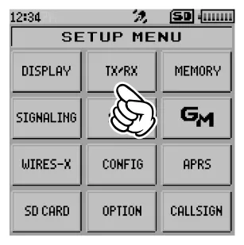</button><figcaption>Figure from page 102</figcaption><dialog id="fig-41"><p>Figure from page 102</p><form method="dialog"><button>Close</button></form></dialog></figure><p>DTMF (Dual Tone Multi Frequencies) are the tone signals sent to make telephone calls,
or control repeaters and network links. Up to 10 registers of 16-digit DTMF tone codes
can be stored as telephone numbers to make calls through the public telephone network
using a phone patch.</p>
<p>~~<strong>Setting the DTMF Memory</strong>~~</p>
<p>The transceiver enters Set mode.
<strong>2</strong> Touch <strong>[SIGNALING]</strong> .</p>
<p><strong>3</strong> Touch <strong>[5 DTMF SELECT]</strong> .</p>
<p><strong>4</strong> Rotate the DIAL to select the desired channel (1 to 10) to</p><figure><button aria-label="Enlarge Figure from page 103" class="zoom" data-dialog="fig-42" type="button">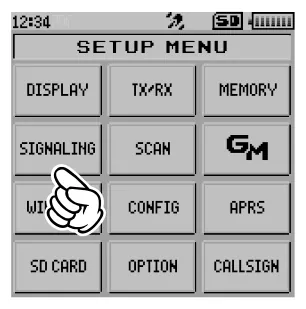</button><figcaption>Figure from page 103</figcaption><dialog id="fig-42"><p>Figure from page 103</p><form method="dialog"><button>Close</button></form></dialog></figure><figure><button aria-label="Enlarge Figure from page 103" class="zoom" data-dialog="fig-43" type="button">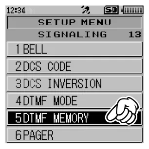</button><figcaption>Figure from page 103</figcaption><dialog id="fig-43"><p>Figure from page 103</p><form method="dialog"><button>Close</button></form></dialog></figure><figure><button aria-label="Enlarge Figure from page 103" class="zoom" data-dialog="fig-44" type="button">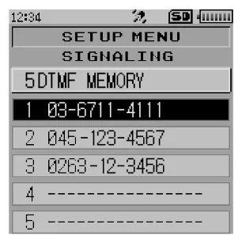</button><figcaption>Figure from page 103</figcaption><dialog id="fig-44"><p>Figure from page 103</p><form method="dialog"><button>Close</button></form></dialog></figure><p><strong>5</strong> Input the DTMF code using the numeric keypad.</p>
<p>~~<strong>Tip</strong>~~ Up to 16 characters (including symbols) can be input as a</p>
<p>DTMF code.</p>
<p><strong>6</strong> Press .
The DTMF code is set, and the transceiver exits from Set mode.</p>
<p>~~<strong>Transmitting the Registered DTMF Code</strong>~~</p>
<p>The transceiver enters Set mode.
<strong>2</strong> Touch <strong>[SIGNALING]</strong> .
<strong>3</strong> Touch <strong>[4 DTMF MODE]</strong> .</p>
<p><strong>5</strong> Rotate the DIAL to select <strong>[AUTO]</strong> .
<strong>6</strong> Press .
The auto dialer is enabled.
<strong>7</strong> Press .
Displays <strong>[DTMF]</strong> .
<strong>8</strong> While pressing and holding, touch <strong>[DTMF]</strong> .
Displays the numeric keypad screen.
<strong>9</strong> Use the numeric keypad to input the channel number of the DTMF memory you want
to transmit.</p>
<p>~~<strong>Tips</strong>~~   - The registered DTMF code is transmitted.</p>
<pre><code> - The transmitted DTMF audio can be heard from the speaker.
</code></pre>
<p><strong>10</strong> Release .
E ft l i th t i i ti til th DTMF d</p><figure><button aria-label="Enlarge Figure from page 104" class="zoom" data-dialog="fig-45" type="button">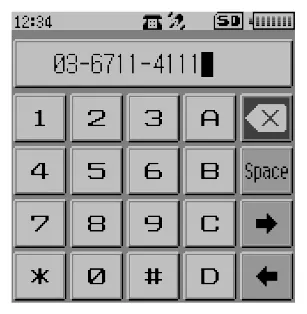</button><figcaption>Figure from page 104</figcaption><dialog id="fig-45"><p>Figure from page 104</p><form method="dialog"><button>Close</button></form></dialog></figure><p>~~<strong>Manually Transmitting the DTMF Code</strong>~~</p>
<p>The transceiver enters the Set mode.
<strong>2</strong> Touch <strong>[SIGNALING]</strong> .
<strong>3</strong> Touch <strong>[4 DTMF MODE]</strong> .</p>
<p><strong>5</strong> Rotate the DIAL to select <strong>[MANUAL]</strong> .
<strong>6</strong> Press .
The transceiver is ready for transmitting the DTMF code manually.
<strong>7</strong> Press .</p>
<p><strong>[DTMF]</strong> appears on the LCD.
<strong>8</strong> While pressing, touch <strong>[DTMF]</strong> .
The numeric keypad appears.
<strong>9</strong> Use the numeric keypad to input the DTMF code.</p>
<p>~~<strong>Tips</strong>~~   - The registered DTMF code is transmitted (Refer to the following table).</p>
<pre><code> - The transmitted DTMF sound can be heard from the speaker.
</code></pre>
<p><strong>10</strong> Release .
Even after releasing, the transmission continues until the DTMF signal
transmission is completed.</p>
<p>~~<strong>Tip</strong>~~</p>
<p>The DTMF code is a combination of 2 frequencies.</p>
<table>
<thead>
<tr>
<th>Col1</th>
<th>1209Hz</th>
<th>1336Hz</th>
<th>1477Hz</th>
<th>1633Hz</th>
</tr>
</thead>
<tbody>
<tr>
<td>697Hz</td>
<td>1</td>
<td>2</td>
<td>3</td>
<td>A</td>
</tr>
<tr>
<td>770Hz</td>
<td>4</td>
<td>5</td>
<td>6</td>
<td>B</td>
</tr>
<tr>
<td>852Hz</td>
<td>7</td>
<td>8</td>
<td>9</td>
<td>C</td>
</tr>
<tr>
<td>941Hz</td>
<td></td>
<td>0</td>
<td>#</td>
<td>D</td>
</tr>
</tbody>
</table><p><strong>Band Scope Function</strong></p>
<p>The Spectrum Analyzer presents a view of operating activity on channels above and
below the current main band operating frequency as the center (marked with ▼).
<strong>1</strong> Rotate the DIAL to tune in to the desired center frequency.
<strong>2</strong> Touch <strong>[F MW]</strong> .
Touch <strong>[SCOPE]</strong> .
With the current frequency in the center, the signal
strengths of 35 channels (+/-16 channels) bandwidth are
shown on a graph.</p>
<p><strong>3</strong> Rotate the DIAL to move ▼ to a signal.
The signal at the center of the displayed graph becomes the operating frequency.
<strong>4</strong> Touch <strong>[STOP]</strong> .
The band scope scanning stops.</p>
<p>~~<strong>Tip</strong>~~ To resume band scope scanning, touch <strong>[SRCH]</strong> .</p><p><strong>Microphone   Snapshot Function</strong></p>
<p>Pictures can be taken by connecting the optional camera-mounted speaker microphone
(MH-85A11U).
Captured image data can be saved onto a microSD memory card inserted in the
transceiver.
The saved data can be displayed on the screen and transmitted to other transceivers*
as well.
In addition, the most recently captured image data can be transmitted to other transceivers*</p>
<ul>
<li>Refer to the Yaesu website or catalog for the transceiver models to which images can be
transferred.</li>
</ul>
<p><strong>1</strong> Press and hold for over one second to turn off the transceiver.
<strong>2</strong> Connect the camera-mounted speaker microphone (MH-85A11U) to the transceiver.</p>
<p>~~<strong>Tip</strong>~~ Connect the connector to the DATA terminal of the transceiver.
<strong>3</strong> Press and hold for over one second to turn on the transceiver.</p>
<p>~~<strong>Caution</strong>~~</p>
<p>When receiving an AM radio broadcast signal with the camera microphone connected, noise may
occur, but this is not a malfunction.</p>
<p>Make sure to keep at least 50 cm distance between the lens and the object. If the</p><p><strong>[1 USB CAMERA]</strong>, you can set the picture size (resolution) and image quality (compression
rate).</p>
<pre><code> - Captured images are saved onto the microSD memory card inserted in the transceiver.

  - If your station and the remote station are both in digital mode, you can transfer the image data
</code></pre>
<p>~~<strong>Cautions</strong>~~</p>
<p>yy Do not directly photograph objects with strong light, such as the sun or other bright objects. Doing so</p>
<p>can cause malfunction.
yy If the lens or the microphone gets dirty, use a dry, soft cloth to wipe off the contaminants.</p>
<p>yy Do not place the MH-85A11U near heat emitting equipment or where it is exposed to direct sunlight.</p>
<p>Doing so can cause fire or a malfunction.
yy Be careful not to drop the MH-85A11U. Applying a strong shock may result in damages or failure.</p>
<p>The captured image appears on the LCD.
<strong>5</strong> To save the image onto the microSD memory card, touch <strong>[SAVE]</strong> .</p>
<p>screen without saving the image.
<strong>6</strong> After saving the image, to transmit the image to other transceivers, touch <strong>[SEND]</strong> .
<strong>7</strong> Touch <strong>[OK]</strong> to return the display to the previous operating screen.</p>
<p>~~<strong>Viewing the Saved Image</strong>~~</p>
<p><strong>1</strong> Touch <strong>[F MW]</strong> on the normal operation screen.
<strong>2</strong> Touch <strong>[LOG]</strong> .
<strong>3</strong> Touch <strong>[PICT]</strong> .
Displays the saved image data list.
<strong>4</strong> Touch the image you want to display.
Displays the selected image.</p>
<p>~~<strong>Transmitting the Saved Image to Other Transceivers</strong>~~</p>
<p><strong>1</strong> Touch <strong>[F MW]</strong> on the normal operation screen.
<strong>2</strong> Touch <strong>[LOG]</strong> .
<strong>3</strong> Touch <strong>[PICT]</strong> .
Displays the saved image data list.
<strong>4</strong> Touch the image you want to transmit.
Displays the selected image.
<strong>5</strong> Touch <strong>[SEND]</strong> or <strong>[FWD]</strong> .
Starts transmission. When transmission completes, the screen returns to the screen
in step 3</p><p>The tone squelch opens the speaker audio only when a signal containing the specified
CTCSS tone is received. Using the digital code squelch (DCS) opens the speaker audio
only when a signal containing the specified DCS code is received. When the tone squelch
function is active, signals from other stations not containing the specified code are not
heard. The receiver will be quiet while waiting for a call from a specific station over a long
period of time.</p>
<p><strong>2</strong> Touch <strong>[SIGNALING]</strong> .</p>
<p><strong>3</strong> Touch <strong>[11 SQL TYPE]</strong> .
<strong>4</strong> Rotate the DIAL to select the desired squelch type.
<strong>5</strong> Press .
The selected squelch type is set and the transceiver exits from Set mode.</p><table>
<thead>
<tr>
<th>Display</th>
<th>Col2</th>
<th>Operation</th>
<th>Col4</th>
<th>Col5</th>
</tr>
</thead>
<tbody>
<tr>
<td>OFF</td>
<td>OFF</td>
<td>Deactivates transmit/ receive tone squelch function, etc.</td>
<td>Deactivates transmit/ receive tone squelch function, etc.</td>
<td>Deactivates transmit/ receive tone squelch function, etc.</td>
</tr>
<tr>
<td>TONE</td>
<td>TONE</td>
<td>Activates CTCSS transmit tones ([TN] appears).</td>
<td>Activates CTCSS transmit tones ([TN] appears).</td>
<td>Activates CTCSS transmit tones ([TN] appears).</td>
</tr>
<tr>
<td>TONE SQL</td>
<td>TONE SQL</td>
<td>Activates the tone squelch receive function ([TSQ] appears).</td>
<td>Activates the tone squelch receive function ([TSQ] appears).</td>
<td>Activates the tone squelch receive function ([TSQ] appears).</td>
</tr>
<tr>
<td>DCS</td>
<td>DCS</td>
<td>Activates the digital code squelch ([DCS] appears).</td>
<td>Activates the digital code squelch ([DCS] appears).</td>
<td>Activates the digital code squelch ([DCS] appears).</td>
</tr>
<tr>
<td>REV TONE</td>
<td>REV TONE</td>
<td>Activates the reverse tone ([RTN] appears).</td>
<td></td>
<td></td>
</tr>
<tr>
<td>Use to monitor communications based on the squelch control system in which</td>
<td></td>
<td></td>
<td></td>
<td></td>
</tr>
<tr>
<td>a tone signal is contained when communication is not performed and the tone</td>
<td></td>
<td></td>
<td></td>
<td></td>
</tr>
<tr>
<td>signal disappears when communication starts.</td>
<td>Activates the reverse tone ([RTN] appears).</td>
<td></td>
<td></td>
<td></td>
</tr>
<tr>
<td>Use to monitor communications based on the squelch control system in which</td>
<td></td>
<td></td>
<td></td>
<td></td>
</tr>
<tr>
<td>a tone signal is contained when communication is not performed and the tone</td>
<td></td>
<td></td>
<td></td>
<td></td>
</tr>
<tr>
<td>signal disappears when communication starts.</td>
<td>Activates the reverse tone ([RTN] appears).</td>
<td></td>
<td></td>
<td></td>
</tr>
<tr>
<td>Use to monitor communications based on the squelch control system in which</td>
<td></td>
<td></td>
<td></td>
<td></td>
</tr>
<tr>
<td>a tone signal is contained when communication is not performed and the tone</td>
<td></td>
<td></td>
<td></td>
<td></td>
</tr>
<tr>
<td>signal disappears when communication starts.</td>
<td></td>
<td></td>
<td></td>
<td></td>
</tr>
<tr>
<td>PR FREQ</td>
<td>PR FREQ</td>
<td>Activates the no-communication squelch function for radios ([PR] appears).</td>
<td></td>
<td></td>
</tr>
<tr>
<td>You can specify no-communication signal tone frequencies within the range from</td>
<td></td>
<td></td>
<td></td>
<td></td>
</tr>
<tr>
<td>300 Hz to 3000 Hz in steps of 100 Hz.</td>
<td>Activates the no-communication squelch function for radios ([PR] appears).</td>
<td></td>
<td></td>
<td></td>
</tr>
<tr>
<td>You can specify no-communication signal tone frequencies within the range from</td>
<td></td>
<td></td>
<td></td>
<td></td>
</tr>
<tr>
<td>300 Hz to 3000 Hz in steps of 100 Hz.</td>
<td>Activates the no-communication squelch function for radios ([PR] appears).</td>
<td></td>
<td></td>
<td></td>
</tr>
<tr>
<td>You can specify no-communication signal tone frequencies within the range from</td>
<td></td>
<td></td>
<td></td>
<td></td>
</tr>
<tr>
<td>300 Hz to 3000 Hz in steps of 100 Hz.</td>
<td></td>
<td></td>
<td></td>
<td></td>
</tr>
<tr>
<td>PAGER (</td>
<td></td>
<td></td>
<td></td>
<td></td>
</tr>
<tr>
<td>see page</td>
<td></td>
<td></td>
<td></td>
<td></td>
</tr>
<tr>
<td>116)</td>
<td>PAGER (</td>
<td></td>
<td></td>
<td></td>
</tr>
<tr>
<td>see page</td>
<td></td>
<td></td>
<td></td>
<td></td>
</tr>
<tr>
<td>116)</td>
<td>Activates a new pager function ([PAG] appears).</td>
<td></td>
<td></td>
<td></td>
</tr>
<tr>
<td>When communicating via transceivers with your friends, specify personal codes</td>
<td></td>
<td></td>
<td></td>
<td></td>
</tr>
<tr>
<td>(each code is composed of two tones) so that you can call only specific stations.</td>
<td>Activates a new pager function ([PAG] appears).</td>
<td></td>
<td></td>
<td></td>
</tr>
<tr>
<td>When communicating via transceivers with your friends, specify personal codes</td>
<td></td>
<td></td>
<td></td>
<td></td>
</tr>
<tr>
<td>(each code is composed of two tones) so that you can call only specific stations.</td>
<td>Activates a new pager function ([PAG] appears).</td>
<td></td>
<td></td>
<td></td>
</tr>
<tr>
<td>When communicating via transceivers with your friends, specify personal codes</td>
<td></td>
<td></td>
<td></td>
<td></td>
</tr>
<tr>
<td>(each code is composed of two tones) so that you can call only specific stations.</td>
<td></td>
<td></td>
<td></td>
<td></td>
</tr>
<tr>
<td>D CD*</td>
<td>D CD*</td>
<td>Sends a DCS code only for transmission ([DC] appears).</td>
<td>Sends a DCS code only for transmission ([DC] appears).</td>
<td>Sends a DCS code only for transmission ([DC] appears).</td>
</tr>
<tr>
<td>TONE-DCS*</td>
<td>TONE-DCS*</td>
<td>Sends a tone signal when transmitting, and waits for a DCS code when receiving</td>
<td></td>
<td></td>
</tr>
<tr>
<td>([T-D] appears).</td>
<td>Sends a tone signal when transmitting, and waits for a DCS code when receiving</td>
<td></td>
<td></td>
<td></td>
</tr>
<tr>
<td>([T-D] appears).</td>
<td>Sends a tone signal when transmitting, and waits for a DCS code when receiving</td>
<td></td>
<td></td>
<td></td>
</tr>
<tr>
<td>([T-D] appears).</td>
<td></td>
<td></td>
<td></td>
<td></td>
</tr>
<tr>
<td>D CD-TONE SQL*</td>
<td></td>
<td></td>
<td></td>
<td></td>
</tr>
<tr>
<td>D CD-TONE SQL*</td>
<td></td>
<td></td>
<td></td>
<td></td>
</tr>
<tr>
<td>Sends a DCS code when transmitting, and waits for a tone signal when receiving</td>
<td></td>
<td></td>
<td></td>
<td></td>
</tr>
<tr>
<td>([D-T] appears).</td>
<td></td>
<td></td>
<td></td>
<td></td>
</tr>
<tr>
<td>Sends a DCS code when transmitting, and waits for a tone signal when receiving</td>
<td></td>
<td></td>
<td></td>
<td></td>
</tr>
<tr>
<td>([D-T] appears).</td>
<td></td>
<td></td>
<td></td>
<td></td>
</tr>
<tr>
<td>Sends a DCS code when transmitting, and waits for a tone signal when receiving</td>
<td></td>
<td></td>
<td></td>
<td></td>
</tr>
<tr>
<td>([D-T] appears).</td>
<td></td>
<td></td>
<td></td>
<td></td>
</tr>
<tr>
<td></td>
<td></td>
<td></td>
<td></td>
<td></td>
</tr>
<tr>
<td>*: Press and hold the</td>
<td></td>
<td></td>
<td></td>
<td>key for over one second, then set<strong>[SIGNALING]</strong> →<strong>[10 SQL EXPANSION]</strong> to</td>
</tr>
</tbody>
</table>
<p>ON. The setting options for D CD, TONE-DCS and D CD TONE SQL are added to the <strong>[SIGNALING]</strong> → <strong>[11</strong>
<strong>SQL TYPE]</strong> in Set mode. This allows specifying the squelch types for transmit and receive respectively.</p>
<p>~~<strong>Setting the Tone Frequency</strong>~~</p>
<p>The tone frequency can be selected from 50 frequencies (from 67.0 Hz to 254.1 Hz).</p>
<p>The transceiver enters Set mode.
<strong>2</strong> Touch <strong>[SIGNALING]</strong> .
<strong>3</strong> Rotate the dial, then touch <strong>[12 TONE SQL FREQ]</strong> .</p><p><strong>4</strong> Rotate the dial to select the desired tone frequency.</p>
<p>The selected tone frequency is set and the transceiver exits from Set mode.</p>
<p>~~<strong>Tips</strong>~~</p>
<ul>
<li>
<p>The tone frequency set by following the procedure above is also effective when tones are only
transmitted.</p>
</li>
<li>
<p>The default setting is 100 Hz.</p>
</li>
</ul>
<p>~~<strong>Searching for the CTCSS Tone transmitted by the Remote Station</strong>~~</p>
<p>Search and display the tone squelch CTCSS tone transmitted by the remote station.</p>
<p>The transceiver enters Set mode.
<strong>2</strong> Touch <strong>[SIGNALING]</strong> .
<strong>3</strong> Rotate the DIAL, then touch <strong>[11 SQL TYPE]</strong> .
<strong>4</strong> Rotate the DIAL to select [TONE SQL].</p>
<p><strong>6</strong> Rotate the DIAL, then touch <strong>[12 TONE SQL FREQ]</strong> .
<strong>7</strong> Receive the signal from the remote station.
<strong>8</strong> Touch [SRCH].
The transceiver begins searching for a matching tone frequency
When a corresponding tone frequency is detected, a beep sound is emitted and
searching stops temporarily. The detected tone frequency blinks.</p>
<p>~~<strong>Tip</strong>~~ To set CTCSS to the detected tone frequency,</p>
<p>The transceiver exits from Set mode.</p>
<p>~~<strong>Tip</strong>~~</p>
<p>To set the transceiver operation when scanning stops, see “Setting the Receive Operation When
Scanning Stops” on page 74.</p><p>~~<strong>Setting the DCS Code</strong>~~</p>
<p>The DCS code can be selected from 104 types (from 023 to 754).</p>
<p>The transceiver enters Set mode.
<strong>2</strong> Touch <strong>[SIGNALING]</strong> .
<strong>3</strong> Touch <strong>[2 DCS CODE]</strong> .</p>
<p><strong>4</strong> Rotate the DIAL to select the desired DCS code.</p>
<p>The DCS code is set and the transceiver exits from Set mode.</p>
<p>~~<strong>Tip</strong>~~</p>
<p>The default setting is [023].</p>
<p>~~<strong>Searching for the DCS Code Used by the Remote Station</strong>~~</p>
<p>Search and display the DCS code used by the remote station.</p>
<p>The transceiver enters Set mode.
<strong>2</strong> Touch <strong>[SIGNALING]</strong> .
<strong>3</strong> Touch <strong>[2 DCS CODE]</strong> .</p><figure><button aria-label="Enlarge Figure from page 112" class="zoom" data-dialog="fig-46" type="button">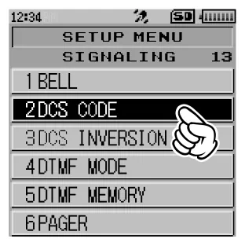</button><figcaption>Figure from page 112</figcaption><dialog id="fig-46"><p>Figure from page 112</p><form method="dialog"><button>Close</button></form></dialog></figure><figure><button aria-label="Enlarge Figure from page 112" class="zoom" data-dialog="fig-47" type="button">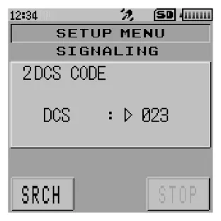</button><figcaption>Figure from page 112</figcaption><dialog id="fig-47"><p>Figure from page 112</p><form method="dialog"><button>Close</button></form></dialog></figure><p><strong>4</strong> Touch <strong>[SRCH]</strong> .</p>
<p>[DCS SEARCH] appears on the LCD.
The transceiver starts to search for the DCS code.
When a corresponding DCS code is detected, a beep is
emitted and searching stops temporarily. The detected
DCS code blinks.</p>
<p>~~<strong>Tip</strong>~~ To stop searching, touch <strong>[STOP]</strong> .</p>
<p>~~<strong>Tip</strong>~~ To set the searched DCS code,</p>
<p>The transceiver exits from Set mode.</p>
<p>~~<strong>Tip</strong>~~</p>
<p>For setting how the transceiver operates when scanning stops, see “Setting the Receive Operation
When Scanning Stops” on page 74.</p>
<p>~~<strong>Notification of a Call from a Remote Station by Vibration</strong>~~</p>
<p>Set the vibrator to alert you of a call from a remote station containing a corresponding
tone or DCS code.</p>
<p>The transceiver enters Set mode.
<strong>2</strong> Touch <strong>[CONFIG]</strong> .</p>
<p><strong>3</strong> Touch <strong>[22 VIBRATOR]</strong> .</p>
<p><strong>5</strong> Rotate the DIAL to select [SIGNALING].
<strong>6</strong> Press .
The vibrator setting is set and the transceiver exits from the Set mode.</p>
<p>~~<strong>Tip</strong>~~ To deactivate the vibrator function, select [OFF] in step 5.</p><p><strong>Selecting the Vibrator Operation Mode</strong></p>
<p>The transceiver enters Set mode.
<strong>2</strong> Touch <strong>[CONFIG]</strong> .</p>
<table>
<thead>
<tr>
<th>Remark The</th>
<th>e default setting: PATTERN1</th>
</tr>
</thead>
<tbody>
<tr>
<td>PATTERN1</td>
<td>The vibrator functions continuously.</td>
</tr>
<tr>
<td>PATTERN2</td>
<td>The vibrator functions at long intervals.</td>
</tr>
<tr>
<td>PATTERN3</td>
<td>The vibrator functions at short intervals.</td>
</tr>
</tbody>
</table>
<p><strong>6</strong> Press .
The selected vibrator operation is set and the transceiver exits from Set mode.</p>
<p>~~<strong>Notification of a Call from a Remote Station by the</strong>~~
~~<strong>Bell Function</strong>~~</p>
<p>Set the Bell sound to alert you of a call from a remote station containing a corresponding</p>
<p>The transceiver enters Set mode.
<strong>2</strong> Touch <strong>[SIGNALING]</strong> .
<strong>3</strong> Touch <strong>[1 BELL]</strong> .</p><p><strong>4</strong> Rotate the DIAL to select <strong>[SELECT]</strong>, then press the
key.</p>
<p><strong>5</strong> Rotate the DIAL to select <strong>[BELL]</strong> .
<strong>6</strong> Press .
The Bell function is activated to on and the transceiver exits from Set mode.</p>
<p>~~<strong>Tip</strong>~~ To deactivate the Bell function, select [OFF] in step 5.</p>
<p><strong>Changing the Number of Times the Bell Rings</strong></p>
<p>The transceiver enters Set mode.
<strong>2</strong> Touch <strong>[SIGNALING]</strong> .
<strong>3</strong> Touch <strong>[1 BELL]</strong> .</p>
<p><strong>5</strong> Rotate the DIAL to select the desired number of times the Bell rings.</p>
<p>~~<strong>Remark</strong>~~ The default setting: Once</p>
<p>~~<strong>Tip</strong>~~ You can select the number of times the bell rings from among 1 to 20 times, or continuous.
<strong>6</strong> Press .
The setting is applied and the transceiver exits from Set mode.</p><p>When using the transceivers with your friends, specifying personal codes (each code
composed of two CTCSS tones) allows you to call just a specific station. Even when
the person who is called is not near his or her transceiver, the information on the LCD
indicates that a call was received.</p>
<p>~~<strong>Caution</strong>~~</p>
<p>The new pager function does not function in digital mode. Touch <strong>[MODE]</strong> to switch the communication
mode to AMS (Automatic Mode Select Function) or analog mode in advance.</p>
<p>Three individuals A, B, and C, Mr. C sends the personal
each using a transceiver. code of Mr. B.</p>
<p>~~<strong>Flow of Operation to Use the Pager Function</strong>~~</p>
<p>Only Mr. B is called.</p>
<p>~~<strong>Setting the Code for Your Station</strong>~~</p>
<p>Set the personal code (your code) to be called by other stations.</p>
<p>The transceiver enters Set mode.
<strong>2</strong> Touch <strong>[SIGNALING]</strong> .</p><figure><button aria-label="Enlarge Figure from page 116" class="zoom" data-dialog="fig-48" type="button">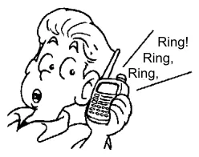</button><figcaption>Figure from page 116</figcaption><dialog id="fig-48"><p>Figure from page 116</p><form method="dialog"><button>Close</button></form></dialog></figure><figure><button aria-label="Enlarge Figure from page 116" class="zoom" data-dialog="fig-49" type="button">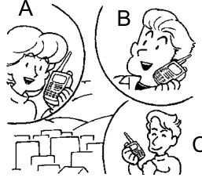</button><figcaption>Figure from page 116</figcaption><dialog id="fig-49"><p>Figure from page 116</p><form method="dialog"><button>Close</button></form></dialog></figure><figure><button aria-label="Enlarge Figure from page 116" class="zoom" data-dialog="fig-50" type="button"></button><figcaption>Figure from page 116</figcaption><dialog id="fig-50"><p>Figure from page 116</p><form method="dialog"><button>Close</button></form></dialog></figure><p><strong>3</strong> Touch <strong>[6 PAGER]</strong> .</p>
<p><strong>5</strong> Rotate the DIAL to select the first element of the code from 1 to 50, then press the
key.
The cursor moves.
<strong>6</strong> Rotate the DIAL to select the second element of the code from 1 to 50, then press the
key.</p>
<p>~~<strong>Caution</strong>~~ The same code cannot be use for both elements.
<strong>7</strong> Press .
Your station code is set and the transceiver exits from Set mode.</p>
<p>~~<strong>Tips</strong>~~   - The default setting: [05 47]</p>
<pre><code>  - Even if the first and second parts of your personal code are reversed, i.e., [47 05] from [05 47]
</code></pre>
<p>they are still recognized as the same code.</p>
<pre><code>  - If the same code is specified for all individuals, all the individuals can be called at the same
</code></pre>
<p>time.</p>
<p>~~<strong>Activating the New Pager Function</strong>~~</p>
<p>The transceiver enters Set mode.
<strong>2</strong> Touch <strong>[SIGNALING]</strong> .
<strong>3</strong> Rotate the DIAL, then touch <strong>[11 SQL TYPE]</strong> .
<strong>4</strong> Rotate the DIAL to select [PAGER].
<strong>5</strong> Press .
The new pager function is activated and the transceiver exits from Set mode.
You are ready to make a call, or wait for a call from a remote station, using the new
pager function.</p>
<p>~~<strong>Calling a Specific Station</strong>~~</p>
<p><strong>1</strong> See “Activating the New Pager Function” on page 117to activate the new pager
function.
<strong>2</strong> Press and hold the key for over one second</p><p><strong>3</strong> Touch <strong>[SIGNALING]</strong> .
<strong>4</strong> Touch <strong>[6 New Pager Function]</strong> .</p>
<p><strong>6</strong> Rotate the DIAL to select the first element of the code used by the remote station, then</p>
<p>~~<strong>Caution</strong>~~ Register the pager code of the remote station in advance.
The cursor moves.
<strong>7</strong> Rotate the DIAL to select the second element of the code used by the remote station,</p>
<p><strong>8</strong> Press .
The code is set and the transceiver exits from Set mode.
<strong>9</strong> Press .
The remote station is called.</p>
<p>~~<strong>Being Called by the Remote Station (Standby Operation)</strong>~~</p>
<p>If you turn on the Bell Function ( see page 114), you are alerted to a call from the</p>
<p>turn on the vibrator function ( see page 113), the vibrator can alert you that you have
been called by the remote station.</p>
<p>Blinks</p>
<p>When called</p><figure><button aria-label="Enlarge Figure from page 118" class="zoom" data-dialog="fig-51" type="button">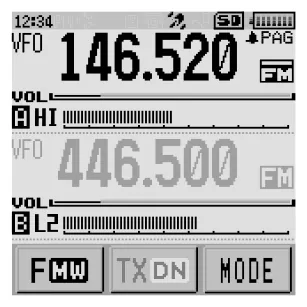</button><figcaption>Figure from page 118</figcaption><dialog id="fig-51"><p>Figure from page 118</p><form method="dialog"><button>Close</button></form></dialog></figure><p>Set Mode allows selecting various functions from the list and setting each function
according individual preferences.</p>
<p>~~<strong>Set Mode Operation</strong>~~</p>
<p>The transceiver enters Set mode.</p>
<p><strong>2</strong> Touch the desired item in SETUP MENU.</p>
<p><strong>3</strong> Rotate the DIAL, then touch the desired Set mode
sub-menu.</p>
<p><strong>4</strong> Rotate the DIAL to select the desired item to set.</p><figure><button aria-label="Enlarge Figure from page 119" class="zoom" data-dialog="fig-52" type="button">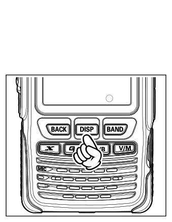</button><figcaption>Figure from page 119</figcaption><dialog id="fig-52"><p>Figure from page 119</p><form method="dialog"><button>Close</button></form></dialog></figure><figure><button aria-label="Enlarge Figure from page 119" class="zoom" data-dialog="fig-53" type="button"></button><figcaption>Figure from page 119</figcaption><dialog id="fig-53"><p>Figure from page 119</p><form method="dialog"><button>Close</button></form></dialog></figure><figure><button aria-label="Enlarge Figure from page 119" class="zoom" data-dialog="fig-54" type="button">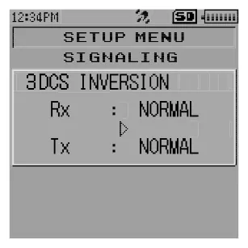</button><figcaption>Figure from page 119</figcaption><dialog id="fig-54"><p>Figure from page 119</p><form method="dialog"><button>Close</button></form></dialog></figure><p><strong>[When there is no deeper level of menu items]</strong>
Go to step 7.</p>
<p><strong>[When there is deeper level of menu items]</strong></p>
<p><strong>6</strong> Rotate the DIAL to select the desired item to set.
<strong>7</strong> Press .
Exits from Set mode.</p>
<p>~~<strong>Resetting the All Set Mode Settings</strong>~~</p>
<p>All the Set mode settings can be restored to the default settings by following the procedure
below.
<strong>1</strong> Press and hold for over one second to turn off the transceiver.</p>
<p>The transceiver turns ON. When you hear a beep sound, release the keys.
<strong>3</strong> After “SET MODE RESET?” appears, touch [OK].
A beep sounds.</p>
<p>~~<strong>Tips</strong>~~   - To cancel resetting, touch [CANCEL].</p>
<pre><code>  - To reset the following items, make sure to perform All Reset ( see page 51).
</code></pre>
<p><strong>[TX/RX]</strong>
1-1 ANTENNA ATT
1-2 HALF DEVIATION
1-3 RX MODE
2-1 SQL TYPE</p>
<p><strong>[MEMORY]</strong>
2 BANK NAME
3 MEMORY NAME
5 MEMORY SKIP</p>
<p><strong>[SIGNALING]</strong>
2 DCS CODE
3 DCS INVERSION
6 PAGER
7 PR FREQUENCY
9 SQL S-METER
11 SQL TYPE
12 TONE SQL FREQ</p>
<p><strong>[WIRES-X]</strong>
1 RPT/WIRES FREQ
2 SEARCH SETUP
4 EDIT CATEGORY TAG</p>
<p><strong>[CONFIG]</strong>
5 CLOCK TYPE
12 PASSWORD
15 RPT SHIFT
16 RPT SHIFT FREQ
18 STEP</p>
<p><strong>[APRS]</strong>
7 APRS MSG TXT
15 BEACON STATS TXT
18 DIGI PATH
19 GPS SETUP
23 CALLSIGN (APRS)
24 MY POSITION
25 MY SYMBOL (4:User)</p>
<p><strong>[CALLSIGN]</strong>
1 CALLSIGN (DIGITAL)</p><p>|Set mode no. / item|Description|Selectable options
(Options in bold are the default settings)|Page|
|---|---|---|---|
|
<strong>DISPLAY</strong>|
<strong>DISPLAY</strong>|
<strong>DISPLAY</strong>|
<strong>DISPLAY</strong>|
|<strong>1 TARGET LOCATION</strong>|Set what to display using the smart
navigation function.|<strong>COMPASS</strong> / NUMERIC|128|
|<strong>2 COMPASS</strong>|
Set the compass display of the smart
navigation function.|
<strong>HEADING UP</strong> / NORTH UP|128|
|<strong>3 BAND SCOPE</strong>|
Set the number of search channels
for the band scope function.|17ch /<strong>35ch</strong> / 71ch|128|
|<strong>4 LAMP</strong>|
Set the duration time of the backlight
and keys to be lit.|KEY: OFF / 2 to 10 SEC (KEY) /
CONTINUOUS<strong>KEY 5Sec</strong>
SAVE: ON /<strong>OFF</strong>|129|
|<strong>5 LANGUAGE</strong>|Switch between Japanese/English
for the menus and Set mode, etc.|
<strong>ENGLISH</strong> / JAPANESE|129|
|<strong>6 LCD CONTRAST</strong>|
Set the LCD contrast level.|LEVEL 1 to LEVEL 15<strong>LEVEL 7</strong>|129|
|
<strong>7 LCD DIMMER</strong>|Set the brightness level of the LCD
backlight and numeric keypad light.|
LEVEL 1 to LEVEL 6
<strong>LEVEL 6</strong>|130|
|<strong>8 OPENING</strong>
<strong>MESSAGE</strong>|
Set the opening message type.|
<strong>CALLSIGN</strong> / NORMAL / OFF /
DC / MESSAGE|130|
|<strong>9 SENSOR INFO</strong>|Display the voltage.|
Voltage|130|
|
<strong>10 S-METER SYMBOL</strong>|
 Select the symbol used for the S/
PO meter.|4 types|131|
|<strong>11 SOFTWARE</strong>
<strong>VERSION</strong>
|
Display the software version.|Main / Sub / DSP|131|
|<strong>TX / RX</strong>|<strong>TX / RX</strong>|<strong>TX / RX</strong>|<strong>TX / RX</strong>|
|
<strong>1 MODE</strong>|
<strong>1 MODE</strong>|
<strong>1 MODE</strong>|
<strong>1 MODE</strong>|
|
<strong>1-1 ANTENNA ATT</strong>|Switch the attenuator between ON/
OFF.|ON /<strong>OFF</strong>|50|
|<strong>1-2 HALF DEVIATION</strong>|Set the transmission modulation
level.|ON /<strong>OFF</strong>|132|
|<strong>1-3 RX MODE</strong>|Select the receive mode.|<strong>AUTO</strong> / FM / AM|48|
|</p>
<p><strong>2 DIGITAL</strong>|</p>
<p><strong>2 DIGITAL</strong>|</p>
<p><strong>2 DIGITAL</strong>|</p>
<p><strong>2 DIGITAL</strong>|
|
<strong>2-1 SQL TYPE</strong>|Set the squelch type for digital mode.|SQL TYPE:<strong>OFF</strong> / CODE /
BREAK
SQL CODE:<strong>001</strong> to 126|133|
|<strong>2-2 DIGI POPUP</strong>|Set the POP UP time.|
OFF / BND2s / BND4s / BND6s /
BND8s /<strong>BND10s</strong> / BND20s /
BND30s / BND60s / BNDCNT|133|
|<strong>2-3 LOCATION</strong>
<strong>SERVICE</strong>|Set whether or not to display your
current location in digital mode.|
<strong>ON</strong> / OFF
For details on the function, see the GM
Function Instruction Manual.|
<strong>ON</strong> / OFF
For details on the function, see the GM
Function Instruction Manual.|
|<strong>2-4 STANDBY BEEP</strong>|Switch the standby beep function
between ON/OFF.|
<strong>ON</strong> / OFF|134|
|
<strong>3 AUDIO</strong>|
<strong>3 AUDIO</strong>|
<strong>3 AUDIO</strong>|
<strong>3 AUDIO</strong>|
|
<strong>3-1 MIC GAIN</strong>|Adjust the microphone gain level.|LEVEL 1 to LEVEL 9<strong>LEVEL 5</strong>|134|
|
<strong>3-2 MUTE</strong>|
Set the muting level on the non-
operating band side when a signal is
received on the operating band side.|
<strong>OFF</strong> / MUTE 30% / MUTE 50% /
MUTE 100%|44|</p>
<p><strong>3-3 RX AF DUAL</strong> Set the resumption time of radio
reception in the AF Dual mode.</p>
<p>Transmit and receive 1 second to
10 seconds, Fixed,
or transmission 1 second to 10
seconds.</p>
<p>101</p><p>|Set mode no. / item|Description|Selectable options
(Options in bold are the default settings)|Page|
|---|---|---|---|
|
<strong>MEMORY</strong>|
<strong>MEMORY</strong>|
<strong>MEMORY</strong>|
<strong>MEMORY</strong>|
|<strong>1 BANK LINK</strong>|Set the memory bank link.|<strong>BANK 1</strong> to BANK 24, BANK LINK
ON /<strong>OFF</strong>|136|
|<strong>2 BANK NAME</strong>|Assign a name to each memory
bank.|
<strong>BANK 1</strong> to BANK 24|64|
|<strong>3 MEMORY NAME</strong>|Input the memory channel tag.|Up to 16 letters|59|
|
<strong>4 MEMORY PROTECT</strong>|
 Set whether to allow or prohibit
memory channel registration.|
ON /<strong>OFF</strong>|137|
|<strong>5 MEMORY SKIP</strong>|
Set for skip memory / specify
memory|<strong>OFF</strong> / SKIP / SELECT|77|
|<strong>6 MEMORY WRITE</strong>
|Set the automatic channel number
increment when registering to a
memory channel.|<strong>NEXT</strong> / LOWER|137|
|
<strong>SIGNALING</strong>|
<strong>SIGNALING</strong>|
<strong>SIGNALING</strong>|
<strong>SIGNALING</strong>|
|<strong>1 BELL</strong>|Set the bell function settings.|SELECT:<strong>OFF</strong> / BELL
RINGER:<strong>1 time</strong> to 20 times /
Continuous|114|
|<strong>2 DCS CODE</strong>|Set the DCS code.|<strong>023</strong> to 754|112|
|
<strong>3 DCS INVERSION</strong>|
Select a combination of DCS
inversion codes in terms of
communication direction.|
RX (Receive):<strong>NORMAL</strong>
<strong>(Homeomorphic)</strong> / INVERT
(Inversion) / BOTH (Both Phase)
TX (Transmission):<strong>NORMAL</strong>
<strong>(Homeomorphic)</strong> / INVERT
(Inversion)|138|
|<strong>4 DTMF MODE</strong>|Set the transmission of DTMF code
registered to a DTMF memory
channel, DTMF code transmission
delay time, and DTMF code
transmission speed.|MODE:<strong>MANUAL</strong> / AUTO
DELAY: 50ms / 250ms /<strong>450ms</strong> /
750ms / 1000ms
SPEED:<strong>50ms</strong> / 100ms|104|
|<strong>5 DTMF MEMORY</strong>|
Set the DTMF auto dialer channel
and code (16 characters).|<strong>CH1</strong> to CH10|103|
|<strong>6 PAGER</strong>|
Turn the pager answerback Function
ON/OFF, and specify a personal
code (transmit/receive).|ANS-BACK: ON /<strong>OFF</strong>
CODE-RX: 01 to 50 for each,<strong>05 47</strong>
CODE-TX: 01 to 50 for each,<strong>05 47</strong>|116|
|<strong>7 PR FREQUENCY</strong>|
Set a non-communication squelch.|
300Hz to 3000Hz<strong>1600Hz</strong>|139|
|
<strong>8 SQL LEVEL</strong>|
Select a squelch level.|
Level 0 to Level 15<strong>Level 1</strong>|139|
|
<strong>9 SQL S-METER</strong>|
Select an S-Meter squelch level|
<strong>OFF</strong> / LEVEL 1 to LEVEL 9|140|
|
<strong>10 SQL EXPANSION</strong>|
Set a squelch type separately for
Receive and transmit.|
ON /<strong>OFF</strong>|140|
|<strong>11 SQL TYPE</strong>|
Select a squelch type.|<strong>OFF</strong> / TONE / TONE SQL / DCS /
REV TONE / PR FREQ / PAGER
/ (D CD) / (TONE-DCS) / (DCD-
TONE SQL)
* The options in the parentheses
are available when the SQL
expansion is ON.|109|
|<strong>12 TONE SQL FREQ</strong>|Set a tone frequency.|
67.0Hz to 254.1Hz<strong>100Hz</strong>|110|
|
<strong>13 TONE-SRCH</strong>|
Set the audio output during tone
search. Turn the muting function on/
off and select a tone search speed.|
MUTE:<strong>ON</strong> / OFF
SPEED:<strong>FAST</strong> / SLOW|141|</p><p>|Set mode no. / item|Description|Selectable options
(Options in bold are the default settings)|Page|
|---|---|---|---|
|
<strong>SCAN</strong>|
<strong>SCAN</strong>|
<strong>SCAN</strong>|
<strong>SCAN</strong>|
|<strong>1 DW TIME</strong>|Set the priority memory channel
monitoring interval.|0.1 SEC to 10 SEC<strong>5.0 SEC</strong>|142|
|<strong>2 SCAN LAMP</strong>|
Set whether or not to light up the
scan lamp when scanning stops.|<strong>ON</strong> / OFF|142|
|<strong>3 SCAN RE-START</strong>|
Set the scanning restart time.|0.1 SEC to 10 SEC<strong>2.0 SEC</strong>|142|
|
<strong>4 SCAN RESUME</strong>|
Configure the scan stop mode
settings.|
SCAN: BUSY / HOLD / 2sec to
10sec<strong>5.0sec</strong>
DW: BUSY /<strong>HOLD</strong> / 2sec to
10sec|74|
|<strong>5 SCAN WIDTH</strong>
|Set the scan mode operation|VFO:<strong>ALL</strong> / BAND
MEMORY:<strong>ALL CH</strong> / BAND|143|
|
<strong>GM</strong>|
<strong>GM</strong>|
<strong>GM</strong>|
<strong>GM</strong>|
|<strong>1 DELETE GROUP</strong>|Delete a registered group.|–|–|
|
<strong>2 DELETE MEMBER</strong>|
Delete a registered member.|–|–|
|
<strong>3 RADIO ID</strong>|
Display the transceiver specific
number (ID).
 (Uneditable)|–|–|
|
* For details of the functions, refer to the GM Function Instruction Manual.
|
* For details of the functions, refer to the GM Function Instruction Manual.
|
* For details of the functions, refer to the GM Function Instruction Manual.
|
* For details of the functions, refer to the GM Function Instruction Manual.
|
|
<strong>WIRES-X</strong>|
<strong>WIRES-X</strong>|
<strong>WIRES-X</strong>|
<strong>WIRES-X</strong>|
|<strong>1 RPT/WIRES FREQ</strong>|Set the frequency to be used for
Repeater/WIRES.|<strong>MANUAL</strong> / PRESET|–|
|<strong>2 SEARCH SETUP</strong>|Set the WIRES ROOM selection
method.|<strong>HISTORY</strong> / ACTIVITY|–|
|<strong>3 EDIT CATEGORY</strong>
<strong>TAG</strong>|Edit category tags.|C1 to C5|–|
|<strong>4 REMOVE ROOM/</strong>
<strong>NODE</strong>|Delete registered Category ROOMs.|C1 to C5|–|
|* For details of the functions, refer to the WIRES-X Instruction Manual.
|* For details of the functions, refer to the WIRES-X Instruction Manual.
|* For details of the functions, refer to the WIRES-X Instruction Manual.
|* For details of the functions, refer to the WIRES-X Instruction Manual.
|
|<strong>CONFIG</strong>|<strong>CONFIG</strong>|<strong>CONFIG</strong>|<strong>CONFIG</strong>|
|<strong>1 APO</strong>|Set the length of time until the
transceiver turns off automatically.|<strong>OFF</strong> / 0.5 HOUR to 12 HOURS|145|
|<strong>2 BCLO</strong>|
Turn on/off the busy channel lockout
function.|ON /<strong>OFF</strong>|145|
|<strong>3 BEEP</strong>|Set the beep emitting function, and
set whether or not to emit the beep
sound when a band edge/CH1 is
encountered.|SELECT:<strong>KEY&amp;SCAN</strong> / KEY /
OFF
EDGE:<strong>OFF</strong> / ON|146|
|<strong>4 BUSY LED</strong>|Turn on/off the BUSY indicator.|A BAND:<strong>ON</strong> / OFF
B BAND:<strong>ON</strong> / OFF
RADIO:<strong>ON</strong> / OFF|146|
|<strong>5 CLOCK TYPE</strong>|Set the clock shift function.|
<strong>A</strong> / B|147|
|
<strong>6 GPS LOG</strong>|
Set the GPS log recording time
interval.|
<strong>OFF</strong> / 1 SEC / 2 SEC / 5 SEC /
10 SEC / 30 SEC / 60 SEC|147|
|<strong>7 HOME VFO</strong>|Enable/disable VFO transmission in
Home Channel.|
<strong>ENABLE</strong> / DISABLE|147|
|<strong>8 LED LIGHT</strong>|
Set whether ornot to turn on the light
when the
 key is pressed.|
–|147|</p>
<p>148</p>
<p><strong>9 LOCK</strong> Configure the lock mode setting. <strong>KEY&amp;DIAL</strong> / PTT / KEY&amp;PTT /
DIAL&amp;PTT / ALL / KEY / DIAL</p><p>|Set mode no. / item|Description|Selectable options
(Options in bold are the default settings)|Page|
|---|---|---|---|
|<strong>11 TIMER</strong>|Switch the timer between ON and
OFF.|ON:<strong>00:00</strong> to 23:59☒ /
OFF:<strong>00:00</strong> to 23:59☒ /|149|
|<strong>12 PASSWORD</strong>|Input the password.|<strong>OFF</strong> / [****]|149|
|
<strong>13 PTT DELAY</strong>|
Set the PTT delay time.|
<strong>OFF</strong> / 20ms / 50ms / 100ms /
200ms|150|
|<strong>14 RPT ARS</strong>|Turn the ARS function on/off.|<strong>ON</strong> / OFF|150|
|
<strong>15 RPT SHIFT</strong>|
Set the repeater shift direction.|
SIMPLEX / -RPT / +RPT|150|
|
<strong>16 RPT SHIFT FREQ</strong>|
Set the repeater shift width.|
0.000MHz to 150.000MHz|151|
|
<strong>17 SAVE RX</strong>|
Set the receive save time.|
OFF /<strong>0.2 SEC (1:1)</strong> to 60.0 SEC
(1:300)|151|
|<strong>18 STEP</strong>|Set the channel step.|<strong>AUTO</strong> / 5.0KHz / 62.5KHz /
8.33KHz / 9.0KHz / 10.0KHz /
12.5KHz / 15.0KHz / 20.0KHz /
25.0KHz / 50.0KHz / 100KHz|47|
|<strong>19 DATE &amp; TIME ADJ</strong>|Set the built-in clock.|
–|43|
|
<strong>20 TOT</strong>|
Set the timeout timer.|<strong>OFF</strong> / 30 SEC to 10 MIN
(European version: 3 MIN)|152|
|<strong>21 VFO MODE</strong>|Select the frequency selection range
in the VFO mode.|
<strong>ALL</strong> / BAND|152|
|<strong>22 VIBRATOR</strong>|
Select a vibrator mode and set up
the vibrator function.|MODE:<strong>OFF</strong> / BUSY /
SIGNALING
SELECT:<strong>PATTERN1</strong> /
PATTERN2 / PATTERN3|113|
|<strong>23 DIAL KNOB</strong>
<strong>CHANGE</strong>
|Swap the DIAL and VOL knob
functions.|
–|152|
|<strong>APRS</strong>|<strong>APRS</strong>|<strong>APRS</strong>|<strong>APRS</strong>|
|<strong>1 APRS AF DUAL</strong>|Turn on/off the muting function when
both the APRS function and AF dual
function are active.|ON /<strong>OFF</strong>|–|
|<strong>2 APRS DESTINATION</strong>|
 Display the model code.|APY02D (Uneditable)|–|
|
<strong>3 APRS FILTER</strong>|
Select the filter function.|
Mic-E:<strong>ON</strong> / OFF
POSITION:<strong>ON</strong> / OFF
WEATHER:<strong>ON</strong> / OFF
OBJECT:<strong>ON</strong> / OFF
ITEM:<strong>ON</strong> / OFF
STATUS:<strong>ON</strong> / OFF
OTHER: ON /<strong>OFF</strong>
ALTNET: ON /<strong>OFF</strong>|–|
|<strong>4 APRSMODEM</strong>|Set the APRS baud rate.|
<strong>OFF</strong> / 1200bps / 9600bps|–|
|
<strong>5 APRS MSG FLASH</strong>|
Set the strobe to flash when there is
an incoming message.|</p>
<p>MSG: OFF / 2s to 60s /
CONTINUOUS / EVERY 2s to
EVERY 10s<strong>4sec</strong>
GRP: OFF / 2s to 60s /
CONTINUOUS<strong>4sec</strong>
BLN: OFF / 2s to 60s /
CONTINUOUS<strong>4sec</strong>|–|</p><p>|Set mode no. / item|Description|Selectable options
(Options in bold are the default settings)|Page|
|---|---|---|---|
|<strong>6 APRS MSG GROUP</strong>|Group filtering for received
messages.|
<strong>G1: ALLxxxxxx</strong>
G2: CQxxxxxx
G3: QSTxxxxxx
G4: YAESUxxxxxx
G5: ----------
B1: BLNxxxxxx
B2: BLNx
B3: BLNx|–|
|<strong>7 APRS MSG TXT</strong>|Input the fixed text message.|
<strong>1</strong> to 8 ch|–|
|
<strong>8 APRS MUTE</strong>|
Set the B-band AF muting function
on/off when APRS is active.|
ON /<strong>OFF</strong>|–|
|<strong>9 APRS POPUP</strong>|
Set the beacon type, message type
and time for pop-up display.|The setting values of Mic-E,
POSITION, WEATHER,
OBJECT, ITEM, STATUS,
OTHER, MY PACKET, MSG,
GRP and BLN are as follows.
OFF / ALL2s to ALL60s /
ALLCNT / BND2s to BND60s /
BNDCNT<strong>ALL10s</strong>
The setting values of MY MSG,
DUP.BCN, DUP.MSG. ACK.REJ
and OTHER MSG are as follows.
OFF / BND2s to BND60s
<strong>BND10s</strong>|–|
|<strong>10 APRS RINGER</strong>|Set the bell ring on/off when a
beacon or message is received.|Mic-E:<strong>ON</strong> / OFF
POSITION:<strong>ON</strong> / OFF
WEATHER:<strong>ON</strong> / OFF
OBJECT:<strong>ON</strong> / OFF
ITEM:<strong>ON</strong> / OFF
STATUS:<strong>ON</strong> / OFF
OTHER:<strong>ON</strong> / OFF
MY PACKET:<strong>ON</strong> / OFF
MSG:<strong>ON</strong> / OFF
GRP:<strong>ON</strong> / OFF
BLN:<strong>ON</strong> / OFF
MY MSG:<strong>ON</strong> / OFF
DUP.BCN:<strong>ON</strong> / OFF
DUP.MSG:<strong>ON</strong> / OFF
ACK.REJ:<strong>ON</strong> / OFF
OTHER MSG:<strong>ON</strong> / OFF
TX BCN:<strong>ON</strong> / OFF
TX MSG:<strong>ON</strong> / OFF|–|
|<strong>11 APRS UNIT</strong>|Select the units for APRS display.|
POSITION:<strong>MM.MM'</strong> / MM'SS"
DISTANCE: km /<strong>mile</strong>
SPEED: km/h / knot /<strong>mph</strong>
ALTITUDE: m /<strong>ft</strong>
TEMP: °C /<strong>°F</strong>
RAIN: mm /<strong>inch</strong>
WIND: m/s /<strong>mph</strong>|–|</p>
<p><strong>12 APRS TX DELAY</strong> Set the data sending delay time. 100ms / 150ms / 200ms / 250ms / <strong>300ms</strong> / 400ms / 500ms /</p><p>|Set mode no. / item|Description|Selectable options
(Options in bold are the default settings)|Page|
|---|---|---|---|
|<strong>13 BEACON INFO</strong>|Set the transmission beacon
information.|
AMBIGUITY:<strong>OFF</strong> / 1 digit /
2 digit / 3 digit / 4 digit
SPD / CSE:<strong>ON</strong> / OFF
ALTITUDE:<strong>ON</strong> / OFF|–|
|<strong>14 BEACON</strong>
<strong>INTERVAL</strong>|Set a beacon automatic sending
interval.|
30sec / 1min / 2min / 3min /<strong>5min</strong> 
/ 10min / 15min / 20min / 30min
/ 60min|–|
|<strong>15 BEACON STATS</strong>
<strong>TXT</strong>|Input setting for status text.|
S.TXT: ON /<strong>OFF</strong>
TX RATE:<strong>1/1</strong> to 1/8
TEXT:<strong>TEXT1</strong> to TEXT5|–|
|<strong>16 BEACON TX</strong>|Select automatic or manual sending
of beacon.|
AUTO /<strong>MANUAL</strong>|–|
|<strong>17 COM PORT</strong>
<strong>SETTING</strong>|
Set the COM port.|STATUS: ON /<strong>OFF</strong>
SPEED: 4800 /<strong>9600</strong> / 19200 /
38400
INPUT:<strong>OFF</strong> / GPS
OUTPUT:<strong>OFF</strong> / GPS / WAY.P /
DSP H / DSP A / DSP D
WAYPOINT:<strong>NMEA9</strong> / NMEA6 /
NMEA7 / NMEA8
Mic-E:<strong>ON</strong> / OFF
POSIT:<strong>ON</strong> / OFF
WEATHER:<strong>ON</strong> / OFF
OBJECT:<strong>ON</strong> / OFF
ITEM:<strong>ON</strong> / OFF|–|
|<strong>18 DIGI PATH</strong>|Set the digital repeater route.|
P1 OFF
P2(1) 1 WIDE1-1
<strong>P3(2) 1 WIDE2-1 / 2 WIDE2-1</strong>
P4(2) 1     −  / 2     − 
P5(2) 1     −  / 2     − 
P6(2) 1     −  / 2     − 
P7(2) 1     −  / 2     − 
P8(8) 1    −  to 8     − |–|
|<strong>19 GPS SETUP</strong>|Select a datum used for the GPS
function.|
DATLM:<strong>WGS-84</strong> / Tokyo (Mean)
PINNING:<strong>ON</strong> / OFF
DGPS:<strong>ON</strong> / OFF|–|
|<strong>20 GPS POWER</strong>|Turn the GPS function on/off.|
<strong>GPS ON</strong> / GPS OFF|–|
|
<strong>21 GPS TIME SET</strong>|
Turn on/off the GPS time and date
automatic acquisition function.|
<strong>AUTO</strong> / MANUAL|–|
|<strong>22 GPS UNIT</strong>|
Select the units for GPS display.|POSITION:<strong>.MMM'</strong> / 'SS"
SPEED:<strong>km/h</strong> / knot / mph
ALTITUDE:<strong>m</strong> / ft|–|
|<strong>23 CALLSIGN (APRS)</strong>|Specify the call sign of your station.|
– – – – – –    – –|–|
|
<strong>24 MY POSITION</strong>|
Set your location|
<strong>GPS</strong> / Manual / P1 to P10|–|
|
<strong>25 MY SYMBOL</strong>|
Set your station symbol.|
48 icons including<strong>1(/[Human</strong>
<strong>person])</strong> / 2(/b Bicycle) / 3(/&gt;
Car) / 4(YY Yaesu Radios)|–|</p>
<p><strong>26 POSITION</strong>
<strong>COMMENT</strong></p>
<p>Set up the position comment
function.</p>
<p><strong>Off Duty</strong> / En Route / In Service
/ Returning / Committed / Special
/ Priority / Custom 0 to 6 /</p><p>|Set mode no. / item|Description|Selectable options
(Options in bold are the default settings)|Page|
|---|---|---|---|
|<strong>27 SmartBeaconing</strong>|Set the smart beaconing function.|
STATUS:<strong>OFF</strong> / TYPE1 / TYPE2 /
TYPE3
* For details on the following
setting items for each type, refer
to the APRS Instruction Manual.
LOW SPD, HIGH SPD,
SLOW RATE, FAST RATE,
TURN ANGL, TURN SLOP,
TURN TIME|–|
|<strong>28 TIME ZONE</strong>|Set the time zone.|
UTC −13:00 to UTC 0:00 to UTC
+13:00<strong>UTC 0:00</strong>|–|
|
* For details of the functions, refer to the APRS Instruction Manual.
|
* For details of the functions, refer to the APRS Instruction Manual.
|
* For details of the functions, refer to the APRS Instruction Manual.
|
* For details of the functions, refer to the APRS Instruction Manual.
|
|
<strong>SD CARD</strong>|
<strong>SD CARD</strong>|
<strong>SD CARD</strong>|
<strong>SD CARD</strong>|
|
<strong>1 BACKUP</strong>|Save the data stored on the
transceiver onto a microSD memory
card or load the data from a microSD
card.|
Write to SD / Read from SD|154|
|<strong>2 MEMORY CH</strong>|Save or load the memory channel
information onto or from a microSD
memory card.|Write to SD / Read from SD|155|
|<strong>3 GROUP ID</strong>|
Save or load the GROUP ID
information onto or from a microSD
memory card.|Write to SD / Read from SD|155|
|<strong>4 FORMAT</strong>
|
Initialize microSD memory cards.||31|
|</p>
<p><strong>OPTION</strong>|</p>
<p><strong>OPTION</strong>|</p>
<p><strong>OPTION</strong>|</p>
<p><strong>OPTION</strong>|
|<strong>1 USB CAMERA</strong>
|Set the USB camera image size,
resolution and Speaker.|SIZE:**160<em>120</em>* / 320*240
QUALITY:<strong>LOW</strong> / NORMAL /
HIGH
SP SEL:<strong>CAMERA</strong> / INT SP|157|
|
<strong>CALLSIGN</strong>|
<strong>CALLSIGN</strong>|
<strong>CALLSIGN</strong>|
<strong>CALLSIGN</strong>|
|<strong>1 CALLSIGN</strong>|Set the call sign.|xxxxxxxxxx|158|</p><p><strong>[DISPLAY]</strong> to reveal specific items.</p>
<p>After completing the setup, press to exit from Set mode.</p>
<p>~~<strong>Setting What to Display Using the Smart Navigation Function</strong>~~</p>
<p>Set what to display on the smart navigation screen.
<strong>1</strong> Touch <strong>[1 TARGET LOCATION]</strong> .
<strong>2</strong> Rotate the DIAL to select what is displayed on the screen.</p>
<table>
<thead>
<tr>
<th>COMPASS</th>
<th>Displays the compass.</th>
</tr>
</thead>
<tbody>
<tr>
<td>NUMERIC</td>
<td></td>
</tr>
<tr>
<td>Displays the latitude and longitude.</td>
<td></td>
</tr>
</tbody>
</table>
<p>~~<strong>Remark</strong>~~ The default setting: COMPASS</p>
<p>~~<strong>Setting the Compass Display</strong>~~</p>
<p>Set the compass display.
<strong>1</strong> Touch <strong>[2 COMPASS]</strong> .
<strong>2</strong> Rotate the DIAL to select the desired setting.</p>
<table>
<thead>
<tr>
<th>HEADING UP</th>
<th>The heading direction is indicated at the top of the compass.</th>
</tr>
</thead>
<tbody>
<tr>
<td></td>
<td></td>
</tr>
<tr>
<td>NORTH UP</td>
<td></td>
</tr>
<tr>
<td>The north direction is indicated at the top of the compass.</td>
<td></td>
</tr>
</tbody>
</table>
<p>~~<strong>Remark</strong>~~ The default setting: HEADING UP</p>
<p>~~<strong>Setting the Search Channels for the BAND SCOPE Function</strong>~~</p>
<p>Set the number of channels to be displayed for the band scope when the BAND SCOPE
function is used.
<strong>1</strong> Touch <strong>[3 BAND SCOPE]</strong> .
<strong>2</strong> Rotate the DIAL to select the number of channels to search for.
17ch / 35ch / 71ch</p>
<p>~~<strong>Remark</strong>~~ The default setting: 35ch</p><p>~~<strong>Changing the Lighting Condition</strong>~~</p>
<p>Change the LCD and key lighting condition.</p>
<table>
<thead>
<tr>
<th>Touch [4 LAMP]. Rotate the DIAL to Rotate the DIAL to</th>
<th>select [KEY], then press the key. select the lighting condition.</th>
</tr>
</thead>
<tbody>
<tr>
<td>2 SEC (KEY) to</td>
<td></td>
</tr>
<tr>
<td>10 SEC (KEY)</td>
<td>When the DIAL is rotated or a key is pressed, the LCD and key</td>
</tr>
<tr>
<td>lights remain illuminated for the set time.</td>
<td></td>
</tr>
<tr>
<td></td>
<td></td>
</tr>
<tr>
<td>CONTINUOUS</td>
<td></td>
</tr>
<tr>
<td>The LCD and key lights remain illuminated.</td>
<td></td>
</tr>
<tr>
<td>OFF</td>
<td></td>
</tr>
<tr>
<td>The LCD and keys do not light up.</td>
<td></td>
</tr>
</tbody>
</table>
<p>~~<strong>Remark</strong>~~ The default setting: 5 SEC (KEY)</p>
<p><strong>6</strong> Rotate the DIAL to select the lighting status after the set illumination time elapses.</p>
<p>|OFF|After the illumination time selected for [KEY] elapses, the lights
dim to [LEVEL 1] of the LCD dimmer setting.|
|---|---|
|ON|
After the illumination time selected for [KEY] elapses, lights turn
off.|</p>
<p>~~<strong>Remark</strong>~~ The default setting: OFF</p>
<p>~~<strong>Caution</strong>~~</p>
<p>When [KEY] is set to CONTINUOUS, regardless of the [SAVE] setting, the illumination stays lit
according to the LCD dimmer setting level.</p>
<p>~~<strong>Selecting the Display Language</strong>~~</p>
<p>Select the display language from Japanese and English.
<strong>1</strong> Touch <strong>[5 LANGUAGE]</strong> .
<strong>2</strong> Rotate the DIAL to select the desired language.</p>
<p>~~<strong>Remark</strong>~~ The default setting: English</p>
<p>~~<strong>Adjusting the LCD Contrast Level</strong>~~</p>
<p>Adjust the LCD contrast level.
<strong>1</strong> Touch <strong>[6 LCD CONTRAST]</strong> .
<strong>2</strong> Rotate the DIAL to select the desired contrast level.
Select from LEVEL 1 to LEVEL 15.</p>
<p>~~<strong>Remark</strong>~~ The default setting: LEVEL 7</p><p>~~<strong>Adjusting the LCD Backlight and Key Button Light Brightness Level</strong>~~</p>
<p>Adjust the brightness level of the LCD backlight and key button* light.
<strong>1</strong> Rotate the DIAL, then touch <strong>[7 LCD DIMMER]</strong>
<strong>2</strong> Rotate the DIAL to select the desired brightness level.
Select from LEVEL 1 to LEVEL 6.</p>
<p>~~<strong>Remark</strong>~~ The default setting: LEVEL 6</p>
<p>~~<strong>Changing the Opening Message Displayed Immediately after Power-</strong>~~
~~<strong>on</strong>~~</p>
<p>You can select the message under the “YAESU” logo displayed when turning on the
transceiver.
<strong>1</strong> Rotate the DIAL, then touch <strong>[8 OPENING MESSAGE]</strong> .
<strong>2</strong> Rotate the DIAL to select the desired message referring to the following table.</p>
<p>|OFF|Displays the receive frequency instead of the opening message
immediately after turning on the power.|
|---|---|
|DC|
Displays the power-supply voltage and time when turning on the
power.|
|MESSAGE|Displays a message comprising up to 16 characters when turning
on the power. Press the
 key to switch the screen to the
message registration screen. See “Entering Letters” on page 19
to input the message you want to display.|
|CALLSIGN|Displays your call sign when turning on the power.|</p>
<p>~~<strong>Displaying the Battery Voltage</strong>~~</p>
<p>Display the battery voltage. When the optional external power supply adapter with
a cigarette plug (SDD-13) is connected, the power supply voltage of this adapter is
displayed.
<strong>1</strong> Rotate the DIAL, then touch <strong>[9 SENSOR INFO]</strong> .
The battery voltage is shown on the LCD.</p><p>~~<strong>Changing the Display Pattern of the S-Meter</strong>~~</p>
<p>Select the desired display pattern of the S-Meter.
<strong>1</strong> Rotate the DIAL, then touch <strong>[10 S-METER SYMBOL]</strong> .
<strong>2</strong> Rotate the DIAL to select the desired display pattern.</p>
<p>~~<strong>Remark</strong>~~ The default setting: 1</p>
<p>~~<strong>Displaying the Software Version</strong>~~</p>
<p>Display the software version.
<strong>1</strong> Rotate the DIAL, then touch <strong>[11 SOFTWARE VERSION]</strong> .
The software versions of “Main”, “Sub” and “DSP” are shown.</p><p><strong>[TX/RX]</strong> to display the sub-menu items. Set each item under the sub-menu.</p>
<p>After completing the setup, press to exit from Set mode.</p>
<p>~~<strong>Reducing Receiver Sensitivity</strong>~~
~~<strong>Attenuator (ATT) Function</strong>~~</p>
<p>If the signal from the remote station is too strong or, a strong signal exists nearby that
interferes with reception, use the attenuator (ATT) function to reduce interference by
selecting <strong>[1 MODE]</strong> → <strong>[1 ANTENNA ATT]</strong> .
For details, see “Attenuator (ATT) Function (except AM broadcasts and AM broadcasts)”
on page 50.</p>
<p>~~<strong>Tip</strong>~~</p>
<p>The amount of attenuation by the attenuator (ATT) is about 10 dB.</p>
<p>~~<strong>Setting the Transmit Modulation Level</strong>~~</p>
<p>The transmit modulation level can be set to half of its usual level.
Select [OFF] for normal amateur operation.
<strong>1</strong> Touch <strong>[1 MODE]</strong> .
<strong>2</strong> Touch <strong>[2 HALF DEVIATION]</strong> .
<strong>3</strong> Rotate the DIAL to select the desired setting.</p>
<table>
<thead>
<tr>
<th>OFF</th>
<th>Normal transmission modulation level</th>
</tr>
</thead>
<tbody>
<tr>
<td>ON</td>
<td></td>
</tr>
<tr>
<td>The level is half of the normal transmit</td>
<td></td>
</tr>
<tr>
<td>modulation level.</td>
<td></td>
</tr>
</tbody>
</table>
<p>~~<strong>Remark</strong>~~ The default setting: OFF</p><p>~~<strong>Switching the Receive Mode</strong>~~</p>
<p>Manually switch to a suitable mode (radio wave type) according to the frequency band by
selecting <strong>[1 MODE]</strong> → <strong>[3 RX MODE]</strong> .
For details, see “Changing the Mode” on page 48.</p>
<p>~~<strong>Setting the Squelch Type for the Digital Mode</strong>~~</p>
<p>Set the squelch type for the digital mode.
<strong>1</strong> Touch <strong>[2 DIGITAL]</strong> .
<strong>2</strong> Touch <strong>[1 SQL TYPE]</strong> .</p>
<p><strong>4</strong> Rotate the DIAL to select the desired squelch type.</p>
<p>|OFF|Audio is always output upon receiving a digital signal from a Yaesu
transceiver.|
|---|---|
|CODE|Audio is output only when receiving a signal with a corresponding
SQL CODE.|
|BREAK|
Audio is output regardless of any squelch code when the remote
station transmits with BREAK set.|</p>
<p>~~<strong>Remark</strong>~~ The default setting: OFF</p>
<p><strong>7</strong> Rotate the DIAL to select the desired code.
Set SQL CODE any one of 126 types (001 to 126).</p>
<p>~~<strong>Setting the Pop-up Time of the Remote Station Information</strong>~~</p>
<p>Set the time duration to display the remote station information such as the call sign, on
the LCD.
<strong>1</strong> Touch <strong>[2 DIGITAL]</strong> .
<strong>2</strong> Touch <strong>[2 DIGI POPUP]</strong> .
<strong>3</strong> Rotate the DIAL to select the desired setting.</p>
<table>
<thead>
<tr>
<th>OFF</th>
<th>The remote station information is not displayed.</th>
</tr>
</thead>
<tbody>
<tr>
<td>BND2s</td>
<td></td>
</tr>
<tr>
<td>to</td>
<td></td>
</tr>
<tr>
<td>60s</td>
<td></td>
</tr>
<tr>
<td>Set the time duration to display the remote station information (2 to</td>
<td></td>
</tr>
<tr>
<td>60 seconds).</td>
<td></td>
</tr>
<tr>
<td>BND2s / BND4s / BND6s / BND8s / BND10s / BND20s / BND30s /</td>
<td></td>
</tr>
<tr>
<td>BND60s</td>
<td></td>
</tr>
<tr>
<td>BNDCNT</td>
<td>The remote station information is continuously displayed.</td>
</tr>
</tbody>
</table>
<p>~~<strong>Remark</strong>~~ The default setting: BAND 10 seconds</p><p>~~<strong>Displaying Your Location in Digital Mode</strong>~~</p>
<p>Set whether or not to display your location in digital mode.
<strong>1</strong> Touch <strong>[2 DIGITAL]</strong> .
<strong>2</strong> Touch <strong>[3 LOCATION SERVICE]</strong> .
<strong>3</strong> Rotate the DIAL to select the desired setting.</p>
<table>
<thead>
<tr>
<th>ON</th>
<th>Displays your location.</th>
</tr>
</thead>
<tbody>
<tr>
<td>OFF</td>
<td></td>
</tr>
<tr>
<td>Does not display your location.</td>
<td></td>
</tr>
</tbody>
</table>
<p>~~<strong>Remark</strong>~~ The default setting: ON
For details on the function, refer to the GM Function Instruction Manual.</p>
<p>~~<strong>Setting the Standby Beep</strong>~~</p>
<p>Set whether or not to emit the standby beep sound when the remote station completes
transmission.
<strong>1</strong> Touch <strong>[2 DIGITAL]</strong> .
<strong>2</strong> Touch <strong>[4 STANDBY BEEP]</strong> .
<strong>3</strong> Rotate the DIAL to select the desired setting.</p>
<table>
<thead>
<tr>
<th>ON</th>
<th>Emits the standby beep sound.</th>
</tr>
</thead>
<tbody>
<tr>
<td>OFF</td>
<td></td>
</tr>
<tr>
<td>Does not emit the standby beep sound.</td>
<td></td>
</tr>
</tbody>
</table>
<p>~~<strong>Remark</strong>~~ The default setting: ON</p>
<p>~~<strong>Adjusting the Microphone Sensitivity</strong>~~ ~~<strong>Microphone Gain</strong>~~</p>
<p>You can adjust the input level of the built-in microphone or an optional external microphone.
<strong>1</strong> Touch <strong>[3 AUDIO]</strong> .
<strong>2</strong> Touch <strong>[1 MIC GAIN]</strong> .
<strong>3</strong> Rotate the DIAL to select the desired microphone sensitivity level.
Select a microphone gain level from LEVEL 1 to LEVEL 9.</p>
<p>~~<strong>Remark</strong>~~ The default setting: LEVEL 5</p>
<p>~~<strong>Tips</strong>~~</p>
<ul>
<li>
<p>Increasing the microphone gain excessively can distort the sound or pick up the surrounding noise,
impairing intelligibility.</p>
</li>
<li>
<p>Be sure to check the microphone gain whenever the microphone is changed.</p>
</li>
</ul><p>~~<strong>Muting Audio</strong>~~</p>
<p>In the dual receive mode, the audio being received on the non-operating band can be
muted by selecting <strong>[3 AUDIO]</strong> → <strong>[2 MUTE]</strong> .
For details, see “Muting Audio” on page 44.</p>
<p>~~<strong>Simultaneous Radio Broadcast Reception</strong>~~</p>
<p>Set the time to resume radio broadcast reception after transmit/receive when using
simultaneously receive mode, by selecting <strong>[3 AUDIO]</strong> → <strong>[3 RX AF DUAL]</strong> .
For details, see “Setting the Resumption Time of Radio Reception” on page 101.</p><p><strong>[MEMORY]</strong> to set the individual items.</p>
<p>After completing the setup, press to exit from Set mode.</p>
<p>~~<strong>Setting Memory Bank Link</strong>~~</p>
<p>You can link multiple registered memory banks so that you can recall frequently used
memory banks immediately.
<strong>1</strong> Touch <strong>[1 BANK LINK]</strong> .</p>
<p>The checkbox is checked.
<strong>3</strong> Repeat step 2 to link the memory banks one by one from BANK 1 to BANK 24.</p>
<p>~~<strong>Assigning Name to Memory Bank</strong>~~</p>
<p>By selecting <strong>[2 BANK NAME]</strong>, you can assign a name to each memory bank using up to
16 characters.
For details, see “Assigning Name to Memory Bank” on page 64.</p>
<p>~~<strong>Assigning Name to Memory Channel</strong>~~</p>
<p>By selecting <strong>[3 MEMORY NAME]</strong>, you can assign a name such as a call sign and
broadcast station name to each memory channel and home channel.
For details, see “Using Memory Tag” on page 59.</p><p>~~<strong>Prohibiting Registration to a Memory Channel</strong>~~
~~<strong>Memory Channel Protect Function</strong>~~</p>
<p>A memory channel may be protected so that a new frequency or memory channel tag
name cannot be registered to it.
<strong>1</strong> Touch <strong>[4 MEMORY PROTECT]</strong> .
<strong>2</strong> Rotate the DIAL to select the desired setting.</p>
<table>
<thead>
<tr>
<th>OFF</th>
<th>Allows registering to registering to memory channels.</th>
</tr>
</thead>
<tbody>
<tr>
<td>ON</td>
<td></td>
</tr>
<tr>
<td>Prohibits registering to memory channels.</td>
<td></td>
</tr>
</tbody>
</table>
<p>~~<strong>Remark</strong>~~ The default setting: OFF</p>
<p>~~<strong>Setting Memory Skip Function</strong>~~</p>
<p>By selecting <strong>[5 MEMORY SKIP]</strong>, you can set the scan method for scanning memory
channels.
For details, see “Specifying Skip/Selected Memory Channels” on page 77.</p>
<p>~~<strong>Setting the Memory Channels Used for Registration</strong>~~</p>
<p>Set whether to register to the lowest unused memory channel number following the channel
number you most recently used, or to the lowest unused memory channel number.
<strong>1</strong> Touch <strong>[6 MEMORY WRITE]</strong> .
<strong>2</strong> Rotate the DIAL to select the desired setting.</p>
<p>|NEXT|Registers to the smallest unused memory channel number which
comes after the channel number you used most recently.|
|---|---|
|LOWER|
Registers to the unused memory channel having the lowest memory
number.|</p>
<p>~~<strong>Remark</strong>~~ The default setting: NEXT</p><p><strong>[SIGNALING]</strong> to set the individual items.</p>
<p>After completing the setup, press to exit from Set mode.</p>
<p>~~<strong>Notification of a Call from a Remote Station by the Bell</strong>~~</p>
<p>Set whether or not to alert you of a call from a remote station using the bell by selecting</p>
<p><strong>[1 BELL]</strong> .
For details, see “Notification of a Call from a Remote Station by the Bell Function” on
page 114.</p>
<p>~~<strong>Selecting a DCS Code</strong>~~</p>
<p>Select the DCS code out of the 104 codes from 023 to 754 by selecting <strong>[2 DCS CODE]</strong> .
For more details, see “Setting the DCS Code” on page 112.</p>
<p>~~<strong>Transmitting and Receiving a DCS Code with an Inverted Phase</strong>~~
~~<strong>DCS INVERSION Function</strong>~~</p>
<p>The transmit and receive DCS code phase may be inverted when using the digital code
squelch function.</p>
<table>
<thead>
<tr>
<th>Touch [3 D Rotate the</th>
<th>DCS INVERSION]. DIAL to select the phase combination for trans</th>
</tr>
</thead>
<tbody>
<tr>
<td>RX</td>
<td>Homeomorphic / Both Phase / Inverted</td>
</tr>
<tr>
<td>Phase</td>
<td></td>
</tr>
<tr>
<td>TX</td>
<td>Homeomorphic / Inverted Phase</td>
</tr>
</tbody>
</table>
<p>~~<strong>Remark</strong>~~ The default setting: Receive [Homeomorphic], Transmit [Homeomorphic]</p>
<p>~~<strong>Setting the Transmission Method of the DTMF Code</strong>~~</p>
<p>Set the transmission method of the registered DTMF code by selecting <strong>[4 DTMF MODE]</strong> .
For details, see “Transmitting the Registered DTMF Code” on page 104.</p><p>~~<strong>Setting the DTMF Code</strong>~~</p>
<p>By selecting <strong>[5 DTMF SELECT]</strong>, the maximum of 16 digit DTMF code can be registered
for a telephone number to make a call through the public telephone line from a phone
patch.
For details, see “Using the DTMF Function” on page 103.</p>
<p>~~<strong>Calling Only a Specific Station (New Pager Function)</strong>~~</p>
<p>When using transceivers with a group of friends, specifying individual personal codes
permits directing a call to a specific station by selecting <strong>[6 PAGER]</strong> .
For details, see “Calling Only a Specific Station  New Pager Function” on page 116.</p>
<p>~~<strong>Enabling No-communication Squelch Function PR FREQUENCY</strong>~~
~~<strong>Function</strong>~~</p>
<p>Set a no-communication squelch frequency in steps of 100 Hz within the range from 300
Hz to 3000 Hz.
<strong>1</strong> Touch <strong>[7 PR FREQUENCY]</strong> .
<strong>2</strong> Rotate the DIAL to tune in to a no-communication squelch frequency.
Select a no-communication squelch frequency in steps of 100 Hz within the range
from 300 Hz to 3000 Hz.</p>
<p>~~<strong>Remark</strong>~~ The default setting: 1600 Hz</p>
<p>~~<strong>Adjusting the Squelch Level SQL LEVEL Function</strong>~~</p>
<p>Set the squelch level to mute the raspy noise heard when there is no signal.
<strong>1</strong> Touch <strong>[8 SQL LEVEL]</strong> .
<strong>2</strong> Rotate the DIAL to adjust the squelch level from LEVEL 0 to LEVEL 15.</p>
<p>~~<strong>Remark</strong>~~ The default setting: LEVEL1</p><p>~~<strong>Setting the Squelch to Activate at a Specified Signal Strength</strong>~~
~~<strong>S-Meter Squelch Function</strong>~~</p>
<p>You can set A-Band and B-Band individually to emit audio only when receiving a signal
stronger than the S-meter Squelch level setting.</p>
<p><strong>1</strong> Touch <strong>[9 SQL S-METER]</strong> .
<strong>2</strong> Rotate the DIAL to select the setting value referring to the table below.</p>
<p>~~<strong>Remark</strong>~~ The default setting: OFF</p>
<table>
<thead>
<tr>
<th>Display</th>
<th>S-Meter Display</th>
<th>Operating Status</th>
</tr>
</thead>
<tbody>
<tr>
<td>OFF</td>
<td>No display</td>
<td>S-Meter</td>
</tr>
<tr>
<td>squelch</td>
<td></td>
<td></td>
</tr>
<tr>
<td>function</td>
<td></td>
<td></td>
</tr>
<tr>
<td>is</td>
<td></td>
<td></td>
</tr>
<tr>
<td>OFF.</td>
<td></td>
<td></td>
</tr>
<tr>
<td>(By default, S-Meter squelch function is set to</td>
<td></td>
<td></td>
</tr>
<tr>
<td>OFF.)</td>
<td></td>
<td></td>
</tr>
<tr>
<td>LEVEL1</td>
<td></td>
<td>Outputs the audio of a signal as strong or</td>
</tr>
<tr>
<td>stronger than the S-Meter level 1.</td>
<td></td>
<td></td>
</tr>
<tr>
<td>LEVEL2</td>
<td></td>
<td>Outputs the audio of a signal as strong or</td>
</tr>
<tr>
<td>stronger than the S-Meter level 2.</td>
<td></td>
<td></td>
</tr>
<tr>
<td>LEVEL3</td>
<td></td>
<td>Outputs the audio of a signal as strong or</td>
</tr>
<tr>
<td>stronger than the S-Meter level 3.</td>
<td></td>
<td></td>
</tr>
<tr>
<td>LEVEL4</td>
<td></td>
<td>Outputs the audio of a signal as strong or</td>
</tr>
<tr>
<td>stronger than the S-Meter level 4.</td>
<td></td>
<td></td>
</tr>
<tr>
<td>LEVEL5</td>
<td></td>
<td>Outputs the audio of a signal as strong or</td>
</tr>
<tr>
<td>stronger than the S-Meter level 5.</td>
<td></td>
<td></td>
</tr>
<tr>
<td>LEVEL6</td>
<td></td>
<td>Outputs the audio of a signal as strong or</td>
</tr>
<tr>
<td>stronger than the S-Meter level 6.</td>
<td></td>
<td></td>
</tr>
<tr>
<td>LEVEL7</td>
<td></td>
<td>Outputs the audio of a signal as strong or</td>
</tr>
<tr>
<td>stronger than the S-Meter level 7.</td>
<td></td>
<td></td>
</tr>
<tr>
<td>LEVEL8</td>
<td></td>
<td>Outputs the audio of a signal as strong or</td>
</tr>
<tr>
<td>stronger than the S-Meter level 8.</td>
<td></td>
<td></td>
</tr>
<tr>
<td>LEVEL9</td>
<td></td>
<td>Outputs the audio of a signal as strong or</td>
</tr>
<tr>
<td>stronger than the S-Meter level 9.</td>
<td></td>
<td></td>
</tr>
</tbody>
</table>
<p>~~<strong>Setting the Squelch Type for Transmit and Receive</strong>~~
~~<strong>SQL EXPANSION Function</strong>~~</p>
<p>You can add squelch types to <strong>[11 SQL TYPE]</strong> for transmit and receive, respectively.
<strong>1</strong> Rotate the DIAL, then touch <strong>[10 SQL EXPANSION]</strong> .
<strong>2</strong> Rotate the DIAL to select the desired setting.</p>
<table>
<thead>
<tr>
<th>ON</th>
<th>Add squelch types for transmit and receive, respectively.</th>
</tr>
</thead>
<tbody>
<tr>
<td>OFF</td>
<td></td>
</tr>
<tr>
<td>Does not add squelch types for transmit and receive, respectively.</td>
<td></td>
</tr>
</tbody>
</table><p>~~<strong>Setting the Type of Squelch</strong>~~</p>
<p>Select <strong>[11 SQL TYPE]</strong> to open the squelch only when a signal containing the specified
tone or code is received.
For details, see “Using the Tone Squelch Function” on page 109.</p>
<p>~~<strong>Selecting a CTCSS Tone Frequency</strong>~~</p>
<p>Select <strong>[12 TONE SQL FREQ]</strong> to select the tone frequency from 50 types between 67.0
MHz and 254.1 MHz.
For details, see “Setting the Tone Frequency” on page 110.</p>
<p>~~<strong>Setting the Sound and Speed During Tone Search</strong>~~
~~<strong>Tone Search Function</strong>~~</p>
<p>The audio may be muted during tone search. The operation speed of the tone search can
also be changed.
<strong>1</strong> Rotate the DIAL, then touch <strong>[13 TONE-SRCH]</strong> .</p>
<table>
<thead>
<tr>
<th>Rotate the Rotate the</th>
<th>DIAL to select [MUTE], then press the key. DIAL to select the desired setting.</th>
</tr>
</thead>
<tbody>
<tr>
<td>ON</td>
<td>Mutes the audio during the tone search operation.</td>
</tr>
<tr>
<td>OFF</td>
<td></td>
</tr>
<tr>
<td>Does not mute the audio during the tone search operation.</td>
<td></td>
</tr>
</tbody>
</table>
<p>~~<strong>Remark</strong>~~ The default setting: ON</p>
<table>
<thead>
<tr>
<th>Rotate the Rotate the FAST</th>
<th>DIAL to select [SPEED], then press the DIAL to select the desired setting. Speed up the tone search operation.</th>
</tr>
</thead>
<tbody>
<tr>
<td>FAST</td>
<td>Speed up the tone search operation.</td>
</tr>
<tr>
<td>SLOW</td>
<td></td>
</tr>
<tr>
<td>Slow down the tone search operation.</td>
<td></td>
</tr>
</tbody>
</table>
<p>~~<strong>Remark</strong>~~ The default setting: FAST</p>
<p>~~<strong>ON/OFF for the Weather Alert Feature</strong>~~</p>
<p>Setting the weather Alert Feature, used for notifying storms and hurricanes, ON or OFF.</p>
<table>
<thead>
<tr>
<th>Rotate the Rotate the ON</th>
<th>DIAL, then touch [14 WX ALERT]. DIAL to select the desired setting. Enables the Weather Alert Feature.</th>
</tr>
</thead>
<tbody>
<tr>
<td>ON</td>
<td>Enables the Weather Alert Feature.</td>
</tr>
<tr>
<td>OFF</td>
<td></td>
</tr>
<tr>
<td>Disables the Weather Alert Feature.</td>
<td></td>
</tr>
</tbody>
</table>
<p>~~<strong>Remark</strong>~~ The default setting: OFF</p><p><strong>[SCAN]</strong> to set the individual items.</p>
<p>After completing the setup, press to exit from Set mode.</p>
<p>~~<strong>Setting the Surveillance Interval Time for Priority Channels</strong>~~
~~<strong>DW INTERVAL TIME Function</strong>~~</p>
<p>When the dual receive function is active, the interval time at which the priority channel is
monitored can be set.
<strong>1</strong> Rotate the DIAL, then touch <strong>[1 DW TIME]</strong> .
<strong>2</strong> Rotate the DIAL to select the monitoring interval from 0.1 SEC to 10 SEC.</p>
<p>~~<strong>Remark</strong>~~ The default setting: 5.0 seconds</p>
<p>~~<strong>Setting the Illumination On/Off When Scanning Stops</strong>~~
~~<strong>LAMP Function</strong>~~</p>
<p>Set whether or not the LCD backlight is turned on when a signal is received during
scanning.</p>
<table>
<thead>
<tr>
<th>Rotate the Rotate the</th>
<th>DIAL, then touch [2 SCAN LAMP]. DIAL to select the desired setting.</th>
</tr>
</thead>
<tbody>
<tr>
<td>ON</td>
<td>The LCD backlight will illuminate when a signal is received.</td>
</tr>
<tr>
<td>OFF</td>
<td></td>
</tr>
<tr>
<td>The LCD backlight will not illuminate when a signal is received.</td>
<td></td>
</tr>
</tbody>
</table>
<p>~~<strong>Remark</strong>~~ The default setting: ON</p>
<p>~~<strong>Setting the Time to Resume Scanning</strong>~~
~~<strong>SCAN RE-START Function</strong>~~</p>
<p>Set the time interval to resuming scanning after a received signal ends during scanning.
<strong>1</strong> Rotate the DIAL, then touch <strong>[3 SCAN RE-START]</strong> .
<strong>2</strong> Rotate the DIAL to select the time to resume scanning from 0.1 SEC to 10 SEC.</p>
<p>~~<strong>Remark</strong>~~ The default setting: 2.0 seconds</p><p>~~<strong>Selecting a Receive Operation When Scanning Stops</strong>~~</p>
<p>Touch <strong>[4 SCAN RESUME]</strong> to set the receive operation for when scanning stops.
For details, see “Setting the Receive Operation When Scanning Stops” on page 74.</p>
<p>~~<strong>Setting the Scanning Range</strong>~~</p>
<p>You can set the frequency range for scanning in VFO mode and Memory mode.
<strong>1</strong> Touch <strong>[5 SCAN WIDTH]</strong> .</p>
<p><strong>3</strong> Rotate the DIAL to select the desired setting referring to the table below.</p>
<p>|ALL|Scans all bands from the current frequency within the 1.8 MHz to 999
MHz range.|
|---|---|
|
BAND
|
Starting with the current frequency, scans within the current band.|</p>
<p><strong>6</strong> Rotate the DIAL to select the desired setting referring to the table below.</p>
<p>|ALL CH|Scans all memory channels (1 to 900) starting with the currently specified
memory channel. When “Selected memory channel” is selected, all
specified memory channels are scanned ( see page 76).|
|---|---|
|
BAND</p>
<p>|</p>
<p>Scans only the memory channels to which the frequencies are registered,
within the same frequency band<em>1 as the currently specified memory
channel.
When the memory channels are registered as the specified memory
channels, scans only the specified memory channels to which the
frequencies are registered, within the same frequency band.</em>1|</p>
<p>*1: For the relationship between frequency bands and receive frequencies, see the table at the
bottom of page 36.</p><p><strong>[GM]</strong> to set the individual items.</p>
<p>After completing the setup, press to exit from Set mode.</p>
<p>For details on how to set each item, refer to “FT2DR/DE GM Function Instruction Manual”
which is available on Yaesu website.</p>
<p>~~<strong>Set Mode: WIRES-X Menu Operations</strong>~~</p>
<p><strong>[WIRES]</strong> to set the individual items.</p>
<p>After completing the setup, press to exit from Set mode.</p>
<p>For details on how to set each item, refer to “FT2DR/DE WIRES-X Instruction Manual”
which is available on Yaesu website.</p><p><strong>[CONFIG]</strong> to set the individual items.</p>
<p>After completing the setup, press to exit from Set mode.</p>
<p>~~<strong>Turn Power Off Automatically   Auto Power-Off Function</strong>~~</p>
<p>Set whether or not to turn off the transceiver automatically if there is no operation for a
certain period of time.
<strong>1</strong> Touch <strong>[1 APO]</strong> .
<strong>2</strong> Rotate the DIAL to select the desired setting.</p>
<table>
<thead>
<tr>
<th>OFF</th>
<th>Does not turn off the power automatically.</th>
</tr>
</thead>
<tbody>
<tr>
<td>30 minutes to</td>
<td></td>
</tr>
<tr>
<td>12 hours</td>
<td></td>
</tr>
<tr>
<td>Turns off the power when no operation is performed for a specified</td>
<td></td>
</tr>
<tr>
<td>period of time.</td>
<td></td>
</tr>
</tbody>
</table>
<p>~~<strong>Remark</strong>~~ The default setting: OFF</p>
<p>~~<strong>Preventing Accidental Transmission</strong>~~
~~<strong>Busy Channel Lockout (BCLO) Function</strong>~~</p>
<p>Preventing transmissions when the receive channel is busy.
<strong>1</strong> Touch <strong>[2 BCLO]</strong> .
<strong>2</strong> Rotate the DIAL to select the desired setting.</p>
<table>
<thead>
<tr>
<th>OFF</th>
<th>Permits starting a transmission while receiving a signal.</th>
</tr>
</thead>
<tbody>
<tr>
<td>ON</td>
<td></td>
</tr>
<tr>
<td>Disables transmissions while receiving a signal.</td>
<td></td>
</tr>
</tbody>
</table>
<p>~~<strong>Remark</strong>~~ The default setting: OFF</p><p>~~<strong>Setting the Key Operation Confirmation Sound</strong>~~</p>
<p>Set whether or not a beep sound is emitted to confirm when keys are operated, when
scanning reaches the end of a frequency band, or when a band edge/CH1 is encountered.
<strong>1</strong> Touch <strong>[3 BEEP]</strong> .</p>
<p><strong>3</strong> Rotate the DIAL to select the desired setting referring to the table below.</p>
<p>|KEY &amp;
SCAN|Emits the beep sound when a key is operated or scanning stops.|
|---|---|
|KEY|Emits the beep sound when a key is pressed.|
|OFF|
Mutes the beep sound.|</p>
<p>~~<strong>Remark</strong>~~ The default setting: KEY &amp; SCAN</p>
<p><strong>6</strong> Rotate the DIAL to select the desired setting referring to the table below.</p>
<table>
<thead>
<tr>
<th>OFF</th>
<th>No confirmation sound is emitted when a band edge/CH1 is encountered.</th>
</tr>
</thead>
<tbody>
<tr>
<td></td>
<td></td>
</tr>
<tr>
<td>ON</td>
<td></td>
</tr>
<tr>
<td></td>
<td></td>
</tr>
<tr>
<td>Emits the confirmation sound when a band edge/CH1 is encountered.</td>
<td></td>
</tr>
</tbody>
</table>
<p>~~<strong>Remark</strong>~~ The default setting: OFF</p>
<p>~~<strong>Turning off the BUSY Indicator</strong>~~</p>
<p>When listening to the radio continuously or to extend the remaining battery operating
time, turn off the BUSY indicator to save battery power consumption.
<strong>1</strong> Touch <strong>[4 BUSY LED]</strong> .</p>
<p><strong>3</strong> Rotate the DIAL to select the desired setting.</p>
<p>~~<strong>Remark</strong>~~ The default setting: ON</p>
<p><strong>5</strong> To change the setting for other bands, repeat steps 2 to 4.</p><p>~~<strong>Setting the Clock Shift for the Micro Computer</strong>~~
~~<strong>Clock Type Function</strong>~~</p>
<p>Set the micro computer Clock Shift function may be activated to eliminate an internally
generated spurious high frequency signal. Select [A] for normal use.
<strong>1</strong> Touch <strong>[5 CLOCK TYPE]</strong> .
<strong>2</strong> Rotate the DIAL to select the desired setting.</p>
<p>~~<strong>Remark</strong>~~ The default setting: A</p>
<p>~~<strong>Setting a Time Interval for Saving GPS Position Information</strong>~~</p>
<p>Set the interval at which the current position GPS information is saved to the microSD
memory card.
<strong>1</strong> Touch <strong>[6 GPS LOG]</strong> .
<strong>2</strong> Rotate the DIAL to select the time interval:
OFF / 1 SEC / 2 SEC / 5 SEC /10 SEC / 30 SEC / 60 SEC
If OFF is selected, no GPS Information is saved onto the microSD memory card</p>
<p>~~<strong>Remark</strong>~~ The default setting: OFF</p>
<p>~~<strong>Tips</strong>~~</p>
<ul>
<li>
<p>Data saved onto the microSD memory card is saved in GPSyymmddhhmmss.LOG format.</p>
</li>
<li>
<p>Saved data may be viewed by using OEM PC applications*.</p>
</li>
<li>
<p>Yaesu does not provide technical support for PC applications.</p>
</li>
</ul>
<p>~~<strong>Permitting/Prohibiting Transfer of Home Channel Frequency to VFO</strong>~~</p>
<p>Set whether or not to permit tuning off of the home channel and transfer to the VFO.
<strong>1</strong> Touch <strong>[7 HOME VFO]</strong> .
<strong>2</strong> Rotate the DIAL to select the desired setting.</p>
<p>|ENABLE|Turning the DIAL in home channel transfers from the home channel
frequency to the VFO.|
|---|---|
|DISABLE|
Turning the Dial on the home channel does not switch to the VFO.|</p>
<p>~~<strong>Remark</strong>~~ The default setting: ENABLE</p>
<p>~~<strong>Using the LED Light</strong>~~</p><p><strong>1</strong> Touch <strong>[8 LED LIGHT]</strong> .
The LED light turns on.</p>
<p>The LED light turns off.</p>
<p>~~<strong>Setting the LOCK Function</strong>~~</p>
<p>Select keys/DIAL to which you want to apply the lock function.
<strong>1</strong> Touch <strong>[9 LOCK]</strong> .
<strong>2</strong> Rotate the DIAL to select the desired setting.</p>
<table>
<thead>
<tr>
<th>KEY &amp; DIAL</th>
<th>Locks the DIAL and keys on the front side of the transceiver.</th>
</tr>
</thead>
<tbody>
<tr>
<td></td>
<td></td>
</tr>
<tr>
<td>PTT</td>
<td></td>
</tr>
<tr>
<td>Locks  .</td>
<td></td>
</tr>
<tr>
<td>KEY &amp; PTT</td>
<td></td>
</tr>
<tr>
<td>Locks   and the keys on the front side of the transceiver.</td>
<td></td>
</tr>
<tr>
<td></td>
<td></td>
</tr>
<tr>
<td>DIAL &amp; PTT</td>
<td></td>
</tr>
<tr>
<td>Locks the DIAL and  .</td>
<td></td>
</tr>
<tr>
<td></td>
<td></td>
</tr>
<tr>
<td>ALL</td>
<td></td>
</tr>
<tr>
<td>Locks the DIAL,   and the keys on the front side of the transceiver.</td>
<td></td>
</tr>
<tr>
<td>KEY</td>
<td></td>
</tr>
<tr>
<td>Locks the keys on the front side of the transceiver.</td>
<td></td>
</tr>
<tr>
<td>DIAL</td>
<td></td>
</tr>
<tr>
<td>Locks the DIAL.</td>
<td></td>
</tr>
</tbody>
</table>
<p>~~<strong>Remark</strong>~~ The default setting: KEY &amp; DIAL</p>
<p>~~<strong>Setting the Operation of the  Key</strong>~~</p>
<table>
<thead>
<tr>
<th>Touch [10 M Rotate the MONI</th>
<th>MONI/T-CALL]. DIAL to select the desired s Monitors frequencies.</th>
</tr>
</thead>
<tbody>
<tr>
<td>MONI</td>
<td>Monitors frequencies.</td>
</tr>
<tr>
<td>T-CALL</td>
<td></td>
</tr>
<tr>
<td>Functions as the tone call.</td>
<td></td>
</tr>
</tbody>
</table>
<p>~~<strong>Remark</strong>~~ The default setting: MONI</p><p>~~<strong>Turning on/off the Transceiver at the Specified Time</strong>~~
~~<strong>Timer Function</strong>~~</p>
<p>You can turn the transceiver to on or off at the specified time. Before using this function,
adjust the clock referring to “Setting Clock Time” on page 43.
<strong>1</strong> Rotate the DIAL, then touch <strong>[11 TIMER]</strong> .
<strong>2</strong> Rotate the DIAL to select the desired option.</p>
<p><strong>6</strong> Touch [TIMER ON] or [TIMER OFF] to set the timer function to on or off.
Touch [TIMER OFF] to deactivate the timer function.</p>
<p>~~<strong>Remark</strong>~~ The default setting:   - (TIMER OFF)</p>
<p>~~<strong>Password Function</strong>~~</p>
<p>You can enter a 4-digit password to prevent a third party from using your transceiver
without permission. Once a password is set, the transceiver cannot be used unless the
valid password is entered.
<strong>1</strong> Rotate the DIAL, then touch <strong>[12 PASSWORD]</strong> .
<strong>2</strong> Rotate the DIAL to select <strong>[ON].</strong></p>
<p>~~<strong>Remark</strong>~~ The default setting: OFF</p>
<p><strong>4</strong> Use the numeric keypad to input your desired 4 letters using 0 to 9, A to D, * or #.</p>
<p>The registered 4 letters appear.</p>
<p>y <strong>y</strong> <strong>Inputting the Password to Use the Transceiver</strong>
<strong>1</strong> Press for over one second.
The password input screen appears.
<strong>2</strong> Use the numeric keypad to input the password.</p><p>When the valid password is entered, the frequency display screen appears.</p>
<p>~~<strong>Remark</strong>~~ If an invalid password is entered, the transceiver is turned off automatically.</p>
<p>~~<strong>Caution</strong>~~</p>
<p>If you have forgotten the registered password, carrying out all resetting allows you to turn on the
transceiver without entering the password.
It should be noted that performing all resetting resets (initializes) all information such as the information
registered to memory channels and various setting values.
It is recommended that the password be written down on paper.</p>
<p>~~<strong>Setting the PTT Delay Time PTT DELAY Function</strong>~~</p>
<p>Set a timed delay before actual transmission begins after is pressed.
<strong>1</strong> Rotate the DIAL, then touch <strong>[13 PTT DELAY]</strong> .
<strong>2</strong> Rotate the DIAL to select the desired setting.
OFF/20ms/50ms/100ms/200ms
Selecting OFF disables the PTT delay time function.</p>
<p>~~<strong>Remark</strong>~~ The default setting: OFF</p>
<p>~~<strong>Setting the ARS Function</strong>~~
~~<strong>RPT ARS Function</strong>~~</p>
<p>Enable or disable the automatic Repeater Shift operation ARS (Repeater operation is
initiated by tuning to the repeater frequency).
<strong>1</strong> Rotate the DIAL, then touch <strong>[14 RPT ARS]</strong> .
<strong>2</strong> Rotate the DIAL to select the desired setting.</p>
<p>~~<strong>Remark</strong>~~ The default setting: ON</p>
<p>~~<strong>Setting the Repeater Shift Direction</strong>~~
~~<strong>RPT SHIFT Function</strong>~~</p>
<p>Set the TX frequency shift direction for repeater use.
<strong>1</strong> Rotate the DIAL, then touch <strong>[15 RPT SHIFT]</strong> .
<strong>2</strong> Rotate the DIAL to select the desired setting.</p>
<p>~~<strong>Remark</strong>~~ The default setting differs depending frequency</p><p>~~<strong>Setting the frequency offset for Repeater Shift</strong>~~
~~<strong>RPT SHIFT FREQ Function</strong>~~</p>
<p>Set the repeater shift offset frequency.
<strong>1</strong> Rotate the DIAL, then touch <strong>[16 RPT SHIFT FREQ]</strong> .
<strong>2</strong> Rotate the DIAL to select the desired shift offset.
The offset frequency can be set in steps of 0.05 MHz between 0.000 MHz and 150.000
MHz.</p>
<p>~~<strong>Remark</strong>~~ The default setting differs depending frequency</p>
<p>~~<strong>Disabling Receiver While No Signal Is Received</strong>~~
~~<strong>Receiver Battery Save Function</strong>~~</p>
<p>Sets the Receive OFF Battery save interval (sleep ratio) to reduce power consumption.
<strong>1</strong> Rotate the DIAL, then touch <strong>[17 SAVE RX]</strong> .</p>
<table>
<thead>
<tr>
<th>operation).</th>
<th>Col2</th>
</tr>
</thead>
<tbody>
<tr>
<td>0.2 sec (1:1) to 1.0 sec (1:5)</td>
<td>In steps of 0.1 second</td>
</tr>
<tr>
<td></td>
<td></td>
</tr>
<tr>
<td>to 1.0 sec (1:5) to 10 sec (1:50)</td>
<td></td>
</tr>
<tr>
<td>In steps of 0.5 second</td>
<td></td>
</tr>
<tr>
<td></td>
<td></td>
</tr>
<tr>
<td>to 1.0 sec (1:50) to 60 sec (1:300 sec)</td>
<td></td>
</tr>
<tr>
<td>In steps of 5 second</td>
<td></td>
</tr>
<tr>
<td></td>
<td></td>
</tr>
<tr>
<td>OFF</td>
<td></td>
</tr>
</tbody>
</table>
<p>Selecting OFF disables this function.</p>
<p>~~<strong>Remark</strong>~~ The default setting: 0.2 sec (1:1)</p>
<p>~~<strong>Changing the Frequency Step Manually</strong>~~</p>
<p>Rotate the DIAL to select <strong>[18 STEP]</strong> to set each frequency step, when the Dial Knob is
turned manually.
For details, see “Setting the Frequency Step” on page 47.</p>
<p>~~<strong>Setting Clock Time</strong>~~</p>
<p>Rotate the DIAL to select <strong>[19 DATE &amp; TIME ADJ]</strong> to set the built-in clock time.
For details, see “Setting Clock Time” on page 43.</p><p>~~<strong>Limit the time of a continuous transmission (TOT Function)</strong>~~</p>
<p>Set the transceiver to automatically return to receive mode after transmitting continuously
for a certain period of time. The TOT function limits inadvertent transmission of
unnecessary signals, and unwanted battery power consumption (time-out timer function).
<strong>1</strong> Rotate the DIAL, then touch <strong>[20 TOT]</strong> .
<strong>2</strong> Rotate the DIAL to set the time for the transceiver to automatically return to receive
mode state in steps of 30 seconds.
OFF/30 SEC to 10 MIN
Selecting OFF disables the TOT function.</p>
<p>~~<strong>Remark</strong>~~ The default setting: OFF (European version: 3 MIN)</p>
<p>~~<strong>Tips</strong>~~</p>
<ul>
<li>
<p>When the time-out timer function is active, a beep is emitted when a continuous transmission nears
the set time. About 10 seconds later, the transceiver returns to the receive mode.</p>
</li>
<li>
<p>The TOT setting is retained until “OFF” is selected in step 2 above.</p>
</li>
</ul>
<p>~~<strong>Setting the Frequency Selection Range for Operation in VFO Mode</strong>~~
~~<strong>VFO MODE Function</strong>~~</p>
<p>Sets the frequency tuning range while operating in VFO mode.
<strong>1</strong> Rotate the DIAL, then touch <strong>[21 VFO MODE]</strong> .
<strong>2</strong> Rotate the DIAL to select the desired tuning range.</p>
<table>
<thead>
<tr>
<th>ALL</th>
<th>Tuning continues to the next band when reaching the end of a band.</th>
</tr>
</thead>
<tbody>
<tr>
<td>BAND</td>
<td></td>
</tr>
<tr>
<td>Tuning continues to the other end of the current band when reaching</td>
<td></td>
</tr>
<tr>
<td>the end of the band.</td>
<td></td>
</tr>
</tbody>
</table>
<p>~~<strong>Remark</strong>~~ The default setting: ALL</p>
<p>~~<strong>Notifying a Call From a Remote Station by Vibration</strong>~~</p>
<p>Rotate the DIAL to select <strong>[22 VIBRATOR]</strong> to set the vibrator which notifies you of a call
from a remote station.
For details, see “Notification of a Call from a Remote Station by Vibration” on page 113.</p>
<p>~~<strong>Swapping the Dial Knob Functions</strong>~~</p>
<p><strong>1</strong> Rotate the DIAL, then touch <strong>[23 DIAL KNOB CHANGE]</strong> .
<strong>2</strong> Press the <strong>[CHANGE]</strong> key.
The VOL and DIAL knob functions are swapped.</p>
<p>~~<strong>Remark</strong>~~ The default setting: the upper knob is DIAL.</p><p><strong>[APRS]</strong> to set the individual items.</p>
<p>After completing the setup, press to exit from Set mode.</p>
<p>For details on setting each item, refer to “FT2DR/DE APRS Instruction Manual” which is
available on Yaesu website.</p><p><strong>[SD CARD]</strong> to set the individual items.</p>
<p>After completing the setup, press to exit from Set mode.</p>
<p>~~<strong>Saving/Loading Data to/from microSD Memory Card</strong>~~</p>
<p>Settings information can be saved to a microSD memory card, also the saved information
can be loaded to the transceiver.
<strong>1</strong> Rotate the DIAL, then touch <strong>[1 BACKUP]</strong> .
<strong>2</strong> Rotate the DIAL to select the operation to be performed.</p>
<p>|Write to SD|Saves the transceiver setting information to a microSD memory
card.|
|---|---|
|Read from SD|Loads the information to the transceiver from a microSD memory
card.|</p>
<p>A pop-up window appears on the LCD.
<strong>4</strong> Touch <strong>[OK]</strong> .
<strong>5</strong> Touch <strong>[OK]</strong> again.
When <strong>[Write to SD]</strong> is selected and data writing completes, a beep sounds and
“COMPLETED” appears on the LCD.
When <strong>[Read from SD]</strong> is selected and data reading completes, a beep sounds, then
the transceiver restarts with the settings read from the microSD memory card applied.</p><p>~~<strong>Saving/Loading Memory Channel Information to/from microSD</strong>~~
~~<strong>Memory Card</strong>~~</p>
<p>Memory channel setting information can be saved onto a microSD memory card, or saved
information can be loaded to the transceiver.
<strong>1</strong> Rotate the DIAL, then touch <strong>[2 MEMORY CH]</strong> .
<strong>2</strong> Rotate the DIAL to select the operation to be performed.</p>
<p>|Write to SD|Saves the memory channel information saved on the transceiver
onto a microSD memory card.|
|---|---|
|Read from SD|
Loads the information to the transceiver from the microSD memory
card.|</p>
<p>A pop-up window appears on the LCD.
<strong>4</strong> Touch <strong>[OK]</strong> .
<strong>5</strong> Touch <strong>[OK]</strong> again.
When <strong>[Write to SD]</strong> is selected and data writing completes, a beep sounds and
“COMPLETED” appears on the LCD.
When <strong>[Read from SD]</strong> is selected and data reading completes, a beep sounds, then
the transceiver restarts with the settings read from the microSD memory card applied.</p>
<p>~~<strong>Saving/Loading GROUP ID Information to/from a microSD Memory</strong>~~
~~<strong>Card</strong>~~</p>
<p>The Group ID setting information can be saved onto a microSD memory card, or saved
information can be loaded to the transceiver.</p>
<p><strong>2</strong> Rotate the DIAL to select the operation you want to perform.</p>
<p>|Write to SD|Saves the GROUP ID information saved on your transceiver to a
microSD memory card.|
|---|---|
|Read from SD|
Loads the information to your transceiver from a microSD memory
card.|</p>
<p>Displays a list of the groups registered with the transceiver (or saved on the microSD
memory card).</p>
<p>key.
☒ is displayed for the selected image and  - is displayed for unselected images.
<strong>5</strong> Touch <strong>[WRITE]</strong> or <strong>[READ]</strong> .
A pop-up window appears on the LCD.
<strong>6</strong> T h <strong>[OK]</strong></p><p><strong>7</strong> Touch <strong>[OK]</strong> again.
When <strong>[Write to SD]</strong> is selected and data writing completes, a beep sounds and
“COMPLETED” appears on the LCD.
When <strong>[Read from SD]</strong> is selected and data reading completes, a beep sounds, then
the transceiver restarts with the settings read from the microSD memory card applied.</p>
<p>~~<strong>Formatting a microSD Memory Card</strong>~~</p>
<p>Format a new microSD memory card.
For details, see “Formatting a microSD Memory Card” on page 31.</p><p><strong>[OPTION]</strong> for the USB camera setting.</p>
<p>After completing the setup, press to exit from Set mode.</p>
<p>~~<strong>Setting the Optional Microphone With Camera for Use</strong>~~</p>
<p>Image size and quality can be set for the optional microphone with camera (MH-85A11U).
<strong>1</strong> Touch <strong>[1 USB CAMERA]</strong> .</p>
<p><strong>3</strong> Rotate the DIAL to select one of the following image size settings.
160<em>120 / 320</em>240</p>
<p>~~<strong>Remark</strong>~~ The default setting: 160*120</p>
<p><strong>6</strong> Rotate the DIAL to select one of the following image quality levels.
LOW / NORMAL / HIGH</p>
<p>~~<strong>Remark</strong>~~ The default setting: LOW</p>
<p><strong>8</strong> Rotate the DIAL to select the speaker.
CAMERA The audio is routed to MH-85A11U speaker (internal speaker is off).
INT SP The audio is routed to the internal speaker (MH-85A11U speaker is off).</p>
<p>~~<strong>Remark</strong>~~ The default setting: CAMERA</p>
<p>~~<strong>Cautions</strong>~~</p>
<p>yy If image size is set to large or image quality is set to high, the data transmission time becomes longer.</p>
<p>yy The transmission time varies depending on the image size.</p><p><strong>[CALLSIGN]</strong> for the call sign setting.</p>
<p><strong>1</strong> See “Entering Letters” on page 19 to input the call sign, then press .
After registering the call sign, the transceiver exit from Set mode.</p><p>You can perform packet communication with your transceiver by connecting a TNC
(Terminal Node Controller) using an optional Microphone Adapter (CT-44).</p>
<p>After connecting the TNC to the transceiver, set the output signal level to the TNC by
adjusting the sound volume level of your transceiver.
Also, adjust the signal level input to your transceiver using the output level adjustment
volume on the TNC (Input level cannot be adjusted on your transceiver).</p>
<p>~~<strong>Caution</strong>~~</p>
<p>When sending a vast volume of data, the transmission takes a longer time and the transceiver may be
overheated. If the transmission is continued for a long time, the overheat prevention circuit will operate
and the transmission power decreases. If the transmission is continued further, the transmission will be
automatically stopped to prevent the transceiver from overheating and consequently malfunctioning. If
the overheat prevention circuit has operated and then the transceiver returns to the receive mode, turn
the transceiver off, or leave it in the receive mode until the temperature falls.</p>
<p>~~<strong>Tips</strong>~~</p>
<ul>
<li>
<p>Set the receive battery Save Function to OFF during packet communication by selecting <strong>[CONFIG]</strong>
→ <strong>[17 SAVE RX]</strong> in the Set mode.</p>
</li>
<li>
<p>Reception can be interfered with by noise generated from your PC.</p>
</li>
<li>
<p>If the transceiver enters an abnormal receive state, disconnect the transceiver from the PC, and
reconnect it to the PC using a photo coupler device or noise filter.</p>
</li>
<li>
<p>For details on how to connect TNC to the PC, refer to the TNC instruction manual.</p>
</li>
</ul><p>Data and various settings saved in your transceiver can be copied to any other FT2DR/
DE transceiver.</p>
<p><strong>1</strong> Turn off the power of both FT2DR/DE transceivers, then connect an optional clone
cable (CT-168) to the DATA terminal of each transceiver.</p>
<p>.
The two transceivers are turned on and placed in the clone mode.
<strong>3</strong> Touch <strong>[RECEIVE]</strong> on the receiving side transceiver and <strong>[SEND]</strong> on the transmitting
side.
Data copy starts.
When data copy starts, the display on the receiving transceiver changes from “--WAIT-” to “--RX--”. On the transmission side transceiver, when data transmission begins,
the transmission data amount indicator appears on the LCD. On the receiving side
transceiver, when data reception starts, the indicator appears on the LCD as well.</p>
<p>~~<strong>Tips</strong>~~ When copying is completed, the receiving side transceiver returns to the normal mode. On the</p>
<p>transmission side transceiver, the indication on the LCD returns from “--TX--” to “CLONE”.
<strong>4</strong> Turn off the power of both transceivers, then disconnect the clone cable.</p>
<p>~~<strong>Cautions</strong>~~</p>
<p>yy When the “ERROR” appears on the LCD during data transfer, copying cannot be completed. Check</p>
<p>the clone cable connection, and redo the operation from the beginning.
yy Time data cannot be copied.</p><p>~~<strong>Connecting to a PC</strong>~~</p>
<p><strong>Exporting position location information received by the FT2DR/DE internal GPS unit</strong>
To enable data transfers, connect a Personal Computer to the DATA terminal of the
transceiver with the optional PC connection cable (SCU-19), as described below.</p>
<p>To output location information data from the internal GPS unit, change Set mode</p>
<p><strong>[APRS]</strong> → <strong>[17 COM PORT SETTING]</strong> from [OUTPUT] to [GPS]. This enables the
transceiver to transmit your location information to the PC at about one second
intervals. Using this location information, you can display your current location
information on the map software, etc.</p>
<p>~~<strong>Tips</strong>~~   - For details on setting “17 COM PORT SETTING”, see Set mode in the APRS Instruction</p>
<p>Manual.
     - To display the location information, software compatible with NMEA-0183 specifications for</p>
<p>GGA and RMC sentence is required.
     - To use the SCU-19, a dedicated driver must be installed on the PC. To download the dedicated</p>
<p>driver and installation manual, please refer to the YAESU website homepage (http://www.
yaesu.com).</p>
<p><strong>Updating the FT2DR/DE firmware</strong>
To update the transceiver firmware, connect your PC to the DATA terminal of the
transceiver with the supplied USB cable, as described below:</p>
<p>When a new firmware update for the FT2DR/DE is available, download the data from
the YAESU website to update the FT2DR/DE to the latest version.</p><figure><button aria-label="Enlarge Figure from page 161. USB Cable (supplied) or SCU-19 (option)" class="zoom" data-dialog="fig-55" type="button">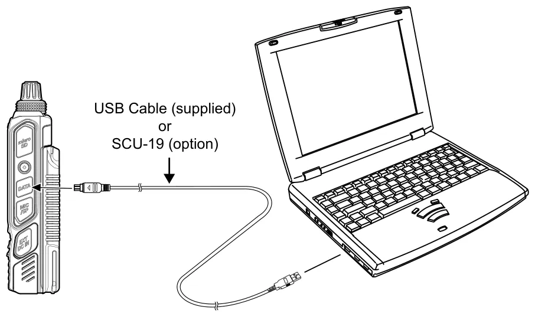</button><figcaption>Figure from page 161. USB Cable (supplied) or SCU-19 (option)</figcaption><dialog id="fig-55"><p>Figure from page 161. USB Cable (supplied) or SCU-19 (option)</p><form method="dialog"><button>Close</button></form></dialog></figure><p>~~<strong>Connecting to an External Device</strong>~~</p>
<p>The location information data can be exchanged with commercially available GPS
receivers or other external devices by using the optional Data Cable (CT-170).</p>
<p>~~<strong>Tip</strong>~~</p>
<p>Connect the Data Cable (CT-170) and the Data Output Cable (CT-176) referring to the instruction
manual for the connected device and the following cable specifications.</p>
<p>~~<strong>Connection Cables</strong>~~</p>
<p><strong>Data Cable (CT-170)</strong></p>
<p>①</p>
<p>①
↓
⑤</p>
<p>⑥
↓
⑪</p>
<p>③</p>
<p>②</p>
<p>⑦ RXD (Serial data input [FT2D← External device) ① RXD (Serial data input [FT2D←External device])
⑧ TXD (Serial data output [FT2D→External device) ② TXD (Serial data output [FT2D→External device])
⑪ GND ③ GND</p>
<p><strong>Data Output Cable (CT-176)</strong></p>
<p>③</p>
<p>②</p>
<p>③</p>
<p>②</p>
<p>① RXD (Serial data input [FT2D←External device) ① TXD (Serial data output [FT2D→External device])
② TXD (Serial data output [FT2D→External device) ② RXD (Serial data input [FT2D←External device])
③ GND ③ GND</p><p>① Speaker / Microphone (MH-34B4B)
② Earpiece Microphone (SSM-57A)
③ VOX Headset (SSM-63A)
④ Microphone Adapter (CT-44)
⑤ DC Cable w/ Noise Filter (SDD-13)</p>
<p>⑫ Rapid Charger (CD-41)
⑬ Battery Charger</p>
<p>(USA/EXP market only)
⑥ DC Cable (E-DC-6) (USA/EXP market only)
⑦ BNC-to-SMA Adapter (CN-3)
⑧ Soft Case (SHC-24)
⑨ 3x “AA” Cell Battery Case (FBA-39)
⑩ Lithium Ion Battery Packs</p>
<p>(Equivalent of the supplied accessory)
(PA-48B/C/F/U*)
Battery Charger (SAD-14B; for USA market)
⑭ Speaker Microphone with Snapshot camera</p>
<p>(MH-85A11U)
⑮ Clone Cable (CT-168)
⑯ Data Cable (CT-170)
⑰ PC connection cable (SCU-19)
⑱ PC connection cable (CT-169)
⑲ Data Cable (2.5Φ) (CT-176)
⑳ Belt Clip (SHB-13)</p>
<p>(FNB-101LI, 7.4 V, 1,100 mAh)
⑪ Lithium Ion Battery Packs</p>
<p>(Equivalent of the supplied accessory)
(SBR-14LI: 7.2 V, 2,200 mAh)</p>
<ul>
<li>“B” suffix is for use with 120 VAC (Type-A plug), “C” suffix is for use with 230-240 VAC (Type-C plug),
“F” suffix is for use with 220 VAC, and “U” suffix is for use with 230 VAC (Type-BF plug).</li>
</ul>
<p><em>Availability of accessories may vary. Some accessories are supplied as standard per local requirements,</em>
<em>while others may be unavailable in some regions. Consult your Yaesu Dealer for details regarding these</em></p>
<p><em>d</em> <em>l</em> <em>il</em> <em>bl</em> <em>ti</em> <em>C</em> <em>ti</em> <em>f</em> <em>t</em> <em>d b</em> <em>Y</em> <em>h</em> <em>ld it</em></p><figure><button aria-label="Enlarge Figure from page 163. ⑦ ①" class="zoom" data-dialog="fig-56" type="button"></button><figcaption>Figure from page 163. ⑦ ①</figcaption><dialog id="fig-56"><p>Figure from page 163. ⑦ ①</p><form method="dialog"><button>Close</button></form></dialog></figure><p><strong>The transceiver does not turn on.</strong></p>
<p>⿠ ⿠Is the battery depleted?</p>
<p>⿠ ⿠Charge the battery pack after purchase, and when the transceiver has not been used for a long time.</p>
<p>⿠ ⿠Is the battery pack properly attached?</p>
<p>Refer to “Mounting the battery pack” and securely mount the battery pack.
⿠ ⿠Is the external power supply properly connected?</p>
<p>When using an external power supply, connect the external power supply adapter with a cigarette
lighter plug (SDD-13) or an external power cable (E-DC-6) to DC input jack.
⿠ ⿠Is the voltage of the battery pack or the SDD-13 correct?</p>
<p>Be sure that there is a charge left in the battery pack (do not completely discharge). Check that the
output voltage of the SDD-13 is approximately 12V.</p>
<p><strong>There is no sound.</strong></p>
<p>⿠ ⿠Is the level of squelch (or S meter squelch) set too high?</p>
<p>Press the Monitor Switch and verify that you can hear white noise.
Adjust the level of squelch (or S meter squelch) when receiving a weak signal.
⿠ ⿠Is the volume low?</p>
<p>Rotate the VOL knob clockwise to increase the volume.
⿠ ⿠Is the tone squelch or DCS on?</p>
<p>When the tone squelch or DCS is on, the sound is not output until the transceiver receives a signal
containing the same tone frequency or DCS code set.</p>
<p><strong>There is no transmission of radio waves.</strong></p>
<p>⿠ ⿠Are you pressing the switch properly?
⿠ ⿠Is the PTT lock on?</p>
<p>⿠ ⿠Is the Busy TX Block (BCLO function) on?</p>
<p>When the Busy TX Block (BCLO function) is on, transmission cannot be done when receiving a signal
even if is pressed. Wait until signal being received stops and then press .
⿠ ⿠Is the transmission frequency on a ham radio band?</p>
<p>Transmission cannot be performed on the AM Radio Broadcast Band/ Short Wave Radio Band/ FM
Radio Broadcast Band/ Air Band/ Information Radio Band.
⿠ ⿠Is the voltage of the battery pack or external power source correct?</p>
<p>Check the remaining charge on the battery pack.
In addition, using an inadequate power supply where voltage drops during transmission will prevent
the FT2DR/DE from operating at full capability.</p>
<p><strong>The keys or DIAL does not respond.</strong></p>
<p>⿠ ⿠Is the Key Lock or DIAL Lock on?</p><p><strong>The battery pack cannot be charged or battery</strong>
<strong>power depletes immediately after charging.</strong></p>
<p>⿠ ⿠Is the battery pack being charged with a charger specified by Yaesu?</p>
<p>Charge the battery pack using the accessory battery charger (PA-48B or SAD-14B) or the rapid
charge cradle (CD-41).
When using a external power supply, use the external power supply adapter with a cigarette lighter
plug (SDD-13) or an external power cable (E-DC-6).
⿠ ⿠Is the battery pack in use exhausted?</p>
<p>If the “Charging Error” appears on the LCD when charging, there is a chance the battery pack is over
discharged. If the error is repetitively displayed after charging the battery pack several times, the
battery pack may have reached its service life be defective. Battery packs are consumables. Please
replace the battery pack with a new one immediately. Battery packs can be charged and reused up to
approximately 300 times.</p>
<p>Depending on the combination for simultaneous reception, there may be internal beats from high
frequencies caused by the internal oscillator. This is not a malfunction. (See the calculation formula below:
“n” is for the arbitrary integer). Depending on the combination for simultaneous reception, there may be
fluctuations in receive sensitivity.</p>
<p>⿠ ⿠Receive Frequency = 12 MHz × n multiplicative</p>
<p>⿠ ⿠Receive Frequency = 16 MHz × n multiplicative</p>
<p>⿠ ⿠Receive Frequency = 15.6 MHz × n multiplicative</p>
<p>⿠ ⿠Receive Frequency = 4.9152 MHz × n multiplicative</p>
<p>⿠ ⿠Receive Frequency = 15.6 MHz × n multiplicative</p>
<p>⿠ ⿠Receive Frequency = 18.432 MHz × n multiplicative</p>
<p>⿠ ⿠Upper Side (A-Band) Frequency = (Lower Side (B-band) Frequency ± 46.35 MHz) × n multiplicative</p>
<p>⿠ ⿠Upper Side (A-Band) Frequency = (Lower Side (B-band) Frequency ± 47.25 MHz) × n multiplicative</p>
<p>@ Upper Side (A-band) Mode = NFM</p><p>~~<strong>A</strong>~~</p>
<p>Adjusting the LCD Backlight and Key Button Light</p>
<ul>
<li>Brightness Level — 130</li>
<li>Adjusting the LCD Contrast Level — 129</li>
<li>Adjusting the Microphone Sensitivity . — 134</li>
<li>AF-DUAL — 100</li>
<li>Alphabet Input Screen — 19</li>
<li>AM Radio . — 42</li>
<li>AMS . — 39</li>
<li>APRS . — 85</li>
<li>APRS Menu Operations — 153</li>
</ul>
<p>Assigning Name to Memory Bank....................................64, 136</p>
<ul>
<li>Assigning Name to Memory Channel — 136</li>
<li>Attaching the Supplied Accessories — 20</li>
</ul>
<p>Attenuator (ATT) Function................................................50, 132</p>
<ul>
<li>Auto Power-Off Function — 145</li>
</ul>
<p>~~<strong>B</strong>~~</p>
<ul>
<li>Backtrack Function — 93</li>
<li>BACKTRACK Screen — 18</li>
<li>Band Scope Screen — 17</li>
<li>Basic Operation — 32</li>
<li>Battery Case . — 25</li>
<li>Battery Pack — 22</li>
<li>Bell Function . — 114</li>
<li>Busy Channel Lockout (BCLO) Function — 145</li>
</ul>
<p>~~<strong>C</strong>~~</p>
<ul>
<li>CALLSIGN Menu Operations — 158</li>
<li>Canceling Memory Channel Registration in Memory Bank — 63</li>
<li>Changing the Display Pattern of the S-Meter — 131</li>
<li>Changing the Frequency Step Manually — 151</li>
<li>Changing the Home Channel Frequency — 58</li>
<li>Changing the Lighting Condition — 129</li>
<li>Changing the Number of Times the Bell Rings — 115</li>
</ul>
<p>Changing the Opening Message Displayed Immediately</p>
<ul>
<li>after Power-on — 130</li>
<li>Clearing Memories — 59</li>
</ul>
<p>Clock Time <strong>.</strong> ......................................................................43, 151</p>
<ul>
<li>Clock Type Function — 147</li>
<li>Clone Operation — 160</li>
<li>CONFIG Menu Operations — 145</li>
<li>Connecting to an External Device — 162</li>
<li>Connecting to a PC — 161</li>
<li>Connection Cables — 162</li>
<li>Convenient Functions . — 96</li>
</ul>
<p>~~<strong>D</strong>~~</p>
<p>Deleting the Frequency Registered to the Skip Search</p>
<ul>
<li>Memory Channel — 73</li>
<li>Digital Group Monitor Function . — 83</li>
<li>Displaying the Battery Voltage — 130</li>
<li>Displaying the Memory Tag — 61</li>
<li>Displaying the Software Version . — 131</li>
<li>Displaying Your Location in Digital Mode — 134</li>
<li>DISPLAY Menu Operations — 128</li>
<li>DTMF Function . — 103</li>
<li>DTMF Memory . — 103</li>
<li>Dual Band Screen — 17</li>
<li>Dual Receive (DW) Function — 96</li>
<li>DW . — 96</li>
</ul>
<p>~~<strong>E</strong>~~</p>
<ul>
<li>E-DC-6 . — 27</li>
<li>External Device — 161</li>
</ul>
<p>External Power Supply.......................................................26, 27</p>
<p>~~<strong>F</strong>~~</p>
<ul>
<li>FBA-39 — 25</li>
<li>FM Radio — 42</li>
<li>Formatting a microSD Memory Card . — 156</li>
<li>Frequency Step — 47</li>
<li>Function Menu Screen — 17</li>
</ul>
<p>~~<strong>G</strong>~~</p>
<ul>
<li>GM . — 83</li>
<li>GM Menu Operations — 144</li>
<li>GPS — 86</li>
<li>GPS Log Function — 89</li>
<li>GPS Operation — 91</li>
<li>GPS Screen Information — 91</li>
</ul>
<p>~~<strong>H</strong>~~</p>
<ul>
<li>Home Channel Dual Receive — 98</li>
</ul>
<p>~~<strong>I</strong>~~</p>
<ul>
<li>If you suspect malfunction — 164</li>
</ul>
<p>~~<strong>L</strong>~~</p>
<ul>
<li>LED Light . — 148</li>
<li>Loading Data to/from microSD Memory Card — 154</li>
</ul>
<p>Loading GROUP ID Information to/from a microSD</p>
<ul>
<li>Memory Card . — 155</li>
</ul>
<p>Loading Memory Channel Information to/from microSD</p>
<ul>
<li>Memory Card . — 155</li>
<li>LOCK Function — 148</li>
<li>Locking Keys — 49</li>
<li>Locking Switches . — 49</li>
</ul>
<p>~~<strong>M</strong>~~</p>
<ul>
<li>Manually Transmitting the DTMF Code — 105</li>
<li>Memory . — 54</li>
<li>Memory Bank — 62</li>
<li>Memory Bank Link Scanning . — 79</li>
<li>Memory Channel Dual Receive . — 98</li>
<li>Memory Channel Scanning — 76</li>
<li>MEMORY Menu Operations . — 136</li>
<li>Memory Tag . — 59</li>
<li>Mode — 48</li>
</ul>
<p>Muting Audio <strong>.</strong> ...................................................................44, 135</p>
<p>~~<strong>N</strong>~~</p>
<p>New Pager Function.......................................................116, 139</p>
<ul>
<li>Notification of a Call from a Remote Station by the Bell . — 138</li>
<li>Number Input Screen — 19</li>
</ul>
<p>~~<strong>O</strong>~~</p>
<p>O ti B d 34</p><ul>
<li>Optional Parts . — 163</li>
<li>OPTION Menu Operations — 157</li>
</ul>
<p>~~<strong>P</strong>~~</p>
<ul>
<li>Packet Communication — 159</li>
<li>Password Function — 149</li>
</ul>
<p>Permitting/Prohibiting Transfer of Home Channel</p>
<ul>
<li>Frequency to VFO — 147</li>
<li>PMS . — 81</li>
<li>Preset Receiver — 65</li>
<li>Programmable Memory Channel Scan — 81</li>
</ul>
<p>Prohibiting Registration to a Memory Channel</p>
<ul>
<li>Memory Channel Protect Function — 137</li>
<li>PTT DELAY Function — 150</li>
</ul>
<p>~~<strong>R</strong>~~</p>
<ul>
<li>Recalling a Memory Channel — 57</li>
<li>Recalling Memory Bank — 63</li>
<li>Recalling the Home Channels — 57</li>
<li>Receiver Battery Save Function — 151</li>
<li>Registering to Memory Banks — 62</li>
<li>Registering to Memory Channel — 55</li>
<li>Repeater Operation — 52</li>
<li>Reset — 51</li>
<li>Resetting the All Set Mode Settings — 120</li>
<li>Restoring the Cleared Memories . — 59</li>
<li>RPT ARS Function — 150</li>
<li>RPT SHIFT FREQ Function — 151</li>
<li>RPT SHIFT Function — 150</li>
</ul>
<p>~~<strong>S</strong>~~</p>
<ul>
<li>Saving Data to/from microSD Memory Card — 154</li>
</ul>
<p>Saving GROUP ID Information to/from a microSD Memory</p>
<ul>
<li>Card . — 155</li>
</ul>
<p>Saving Memory Channel Information to/from microSD</p>
<ul>
<li>Memory Card . — 155</li>
<li>SCAN Menu Operations — 142</li>
<li>Scanning Function . — 71</li>
<li>Scanning the Memory Bank — 79</li>
<li>SD CARD Menu Operations . — 154</li>
<li>SDD-13 . — 26</li>
<li>SD Memory Card . — 29</li>
<li>Searching for the CTCSS Tone — 111</li>
<li>Searching for the DCS Code — 112</li>
<li>Selecting a CTCSS Tone Frequency . — 141</li>
<li>Selecting a DCS Code — 138</li>
<li>Selecting a Frequency Band — 37</li>
<li>Selecting a Receive Operation When Scanning Stops — 143</li>
<li>Selecting the Communication Mode . — 39</li>
<li>Selecting the Display Language — 129</li>
<li>Selecting the Squelch Type — 109</li>
<li>Selecting the Vibrator Operation Mode — 114</li>
<li>Set Mode — 119</li>
<li>Set Mode Operation — 119</li>
</ul>
<p>Setting a Time Interval for Saving GPS Position</p>
<ul>
<li>Information — 147</li>
<li>Setting Memory Bank Link — 136</li>
<li>Setting the Compass Display — 128</li>
<li>Setting the DCS Code — 112</li>
<li>Setting the DTMF Code . — 139</li>
<li>Setting the Key Operation Confirmation Sound — 146</li>
<li>Setting the Memory Channels Used for Registration — 137</li>
</ul>
<p>Setting the Operation of the Key 148</p>
<ul>
<li>Information — 133</li>
<li>Setting the Receive Operation When Scanning Stops — 74</li>
<li>Setting the Scanning Range . — 143</li>
<li>Setting the Search Channels . — 128</li>
<li>Setting the Squelch Type for the Digital Mode — 133</li>
<li>Setting the Standby Beep . — 134</li>
<li>Setting the Tone Frequency . — 110</li>
<li>Setting the Transmission Method of the DTMF Code — 138</li>
<li>Setting the Transmit Modulation Level — 132</li>
<li>Setting the Type of Squelch . — 141</li>
</ul>
<p>Setting What to Display Using the Smart Navigation</p>
<ul>
<li>Function . — 128</li>
<li>SIGNALING Menu Operations — 138</li>
<li>Simultaneous Radio Broadcast Reception — 135</li>
<li>Skip Search Memory — 72</li>
<li>Smart Navigation — 93</li>
<li>S-Meter Squelch Function — 140</li>
<li>Snapshot Function — 107</li>
<li>Specifications — 168</li>
<li>Specifying Skip/Selected Memory Channels . — 77</li>
<li>Spectrum Analyzer — 106</li>
<li>Split Memory — 56</li>
<li>SQL EXPANSION Function — 140</li>
<li>SQL LEVEL Function . — 139</li>
<li>Squelch Level — 47</li>
<li>Supplied Items . — 8</li>
<li>Swapping the Dial Knob Functions — 152</li>
<li>Switching the Receive Mode — 133</li>
</ul>
<p>~~<strong>T</strong>~~</p>
<ul>
<li>Tables of Set Mode Operations — 121</li>
<li>Timer Function . — 149</li>
<li>Tone Calling (1750 Hz) — 53</li>
<li>Tone Search Function — 141</li>
<li>Tone Squelch Function — 109</li>
<li>TOT Function . — 152</li>
<li>Touch Screen — 7</li>
<li>Transmission Power Level — 46</li>
</ul>
<p>Transmitting and Receiving a DCS Code with an Inverted</p>
<ul>
<li>Phase DCS INVERSION Function — 138</li>
<li>Transmitting the Registered DTMF Code . — 104</li>
<li>Transmitting the Saved Image to Other Transceivers — 108</li>
<li>Tuning to a Frequency . — 38</li>
<li>Turning off the BUSY Indicator — 146</li>
<li>TX/RX Menu Operations — 132</li>
</ul>
<p>~~<strong>V</strong>~~</p>
<ul>
<li>VFO Dual Receive . — 97</li>
<li>VFO MODE Function — 152</li>
<li>VFO Scan — 71</li>
</ul>
<p>Vibration.........................................................................113, 152</p>
<ul>
<li>Viewing the Saved Image . — 108</li>
<li>Volume Level — 34</li>
</ul>
<p>~~<strong>W</strong>~~</p>
<ul>
<li>Weather Alert Feature — 141</li>
<li>WIRES-X — 85</li>
<li>WIRES-X Menu Operations — 144</li>
</ul><p>y <strong>y</strong> <strong>General</strong></p>
<p><strong>Frequency Range (A):</strong> <strong>RX:</strong> 520 - 1710 kHz, 1.8 - 30 MHz,</p>
<p>30 - 76 MHz (USA version),
30 - 88 MHz (EXP/European version),
76 - 108 MHz (USA version),
88 - 108 MHz (EXP/European version),
108 - 137 MHz, 137 - 174 MHz,
174 - 222 MHz,
222 - 420 MHz,
420 - 774 MHz (USA version),
420 - 800 MHz (EXP/European version),
803 - 999 MHz (Cellular Blocked, USA version),
800 - 999 MHz (EXP/European version)</p>
<p><strong>Frequency Range (B):</strong> <strong>RX:</strong> 108 - 137 MHz, 137 - 174 MHz,</p>
<p>174 - 222 MHz,
222 - 420 MHz, 420 - 470 MHz,
470 - 580 MHz</p>
<p><strong>Frequency Range (A/B):</strong> <strong>TX:</strong> 144 - 146 MHz or 144 - 148 MHz,</p>
<p>430 - 440 MHz or 430 - 450 MHz</p>
<p><strong>Channel Steps:</strong> 5, 6.25, 8.33, 9, 10, 12.5, 15, 20, 25, 50, 100 kHz</p>
<p><strong>Mode of Emission:</strong> F1D, F2D, F3E, F7W</p>
<p><strong>Frequency Stability:</strong> ±2.5 ppm (−20 °C to +60 °C [−4 °F to +140 °F])</p>
<p><strong>Operating Temperature Range:</strong> −20 °C to +60 °C (−4 °F to +140 °F)</p>
<p><strong>Supply Voltage:</strong> Nominal: 7.2 V DC, Negative Ground SBR-14LI,
Nominal: 7.4 V DC, Negative Ground FNB-101LI,
4 - 14 V DC (Negative Ground (EXP DC JACK)),
11 - 16 V DC (Negative Ground (EXP DC JACK with SDD-13))</p>
<p><strong>Current Consumption (Approx.):</strong> <strong>RX:</strong> 120 mA (Mono Band Receive)</p>
<p>180 mA (Dual Band Receive)
80 mA (Mono Band Receive, Standby)
110 mA (Dual Band Receive, Standby)
50 mA (Mono Band Receive, Standby, Saver On “Save Ratio 1:5”)
50 mA (Dual Band Receive, Standby, Saver On “Save Ratio 1:5”)
+20 mA (Digital)
+20 mA (GPS On)
400 μA (Auto Power Off)
<strong>TX:</strong> 1.6 A (5 W TX, 144 MHz 7.2 V DC)</p>
<p>1.8 A (5 W TX, 430 MHz 7.2 V DC)</p>
<p><strong>Case Size (W</strong> × <strong>H</strong> × <strong>D):</strong> 62 × 110 × 32.5 mm (2.4″ × 4.3″ × 1.3″)
(with SBR-14LI, w/o knob, antenna &amp; belt clip)
62 × 110 × 27 mm (2.4″ × 4.3″ × 1.1″)
(w/o SBR-14LI, knob, antenna &amp; belt clip)</p>
<p><strong>Weight (Approx.):</strong> 310 g (10.93 oz) (with SBR-14LI &amp; Antenna)</p><table>
<thead>
<tr>
<th>y y Transmitter</th>
<th>Specifications</th>
</tr>
</thead>
<tbody>
<tr>
<td><strong>y</strong></td>
<td></td>
</tr>
<tr>
<td>y <strong>Transmitter</strong></td>
<td></td>
</tr>
<tr>
<td></td>
<td></td>
</tr>
<tr>
<td><strong>Output Power:</strong></td>
<td>5 W (@ 7.2 V DC or EXT DC)</td>
</tr>
<tr>
<td><strong>Modulation Type:</strong></td>
<td>F1D, F2D, F3E: Variable Reactance Modulation</td>
</tr>
<tr>
<td>F7W: 4 FSK (C4FM)</td>
<td></td>
</tr>
<tr>
<td><strong>Spurious Emission:</strong></td>
<td></td>
</tr>
<tr>
<td><strong>y</strong></td>
<td></td>
</tr>
<tr>
<td>y <strong>Receiver</strong></td>
<td></td>
</tr>
<tr>
<td><strong>Circuit Type:</strong></td>
<td>USA/EXP version</td>
</tr>
<tr>
<td>At least 60 dB below (@TX Power HI, L3)</td>
<td></td>
</tr>
<tr>
<td>At least 50 dB below (@TX Power L2, L1)</td>
<td></td>
</tr>
<tr>
<td>European version</td>
<td></td>
</tr>
<tr>
<td>At least 60 dB below (@TX Power HI, L3, L2)</td>
<td></td>
</tr>
<tr>
<td>At least -36 dBm below (@TX Power L1)</td>
<td></td>
</tr>
<tr>
<td>Double-conversion super heterodyne (NFM / AM)</td>
<td></td>
</tr>
<tr>
<td>Direct-conversion (AM / FM Radio)</td>
<td></td>
</tr>
<tr>
<td><strong>Intermediate Frequency:</strong></td>
<td></td>
</tr>
<tr>
<td>1st: A- Band 47.25 MHz (NFM / AM)</td>
<td></td>
</tr>
<tr>
<td>1st: B- Band 46.35 MHz (NFM / AM)</td>
<td></td>
</tr>
<tr>
<td>2nd: 450 kHz (NFM / AM)</td>
<td></td>
</tr>
<tr>
<td><strong>Sensitivity (for 12dB SINAD):</strong></td>
<td>3 μV for 10 dB SN (0.5 - 30 MHz, AM)</td>
</tr>
<tr>
<td>0.35μV TYP for 12 dB SINAD (30 - 54 MHz, NFM)</td>
<td></td>
</tr>
<tr>
<td>1 μV TYP for 12 dB SINAD (54 - 76 (88) MHz, NFM)</td>
<td></td>
</tr>
<tr>
<td>1.5μV TYP for 12 dB SINAD (76 (88) - 108 MHz, WFM)</td>
<td></td>
</tr>
<tr>
<td>1.5μV TYP for 10 dB SN (108 - 137 MHz, AM)</td>
<td></td>
</tr>
<tr>
<td>0.2μV for 12 dB SINAD (137 - 140 MHz, NFM)</td>
<td></td>
</tr>
<tr>
<td>0.16μV for 12 dB SINAD (140 - 150 MHz, NFM)</td>
<td></td>
</tr>
<tr>
<td>0.2μV for 12 dB SINAD (150 - 174 MHz, NFM)</td>
<td></td>
</tr>
<tr>
<td>1 μV for 12 dB SINAD (174 - 222 MHz, NFM)</td>
<td></td>
</tr>
<tr>
<td>0.5μV for 12 dB SINAD (300 - 350 MHz, NFM)</td>
<td></td>
</tr>
<tr>
<td>0.2μV for 12 dB SINAD (350 - 400 MHz, NFM)</td>
<td></td>
</tr>
<tr>
<td>0.18μV for 12 dB SINAD (400 - 470 MHz, NFM)</td>
<td></td>
</tr>
<tr>
<td>1.5μV for 12 dB SINAD (470 - 540 MHz, NFM)</td>
<td></td>
</tr>
<tr>
<td>3 μV TYP for 12 dB SINAD (540 - 800 MHz, NFM)</td>
<td></td>
</tr>
<tr>
<td>1.5μV TYP for 12 dB SINAD (800 - 999 MHz, NFM, Cellular Blocked)</td>
<td></td>
</tr>
<tr>
<td>0.19μV TYP for BER 1% (Digital Mode)</td>
<td></td>
</tr>
<tr>
<td>(USA Version Cellular Blocked)</td>
<td></td>
</tr>
<tr>
<td><strong>Selectivity (−6dB/−60dB):</strong></td>
<td>12 kHz / 35 kHz (NFM/AM)</td>
</tr>
<tr>
<td><strong>AF Output:</strong></td>
<td>700 mW (8Ω for 10 % THD 7.2 V) internal speaker</td>
</tr>
<tr>
<td></td>
<td></td>
</tr>
<tr>
<td></td>
<td>300 mW (8Ω for 10 % THD 7.2 V) external speaker</td>
</tr>
</tbody>
</table>
<p><em>Specifications are subject to change without notice, and are guaranteed within the 144/222 (USA</em>
<em>version)/430 MHz amateur bands only.</em></p><p>device, pursuant to Part 15 of the FCC Rules. These limits are designed to provide reasonable
protection against harmful interference in a residential installation. This equipment generates,
uses and can radiate radio frequency energy and, if not installed and used in accordance with
the instructions, may cause harmful interference to radio communications. However, there is no
guarantee that interference will not occur in a particular installation.</p>
<p>If this equipment does cause harmful interference to radio or television reception, which can
be determined by turning the equipment off and on, the user is encouraged to try to correct the
interference by one or more of the following measures:</p>
<p> Increase the separation between the equipment and receiver.</p>
<p> Connect the equipment into an outlet on a circuit different from that to which the receiver is</p>
<p>connected.</p>
<p> Consult the dealer or an experienced radio/TV technician for help.</p>
<ol>
<li>Changes or modifications to this device not expressly approved by YAESU MUSEN could void
the user’s authorization to operate this device.</li>
<li>The scanning receiver in this equipment is incapable of tuning, or readily being altered, by
the User to operate within the frequency bands allocated to the Domestic public Cellular
Telecommunications Service in Part 22.</li>
</ol>
<p>This device complies with Industry Canada license-exempt RSS standard(s).
Operation is subject to the following two conditions: (1) this device may not cause interference,
and (2) this device must accept any interference, including interference that may cause undesired
operation of the device.</p>
<p>Le présent appareil est conforme aux CNR d’Industrie Canada applicables aux appareils radio
exempts de licence. L’exploitation est autorisée aux deux conditions suivantes : (1) l’appareil
ne doit pas produire de brouillage, et (2) l'utilisateur de l’appareil doit accepter tout brouillage
radioélectrique subi, même si le brouillage est susceptible d’en compromettre le fonctionnement.</p>
<p>Part 15.21: Changes or modifications to this device not expressly approved by YAESU MUSEN
could void the user’s authorization to operate this device.</p>
<p><strong>DECLARATION BY MANUFACTURER</strong>
The Scanner receiver is not a digital scanner and is incapable of being converted or modified to
a digital scanner receiver by any user.</p>
<p><strong>WARNING:</strong> MODIFICATION OF THIS DEVICE TO RECEIVE CELLULAR
RADIOTELEPHONE SERVICE SIGNALS IS PROHIBITED UNDER FCC RULES
AND FEDERAL LAW.</p><h3 id="declaration-of-conformity"><strong><em>Declaration of Conformity</em></strong></h3>
<p>Type of Equipment: 144/430MHz Digital/Analog Transceiver
Brand Name: YAESU
Model Number: FT2DR
Manufacturer: YAESU MUSEN CO., LTD.
Address of Manufacturer: Tennozu Parkside Building, 2-5-8 Higashi-Shinagawa,
Shinagawa-ku,Tokyo 140-0002 Japan</p>
<p>This device complies with part 15 of the FCC Rules. Operation is subject to the following
two conditions; (1) this device may not cause harmful interference, and (2) this device
must accept any interference received, including interference that may cause undesired
operation.</p>
<p>The technical documentation as required by the Conformity Assessment procedures is
kept at the following address:</p>
<p>Company: Yaesu U.S.A.
Address: 6125 Phyllis Drive, Cypress, CA 90630, U.S.A.
Telephone: (714) 827-7600</p>
<p><strong>Attention in case of use</strong></p>
<p>This transceiver works on frequencies which are not generally permitted.
As for the actual usage, the user has to possess an amateur
radio licence.
Usage is allowed only in the frequency bands which are al</p><p>Winnall Close
Winchester SO23 OLB
United Kingdom
Tel: +44 (0)1962 866667
Fax: +44 (0)1962 856801
Email: sales@yaesu.co.uk</p>
<h3 id="declaration-of-conformity-2"><em>Declaration of Conformity</em></h3>
<p>Nr. YUK-DOC-0501-15</p>
<p>We, Yaesu UK Ltd. certify and declare under our sole responsibility that the following equipm
complies with the essential requirements of the Directive 1999/5/EC and 2011/65/EU.</p>
<p><strong>Applicable Standards:</strong></p>
<table>
<thead>
<tr>
<th>This equipment is tested to and con in following standards:</th>
<th>nforms to the essential requirements of directive, as inclu EN 50566 :2013</th>
</tr>
</thead>
<tbody>
<tr>
<td></td>
<td></td>
</tr>
<tr>
<td>Health</td>
<td></td>
</tr>
<tr>
<td>1999/5/EC Art. 3 (1) (a)</td>
<td>EN 50566 :2013</td>
</tr>
<tr>
<td></td>
<td></td>
</tr>
<tr>
<td></td>
<td></td>
</tr>
<tr>
<td>Health</td>
<td></td>
</tr>
<tr>
<td>1999/5/EC Art. 3 (1) (a)</td>
<td></td>
</tr>
</tbody>
</table>
<p>|
|
Health
1999/5/EC Art. 3 (1) (a)|</p>
<p>|
|Safety
1999/5/EC Art. 3 (1) (a)|
EN 60950-1:2006 + A12:2011
|
|Safety
1999/5/EC Art. 3 (1) (a)|</p>
<p>|
|Safety
1999/5/EC Art. 3 (1) (a)|</p>
<p>|
|EMC
1999/5/EC Art. 3 (1) (b)|
EN 301 489-01 V1.9.2
|
|EMC
1999/5/EC Art. 3 (1) (b)|
EN 301 489-15 V1.2.1
|
|EMC
1999/5/EC Art. 3 (1) (b)|</p>
<p>|
|Radio Spectrum
1999/5/EC Art. 3 (2)|
EN 301 783-02 V1.2.1
|
|Radio Spectrum
1999/5/EC Art. 3 (2)|</p>
<p>|
|Radio Spectrum
1999/5/EC Art. 3 (2)|</p>
<p>|
|ROHS2
2011/65/EU Art. 7 (b)
|
EN 50581:2012
|
|ROHS2
2011/65/EU Art. 7 (b)
|</p>
<p>|
|ROHS2
2011/65/EU Art. 7 (b)
|
|</p>
<p>The technical documentation as required by the Conformity Assessment procedures is ke
the following address:</p>
<p>Company Yaesu UK Ltd
Address Unit 12, Sun Valley Business Park, Winnall Close
Technical Construction file
Winchester, Hampshire UK SO23 0LB
Issued by: Yaesu Musen Co. Ltd, Tokyo Japa
File No: YETA00389
Drawn up in: Winchester, Hampshire UK
Date: 08-May 2015</p><figure><button aria-label="Enlarge Figure from page 172" class="zoom" data-dialog="fig-57" type="button"></button><figcaption>Figure from page 172</figcaption><dialog id="fig-57"><p>Figure from page 172</p><form method="dialog"><button>Close</button></form></dialog></figure><p><strong>YAESU MUSEN CO., LTD.</strong>
Tennozu Parkside Building
2-5-8 Higashi-Shinagawa, Shinagawa-ku, Tokyo
140-0002 Japan</p>
<p><strong>YAESU USA</strong>
6125 Phyllis Drive, Cypress, CA 90630, U.S.A.</p>
<p><strong>YAESU UK</strong></p>
<p>Copyright 2015
YAESU MUSEN CO., LTD.
All rights reserved.
No portion of this manual
may be reproduced
without the permission of
YAESU MUSEN CO., LTD.</p>
<p>Printed in Japan</p>
<p>1507D-AO</p>
    </main>
  </div>
  <script>document.querySelectorAll('button.zoom').forEach(function (b) {
  b.addEventListener('click', function () {
    var d = document.getElementById(b.getAttribute('data-dialog'));
    if (d && d.showModal) d.showModal();
  });
});</script>
</body>
</html>
